이 합본을 읽는 법
이 합본은 Claude Code에 늘 따라붙는 파일들, 즉 CLAUDE.md, 스킬, 훅, 서브에이전트를 어떻게 쓰고 다듬을지 다룬 영상 쉰두 편의 정리 노트를 한 흐름으로 다시 엮은 거예요. 내 하네스(~/.claude/ 아래 문서와 커스텀 스킬)를 고칠 때 옆에 펴 두고 쓰려고 만들었어요.
영상 순서가 아니라 주제 순서로 모았어요. 여러 영상이 같은 말을 하면 한 번만 쓰고 누가 그랬는지 밝혔어요. 말이 다르면 나란히 놓았고, 숫자로 된 기준은 마지막 절에 표로 다시 모았어요.
아래 그림이 이 글의 지도예요. 먼저 요청마다 무엇이 실려 가는지 보고, 규칙을 놓을 자리를 정해요. 그다음 CLAUDE.md, 스킬, 지시문을 쓰는 법을 보고, 훅·서브에이전트·검증으로 일을 나누는 법으로 넘어가요. 끝에서는 남의 스킬을 들이는 법과 모델이 바뀔 때 다시 볼 것을 다뤄요.
영상마다 이 합본에서 쓰인 자리는 다음과 같아요. 제목을 누르면 그 영상 하나만 정리한 노트로 가요. 본문에서는 둘째 열의 짧은 이름으로 불러요.
| 영상 | 본문에서 부르는 이름 | 채널 · 길이 | 이 합본에서 |
|---|---|---|---|
| 클로드 코드 설계자가 CLAUDE.md를 거의 안 쓰는 이유 | 홀먼 영상 | 마일드코드 · 11:02 | 2·3·5·7·8·12절 |
| AI가 엉터리 코드를 내놓는 이유와 고치는 법 | Kyle 강의 | Web Dev Simplified · 23:54 | 2·3·4·5·12절 |
| 앤트로픽 피셜: 클로드 스킬 만드는 규칙 (공식 7가지) | 스킬 규칙 7가지 | 낭만빌더 김스듴 · 11:54 | 5·11·12절 |
| 클로드 코드 공식 플러그인 4개로 토큰 절약 끝 | 공식 플러그인 4개 | 짐코딩 · 15:31 | 2·4·7·12절 |
| 플러터 개발자의 AI 워크플로우 | Ivanna 인터뷰 | Tech Bridge · 15:28 | 3·5·10·11·12절 |
| AI가 내 업무를 모르는 진짜 이유 | CLAUDE.md 입문 | 임대표의 AI(Artificial Intelligence)오피스 · 25:40 | 4절 |
| AI로 게임 만들 때 쓰는 에이전트 세팅 | 게임 팀 세팅 | MGD - Midnight Game Devs · 08:40 | 4·8·9·12절 |
| 같은 일인데 비용 263배 차이 | 263배 실험 | 코난쌤 conanssam · 12:27 | 2·8·11·12절 |
| AI 세컨드 브레인을 500번 넘게 세팅하며 얻은 팁 18가지 | 세컨드 브레인 18팁 | Ben AI · 29:44 | 4·5·12절 |
| 앤트로픽이 직접 말아주는 Fable 5.1 잘 쓰는 법 | Fable 5.1 가이드 | 코드팩토리 · 08:06 | 6·8·11절 |
| 클로드 코워크를 만든 앤트로픽 리드가 클로드에게 일을 맡기는 법 | 펠릭스 인터뷰 | AgentOS · 43:37 | 6·8·9·11절 |
| 클로드 스킬 깔기 전 확인할 3가지 | 스킬 점검 쇼츠 | AI 시스메이커 · 00:22 | 10절 |
| 클로드 코드 왕초보 가이드 — 팁 40개 | 왕초보 가이드 | AI싱크클럽 · 1:01:37 | 2·3·4·5·6·7·10·11·12절 |
| 유명 AI 코딩 스킬 7개 단계별 비교 | 코딩 스킬 7개 비교 | MINDUNG · 10:15 | 9·10절 |
| 맷 포콕 vs 애디 오스마니 vs 피스택 비교 총정리 | 세 스킬 묶음 비교 | MINDUNG · 05:06 | 5·9·10절 |
| Matt Pocock: AI 시대에 가장 값진 기술 | Matt Pocock 대담 | Nate Herk | AI Automation · 44:50 | 6·9·11절 |
| pstack: Cursor 엔지니어가 AI로 코드를 내보내는 방식 | pstack 해설 | Eric Tech · 14:56 | 3·9·10절 |
| AI 에이전트를 위한 엔지니어링 시스템 | 9 Skills | JavaScript Mastery · 23:33 | 4·6·9절 |
| Claude Code 팀의 코드 리뷰 방식을 내 프로젝트에 옮기는 법 | 리뷰 루프 | AI LABS · 15:58 | 4·7·9·12절 |
| 멀티 에이전트 쓰지 마세요 (실제 테스트 결과) | 멀티 에이전트 실험 | 챗대리의 AI연구소 · 09:15 | 8·10·12절 |
| 세컨드 브레인과 Eval로 에이전트에게 믿고 맡기기 | 메타 Eval 세미나 | 실밸개발자 · 1:17:53 | 3·4·5·9·11·12절 |
| 에이전트가 하네스를 직접 고친다 — Meta-Harness 스탠퍼드 연구 | Meta-Harness 해설 | 아프니까 개발자다 · 08:46 | 8·9·11·12절 |
| Anthropic이 정리한 Claude 4개 모델 고르는 기준 | 모델 고르기 기준 | AgentOS · 06:54 | 8·11·12절 |
| Claude Code로 더 나은 소프트웨어 팩토리 만들기 (v2) | 팩토리 v2 | ZazenCodes · 32:22 | 8·9·11·12절 |
| 클로드 코드 핵심 개발자의 AI 시대 초격차 사고법 | 초격차 사고법 | 마일드코드 · 17:49 | 6·9·12절 |
| AI로 게임 만들 때 작업 규칙에 넣을 네 가지 | 게임 규칙 네 가지 | MGD - Midnight Game Devs · 00:51 | 4·9·12절 |
| 코덱스·클로드 코드 토큰 낭비 줄이는 3가지 정리법 | 토큰 정리법 | 디렉터스AI · 14:52 | 2·4·5·12절 |
| Claude Code·Codex, 만든 회사는 이렇게 쓰길 바랍니다 (공식 문서 7가지) | 공식 문서 7가지 | Solostack · 09:26 | 2·3·4·6·7·8·9·11·12절 |
| AI 결과물이 좋아지는 7가지 습관 | 결과물 7가지 습관 | Jay Choi | 인디해커 라이프 · 09:43 | 4·6·9·12절 |
| 클로드 스킬 4개 중 1개가 위험, 엔비디아가 푼 무료 검사기 | SkillSpector 쇼츠 | AI 시스메이커 · 00:51 | 10·12절 |
| 해커톤 우승자가 만든 Everything Claude Code 플러그인 | ECC(Everything Claude Code) 소개 쇼츠 | PICKIT · 00:47 | 10절 |
| 글자로 된 계획은 그만, Claude Code 화면 미리보기 플러그인 | html-plan 플러그인 | techyoo · 10:32 | 6·12절 |
| 홈 레포: 여러 레포를 넘나드는 에이전트를 가장 쉽게 세팅하는 법 | 홈 레포 영상 | Matt Pocock · 08:53 | 3·4·12절 |
| Claude 모델과 노력 단계 고르는 법 — Anthropic 가이드 요약판 | 모델·노력 치트시트 | Ben AI · 15:34 | 2·8·11·12절 |
| AI 스킬은 이제 그만 쓰세요 | 스킬 그만 쇼츠 | 낭만빌더 김스듴 · 1:24 | 3·4·10·11·12절 |
| All Code Is Slop (Except Mine) — 에이전트 코드를 믿을 수 있게 만드는 법 | Lauren Tan 발표 | AI Engineer · 17:31 | 3·4·7·8·9·12절 |
| AI 코드 슬롭 안 만드는 법 — Grok Bot 팀의 장치들 | 슬롭 발표 해설 | AgentOS · 22:52 | 3·4·7·9·12절 |
| AI에 의존할수록 개발자가 잃는 것 | 애디 글 해설 | 허드의 AI딸깍 · 13:03 | 6·7·9·12절 |
| Claude Code 모범 사례, 다시 생각하기 — Lydia Hallie (Anthropic) | Lydia 발표 | AI Engineer · 17:31 | 3·4·6·7·8·9·11·12절 |
| 왜 다들 AI 에이전트를 재우기 시작했을까? 앤트로픽 드리밍 정리 | 드리밍 해설 | 메이커 에반 | Maker Evan · 13:37 | 2·4·6·8·11·12절 |
| Anthropic이 내놓은 Claude Code의 새 규칙 | Lydia 발표 해설 | Nate Herk | AI Automation · 9:40 | 3·4·6·7·8·9·11·12절 |
| CLAUDE.md 아직도 길게 쓰시는 분, 200줄 넘으면 생기는 일 | CLAUDE.md 200줄 영상 | 메이커 에반 | Maker Evan · 09:25 | 2·3·4·7·8·12절 |
| 왜 다들 서브에이전트를 지우고 있을까? 앤트로픽이 말하는 단일 에이전트 루프 | 단일 루프 해설 | 메이커 에반 | Maker Evan · 10:55 | 3·8·9·11·12절 |
| 인기 Claude Code 플러그인 다섯 개, 기본과 맞붙여 보니 | 플러그인 대결 실험 | Chase AI · 18:07 | 2·3·10·11·12절 |
| 2시간 만에 유튜브를 만든 프롬프트, 단어 5개 — 안드레이 카파시 | 카파시 해커튜브 | Tech Bridge · 10:19 | 6·9·10·11·12절 |
| AI 에이전트 감으로 고르시는 분, 테스트부터 짜세요 | Evals 주도 개발 | 메이커 에반 | Maker Evan · 14:16 | 8·9·11·12절 |
| 도구 호출이 코드로 바뀐 거 아세요? 코드 모드 총정리 | Code Mode 해설 | 메이커 에반 | Maker Evan · 10:53 | 2·7·12절 |
| 토큰 37% 아끼는데 작업 시간은 2배? 클로드 코드 Code Mode 완벽 정리 | Code Mode 속도 비교 | MINDUNG · 06:23 | 2·12절 |
| 클로드 Code Mode, 토큰 폭탄 맞던 사람이 지금 켜 볼 기능 | Code Mode 켜고 끄기 | Layperson · 09:10 | 2·7·12절 |
| AI한테 내 의도를 완벽하게 전하는 기술 (프롬프트 포함) | 리버스 프롬프팅 | 허드의 AI딸깍 · 11:58 | 5·6·12절 |
| 구글 Harness², AI 에이전트가 자기 하네스를 스스로 고친다 — 개념부터 직접 실행까지 | Harness² 해설 | 단테 · 15:18 | 3·5·7·8·9·11·12절 |
| [앤트로픽 공식 가이드] Opus 5.5 vs Fable 5.2 프롬프트 차이 | Opus·Fable 프롬프트 가이드 | MINDUNG · 06:51 | 6·11·12절 |
요청마다 무엇이 실려 가나요
Claude Code에 프롬프트를 보내면 그 문장만 가는 게 아니에요. Kyle 강의는 화이트보드에 함께 실려 가는 것들을 늘어놓고 시작해요. 도구가 써 둔 시스템 프롬프트, 저장소 맨 위의 AGENTS.md(Claude Code에서는 CLAUDE.md), 설치한 스킬의 이름과 설명은 모든 요청에 붙어요. 문서와 코드는 문제를 풀 때 필요하면 그때 읽혀요.
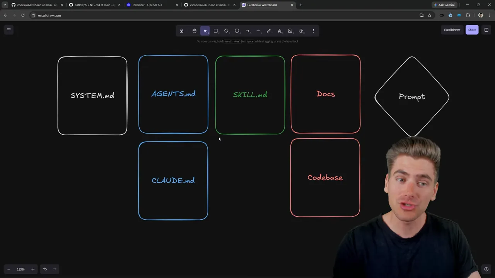
CLAUDE.md와 스킬 설명이에요. Kyle 강의 01:00에서 보기홀먼 영상은 공식 문서의 시각화 화면으로 같은 얘기를 해요. 첫 메시지를 치기도 전에 시스템 프롬프트, 자동 메모리, 스킬 설명, 전역과 프로젝트 CLAUDE.md가 컨텍스트 윈도우를 이미 차지하고 있어요. 홀먼은 CLAUDE.md를 대화가 오갈 때마다 통째로 내는 비용으로 보고, 그 내용의 90%는 지금 하는 작업과 상관이 없다고 말해요.
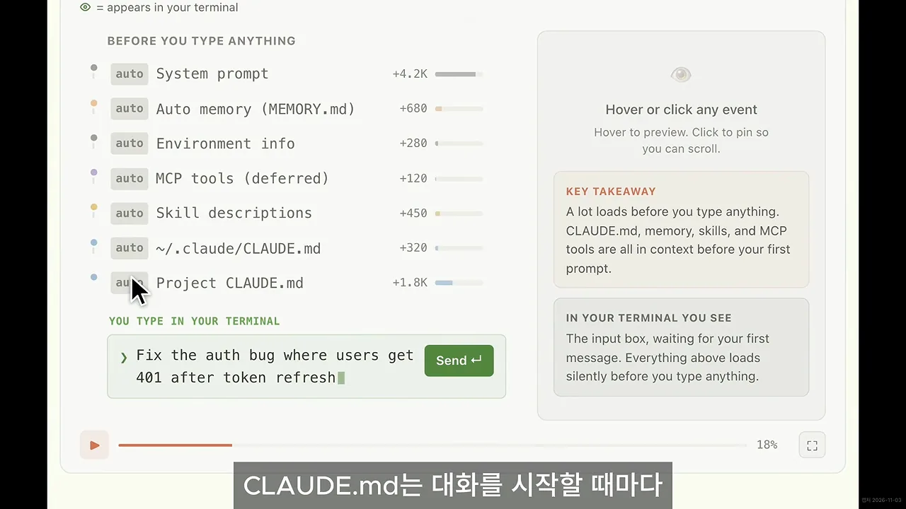
CLAUDE.md예요. 아무것도 묻기 전에 이미 실려 있어요. 홀먼 영상 01:30에서 보기둘째 줄의 자동 메모리도 내가 고칠 수 있는 짐이에요. 드리밍 해설에 따르면 Claude Code 자동 메모리는 세션을 시작할 때마다 MEMORY.md의 처음 200줄 또는 25KB까지를 컨텍스트에 넣어요. 클로드가 찾지 않아도 늘 실리니, 여기 든 건 매 세션 토큰을 쓰고 틀린 메모면 모든 세션이 틀린 채로 시작해요. 그래서 이 층은 내용이 아니라 색인으로 작게 둬요(4절).
CLAUDE.md 200줄 영상은 공식 문서를 따라 두 장치의 차이를 양으로 짚어요. 둘 다 세션을 시작할 때 들어가는데, CLAUDE.md는 파일 전체가, 자동 메모리는 처음 200줄 또는 25KB까지만 실려요. 그래서 CLAUDE.md는 줄 수가 곧 매 세션의 비용이에요.
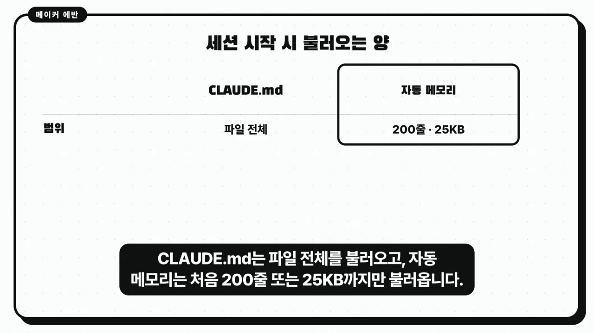
CLAUDE.md에는 상한이 없어요. 길게 쓰면 쓴 만큼 다 실려요. CLAUDE.md 200줄 영상 01:13에서 보기같은 영상은 흔한 착각 둘을 바로잡아요. @로 다른 파일을 불러오면 정리는 되지만 비용은 그대로예요. 불러온 파일도 다 같이 실리니까요. 반대로 사람만 볼 메모는 HTML(HyperText Markup Language) 주석으로 남기면 돼요. 주석은 컨텍스트에 넣기 전에 지워져서 토큰을 쓰지 않아요. 대화가 길어져 요약(컴팩션)될 때도 차이가 있어요. 루트 CLAUDE.md는 디스크에서 다시 읽어 넣어 주지만, 대화로만 말한 지시는 요약 중에 사라질 수 있어요. 계속 지켜야 하는 건 파일에 적어요.
한 단어 답에 5만 토큰
263배 실험은 이걸 숫자로 재요. "한 단어로 답해: 하늘 색?"을 평소대로 보내니 답은 '파랑' 한 단어인데 보낸 토큰은 53,043개였어요. 도구를 끄고, 설정 파일을 읽지 않게 막고, 시스템 프롬프트를 한 줄로 바꿔 보내니 574토큰이었어요. 약 70분의 1이에요. 발표자의 CLAUDE.md 하나만 약 2만 1천 토큰이었어요.
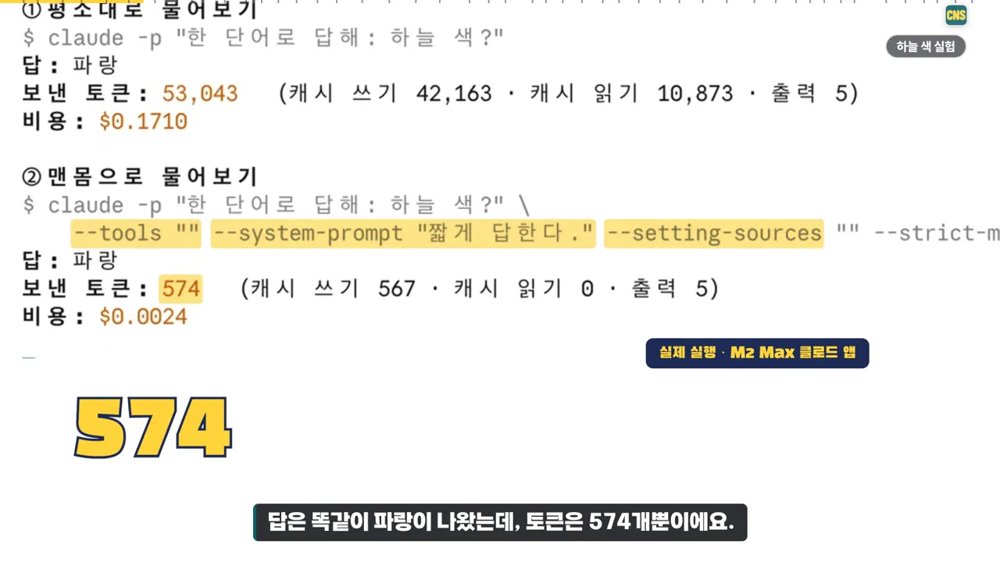
Kyle 강의는 남의 저장소에서 같은 문제를 찾아요. Apache Airflow의 AGENTS.md는 537줄, 약 8,600토큰이었어요. 발표자는 컨텍스트 창이 100만 토큰이어도 10만~20만 토큰쯤부터 결과가 눈에 띄게 나빠진다고 봐요. 10만 토큰을 기준으로 잡으면 이 파일 하나가 거의 10%를 차지해요.
캐시가 있어도 공짜는 아니에요
매번 똑같이 반복되는 앞부분은 프롬프트 캐싱으로 싸져요. 공식 플러그인 4개 영상은 캐시가 먹으면 그 부분을 10분의 1 값으로 깎아 준다고 설명해요. 263배 실험은 캐시 읽기 단가를 입력의 20분의 1로 잡았어요. 그런데 캐시는 앞부분이 글자 하나까지 같을 때만 읽기로 처리돼요. 앞쪽이 조금만 달라지면 그 뒤는 전부 새로 쓰고, 처음 캐시에 쓸 때는 입력값의 두 배를 내요.
공식 문서 7가지는 캐시에 수명이 있다는 걸 짚어요. Claude Code는 구독이면 약 1시간, API(Application Programming Interface) 키로 쓰면 5분이에요. 메시지를 보낼 때마다 이 시간이 다시 채워져서, 계속 일하는 동안은 싸게 유지돼요. 한참 자리를 비웠다 돌아오면 첫 메시지에서 전체를 제값으로 다시 읽어요. 캐시는 모델마다 따로라서, 대화 도중에 모델을 바꿔도 처음부터 다시 읽어요. 그래서 모델은 세션을 시작할 때 /model로 정해 두고, 오래 쉬었다 왔는데 이전 내용이 필요 없다면 새 대화를 여는 게 더 싸요.
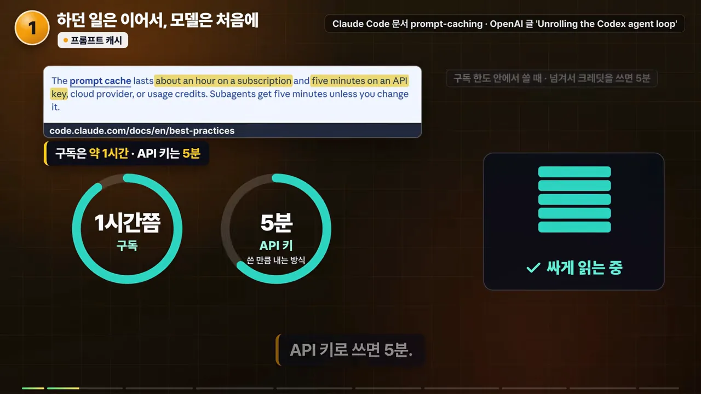
모델·노력 치트시트는 모델을 바꾸면 잃는 게 하나 더 있다고 해요. Claude는 답하기 전에 스스로 메모(사고 블록)를 쓰는데, 작은 모델은 큰 모델의 메모를 읽지 못해요. Fable이 어려운 생각을 해 둔 뒤 같은 대화에서 Opus로 내리면, Opus는 그 생각 없이 일해요. 그래서 모델을 올리든 내리든 지금 대화에서 핸드오프 프롬프트(할 일, 한 일, 다음 할 일)를 먼저 받고, 그걸 새 대화에 붙여 새 모델로 시작해요. 아래 그림은 캐시 쪽 비용이에요. 처음부터 다시 읽으면 1달러, 캐시로 읽으면 0.10달러인데, 메시지 40개짜리 대화에서 모델을 바꾸면 3.40달러가 들어요.

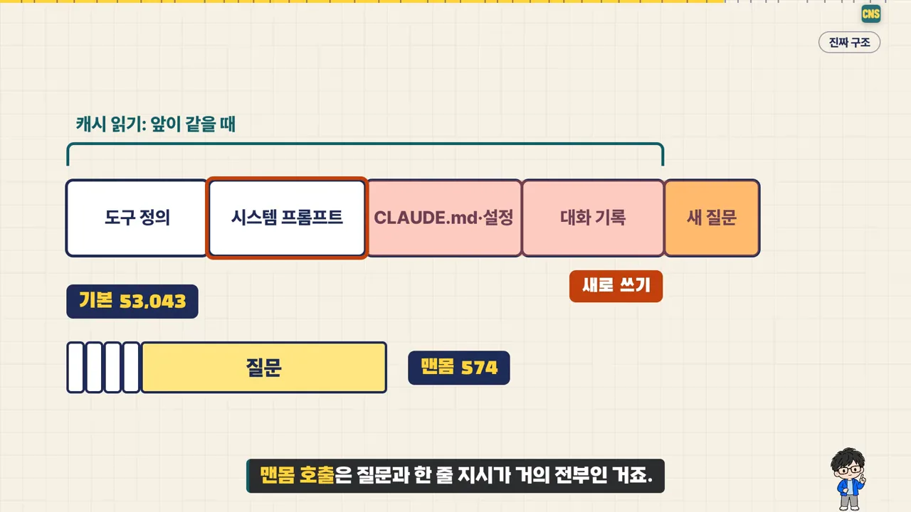
CLAUDE.md는 대화 기록보다 앞에 있어서, 여기를 고치면 그 뒤가 다 새로 쓰여요. 263배 실험 09:39에서 보기기본 호출은 이 띠가 5만 토큰이 넘고, 맨몸 호출은 질문과 한 줄 지시가 거의 전부예요. 싼 걸 수천 번 읽으면 결국 큰 덩어리가 돼요. 세 영상이 각자 자기 기록을 열어 봤는데 숫자가 거의 같아요.
- 263배 실험: 일주일 대화 103개, 호출 7,923번에서 토큰의 98.7%가 캐시 읽기였어요. 비용으로는 캐시 읽기가 61.7%, 캐시 쓰기 약 27%, 출력 약 11%였어요.
- 왕초보 가이드: Claude Code 기록 438개에서 클로드가 읽은 것의 97%가 이미 읽은 걸 다시 읽은 것이었어요. 대화가 길수록 매번 처음부터 다시 읽기 때문이에요.
- 공식 플러그인 4개: session-report의 데모 리포트에서 총 1.01B 토큰 중 96.9%가 캐시 읽기였어요.
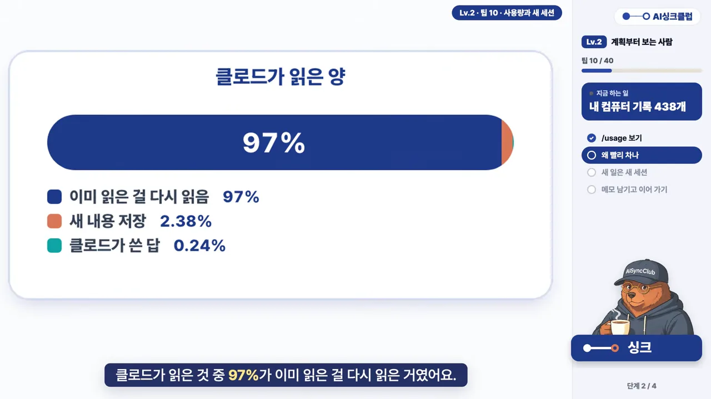
대화 하나에 일 하나
공식 문서 7가지에 따르면 두 회사 문서도 같은 말을 해요. 한 대화에서 로그인 버그를 고치고 결제 화면을 만들고 문서까지 썼다면, 네 번째 일을 하는 동안에도 앞의 세 가지를 계속 다시 읽어요. Anthropic은 관계없는 일로 넘어갈 땐 대화를 비우라고 하고(/clear), OpenAI는 프로젝트 전체를 대화 하나로 끌고 가는 걸 흔한 실수로 꼽아요. 반대로 같은 문제를 증상, 가설, 확인, 수정 순으로 계속 다루는 중이라면 그 대화에 머물러요. 판단해 온 과정이 남아 있으니까요. 다만 두 번 고쳐 줬는데도 계속 틀리면, 세 번째로 고치기보다 대화를 비우고 요청을 다시 쓰는 게 빨라요.
토큰 정리법도 같은 쪽이에요. "안녕" 한마디에도 AI는 그 창의 앞선 대화를 전부 다시 읽어요. 그래서 수다 떨듯 하나씩 던지지 말고 목표, 지킬 것, 순서를 한 번에 정리해 넘기라고 해요. 예약 오류를 고치던 창에서 관리자 화면 디자인까지 시작하면 맥락이 섞이니, 같은 프로젝트 폴더에서 새 창을 열어 일을 나눠요. 폴더의 지침 파일은 새 창에도 그대로 이어져요.
맥락을 이어 가야 하는데 대화가 너무 길어졌다면 인수인계를 해요. 발표자는 AI에게 현재 목표, 작업 브랜치와 변경 파일, 확정한 결정, 실패한 시도와 이유, 테스트 결과, 남은 문제, 다음 행동을 정리하게 하고, 확인한 사실과 추측을 나눠 달라고 해요. 그 인수인계서를 새 창에 붙여 넣으면 새 창이 먼저 읽고 이어 가요.
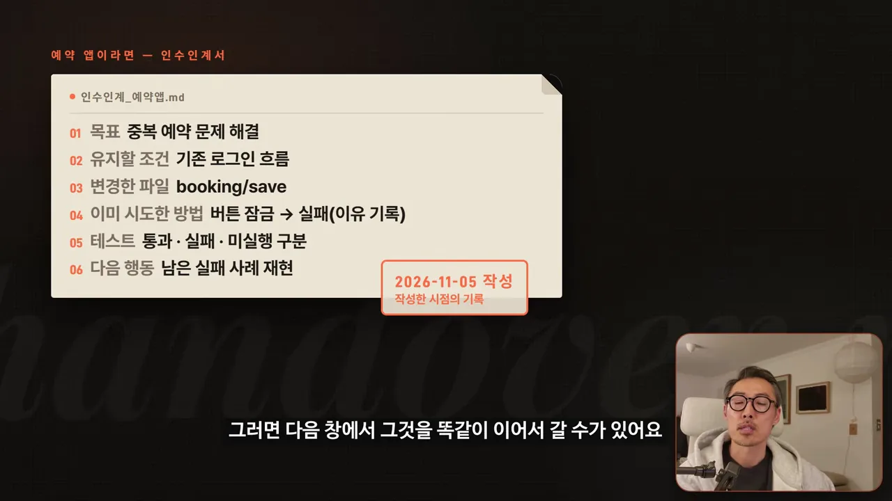
CLAUDE.md는 어떻게 불어나나요
263배 실험의 CLAUDE.md는 지적받을 때마다 한 줄씩 적어 온 파일이었어요. 10월 21일 6,136바이트에서 닷새 만에 43,373바이트, 일곱 배가 됐어요. 이 크기면 일주일 7,900번 호출마다 2만 토큰씩 다시 실려요.
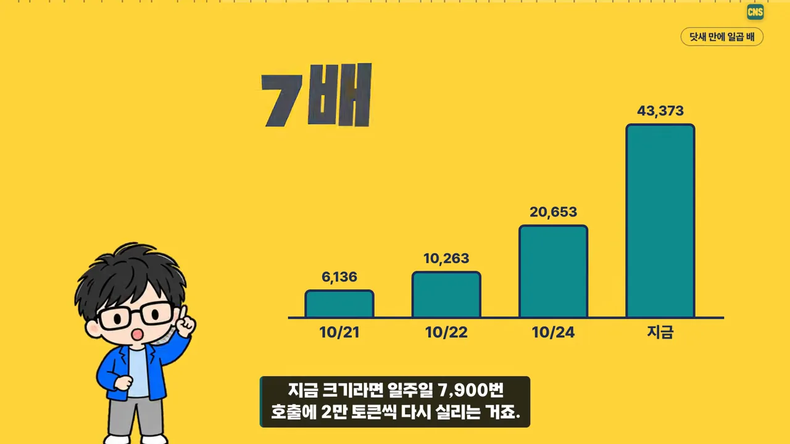
짐을 줄이는 것과 왕복을 줄이는 것
그렇다고 CLAUDE.md만 줄이면 끝나는 건 아니에요. 263배 실험은 유튜브 제목 후보 10개를 뽑는 같은 일을 일곱 방식으로 세 판씩 돌렸어요. 일곱 방식 모두 검사를 30개 중 30개 통과했어요.
| 방식 | 세 판 평균 | 기준 대비 |
|---|---|---|
| 통째로 맡기기 (Opus 에이전트) | $1.0071 | 100% |
+ CLAUDE.md 다이어트 | $0.9316 | 92.5% |
| 판정만 코드로 | $0.8192 | 81.3% |
| + 일꾼 도구만 끔 | $0.7161 | 71.1% |
| 일꾼 맨몸 (Opus) | $0.0740 | 7.4% |
| 일꾼 맨몸 (Sonnet) | $0.0397 | 1/25 |
| 일꾼 맨몸 (Haiku) | $0.0038 | 1/263 |
CLAUDE.md의 '배운 것' 목록을 lessons.md로 빼서 필요할 때만 읽게 했더니 10%도 안 줄었어요. 턴 수가 11~13번으로 늘어 아낀 걸 도로 썼거든요. 발표자는 비용을 한 번에 싣는 양 × 다시 싣는 횟수 × 모델 단가로 정리해요. 통째로 맡기는 한 짐 무게보다 몇 번 오가느냐가 비용을 정하고, 크게 줄인 건 횟수와 단가를 함께 깎은 방식이었어요(8절). 그래도 턴마다 1만 수천 토큰을 덜 싣는 건 이득이라 정리할 가치는 있다고 해요.
왕복을 줄이는 쪽은 Claude Code에도 실험 기능으로 들어왔어요(Code Mode 해설, Code Mode 속도 비교, Code Mode 켜고 끄기). 2026년 11월 12일에 나온 2.1.323 버전부터예요. 지금은 Claude가 도구 하나를 부르고, 결과를 읽고, 다음 할 일을 정해요. 도구를 부를 때마다 모델이 다시 생각하고, 검색 결과가 수백 줄이면 필요한 몇 줄 말고도 전부 컨텍스트에 들어와요. Code Mode에서는 Claude가 도구를 엮는 JavaScript를 한 번에 짜요. 이 코드가 여러 명령을 동시에 돌리고, 앞 결과를 다음 호출에 넘기고, Claude가 읽을 부분만 골라 돌려줘요.
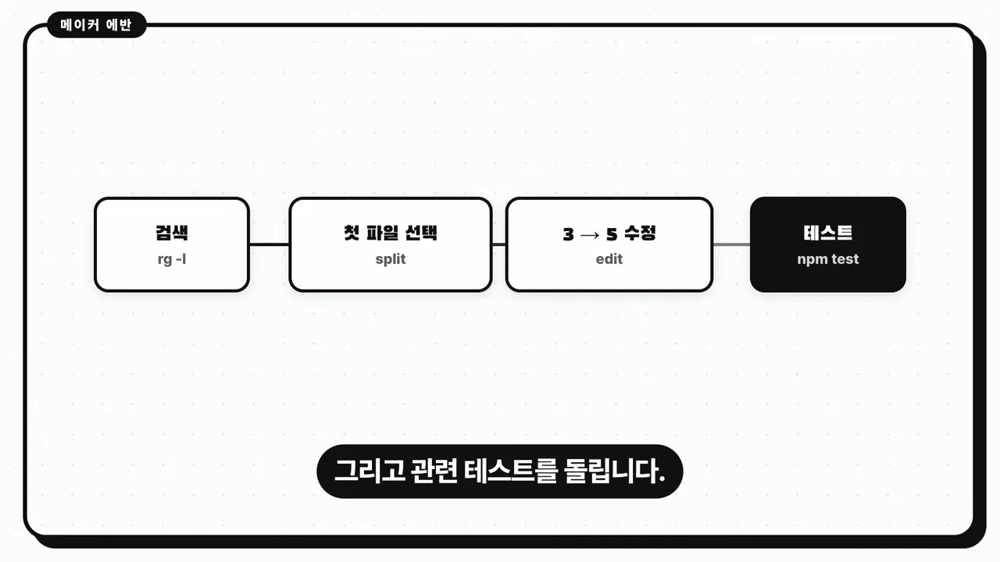
Code Mode는 이 절의 다른 짐도 덜어요. 요청마다 실리는 도구 설명서예요. 도구를 코드로 부르게 되면서 설명서가 짧아져요. Code Mode 속도 비교가 옮긴 한 개발자의 /context에서는 도구 설명(System tools)이 24,600토큰에서 11,100토큰으로 절반 넘게 줄었어요. 생각의 출발점은 MCP(Model Context Protocol)였어요(Code Mode 켜고 끄기). Cloudflare가 2025년 9월에 처음 이 이름을 썼는데, 자기 서비스의 API 2,500개 넘는 걸 MCP 도구로 하나씩 넘기면 도구 설명만 117만 토큰이었어요. 도구를 search와 execute 둘로 줄이고 코드로 필요한 API만 부르게 하자 약 1,000토큰이 됐어요.
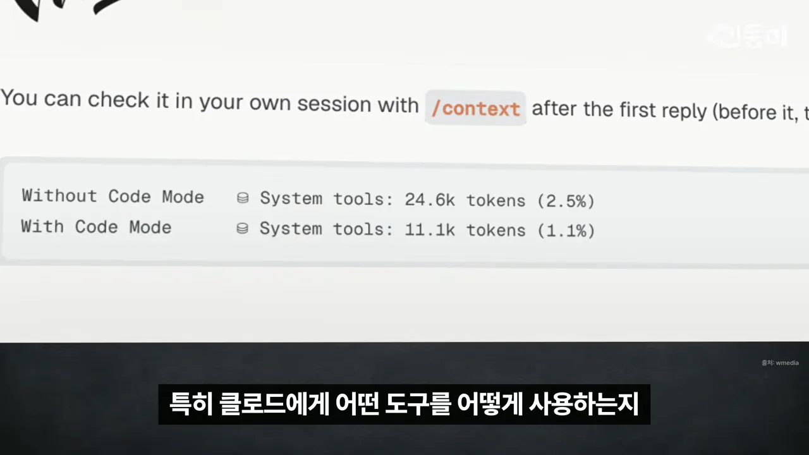
/context로 내 세션에서도 볼 수 있어요. Code Mode 속도 비교 00:10에서 보기잘 맞는 일은 같은 수정이 여러 파일에 반복되는 일, 검색 결과를 걸러야 하는 일, 린트·타입 검사·테스트처럼 서로 상관없는 명령을 동시에 돌리는 일이에요. 세 영상이 모두 공식 문서의 이 세 가지를 들어요. 파일 하나를 고치는 짧은 일이면 차이가 크지 않아요.
Code Mode는 끄고 켜서 재 봐요
Code Mode 해설 때는 얼마나 줄어드는지 공식 숫자가 없었어요. 뒤의 두 영상이 같은 일을 끄고 켜서 잰 숫자를 보태요. 토큰은 늘 줄었는데, 시간은 일마다 달랐어요.
| 일 | 토큰·비용 | 시간(끔 → 켬) | 영상 |
|---|---|---|---|
| 주문 파일 40개에서 결제 금액 상위 고객 3명 찾기 | 입력 토큰 37% 감소 | 15초 → 37초 | Code Mode 속도 비교 |
| 문서 파일 432개에서 잘못된 링크 찾기 | — | 40초(명령 3번) → 1분 36초(파일 읽기 742번) | Code Mode 속도 비교 |
| 웹 앱 문서 링크 점검(Flavio Copes) | — | 35초 → 15초 | Code Mode 속도 비교 |
| 빌드와 타입 검사 | — | 17초 → 14초 | Code Mode 속도 비교 |
| MCP 검색 도구로 20번 넘게 찾고 출처 12개로 정리 | 토큰 63% 감소 | 29% 빨라짐 | Code Mode 속도 비교 |
| 기존 프로그램에 옵션 추가 + 테스트 작성(세 번씩) | 비용 약 23% 감소 | 평균 80초 → 60초 수준 | Code Mode 속도 비교 |
| 파일 20개에 버전 한 줄 추가 | 거의 같음 | 거의 같음 | Code Mode 속도 비교 |
| click 저장소에 심은 버그 고치기(Opus 5.5) | 토큰 29만 → 13만 3천(54% 감소) · 비용 $0.24 → $0.15(37% 감소) | 27초 → 26초 | Code Mode 켜고 끄기 |
432개 파일 사례는 기존 방식이 스크립트 하나로 끝낸 일을 Code Mode가 파일 읽기 742번으로 잘게 나눠서 오래 걸렸어요. Code Mode 속도 비교는 대부분 한두 번 잰 결과라 어느 쪽이 빠르다고 단정할 수 없고, 속도는 Claude가 일을 어떻게 나눠 처리하느냐에 달렸다고 봐요. 정리하면 MCP로 외부 자료를 많이 가져오거나 여러 파일에서 필요한 것만 추리는 일에 유리하고, 간단한 수정이나 빠른 처리가 중요한 일은 기존 방식이 나을 수 있어요.

click 저장소 실험에서는 두 번 다 같은 한 줄을 고쳤고 전체 테스트 2,627개가 통과했어요. 끈 쪽은 도구를 7번 따로 불렀고, 켠 쪽은 REPL(Read-Eval-Print Loop)을 5번 부르며 명령 5번·읽기 1번·고치기 1번을 코드 안에서 묶었어요. /context에서 다시 읽는 도구 설명은 2.4만에서 8.6천으로, 대화 메시지는 1.7만에서 1.04만으로 줄었어요. 일주일 뒤 2.1.328(2026년 11월 19일)에서는 도구 설명을 더 짧게 줄여 토큰을 더 아꼈어요.

/cost 화면과 /context 두 개를 봐요. Code Mode 켜고 끄기 07:01에서 보기그래서 세 영상의 권고가 같아요. 평소 자주 시키는 일을 끈 세션과 켠 세션에서 한 번씩 돌리고, /cost와 /context로 토큰과 시간을 비교하고, 결과가 같은지도 확인해요. Code Mode 켜고 끄기는 Claude가 도구를 여러 번 부르는 일부터 켜 보라고 해요.
- 버전을 확인해요 —
claude update로 2.1.323 이상인지 봐요. 터미널에서 쓰는 Claude Code만 되고, VS Code 패널과 데스크톱 앱은 안 돼요. - 환경 변수를 넣어요 —
CLAUDE_CODE_EXPERIMENTAL_CODE_MODE=1 claude로 실행하거나, 늘 켜려면~/.claude/settings.json의env에 같은 값을 넣어요. 프로젝트 설정 파일(.claude/settings.json)에 넣은 값은 남이 몰래 켜지 못하게 무시돼요. 첫 실행에 확인 창이 뜨고, Yes, turn on Code Mode를 고르면 세션 위에 'Code Mode (experimental) is on' 줄이 떠요 - Claude가 짠 코드를 봐요 — 대화 화면엔 코드 대신 도구 호출과 결과만 보여요.
Ctrl+O로 기록 보기를 열고 접힌 Code 줄을Ctrl+E로 펼쳐요. - 이어 갈 때와 끌 때 — Code Mode로 시작한 대화는 Code Mode를 켠 채로만 이어 갈 수 있어요. 끄려면 값을 지우거나
0으로 바꿔요.
권한 검사가 어떻게 달라지는지는 7절에서 봐요.
규칙은 어디에 둘까요
규칙 하나를 적을 자리는 여러 곳이에요. CLAUDE.md, 거기서 링크한 문서, 스킬, 훅, 서브에이전트예요. 홀먼 영상은 이 자리들을 컨텍스트 윈도우를 언제, 얼마나 차지하느냐로 갈라요. 홀먼이 플러그인과 에이전트 팀을 설계하며 쓴 기준이에요.
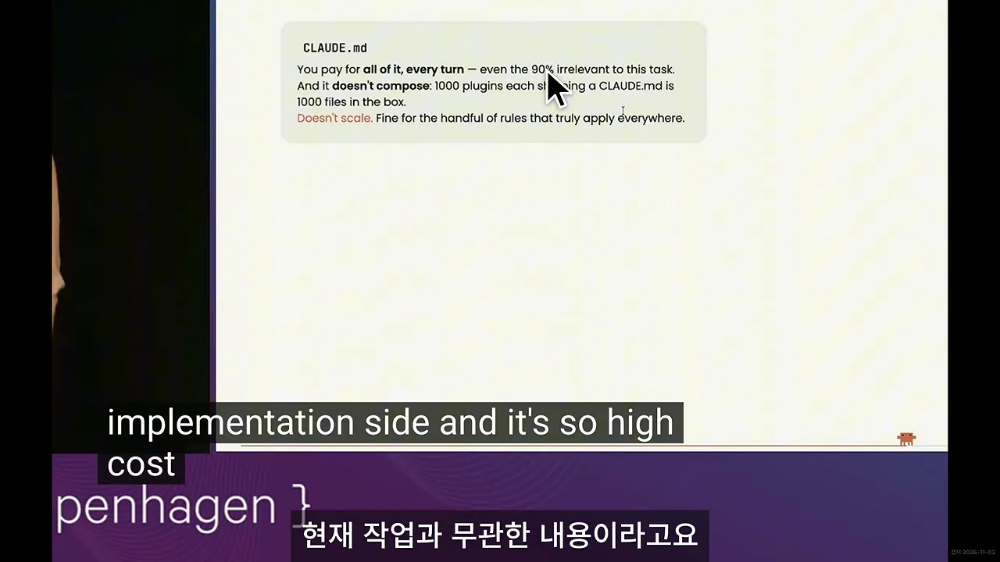
CLAUDE.md를 평가한 슬라이드예요. 플러그인 1,000개가 각자 CLAUDE.md를 들고 오면 버틸 수 없다는 게 'Doesn't scale'의 뜻이에요. 홀먼 영상 00:56에서 보기아래 그림은 다섯 자리가 컨텍스트를 차지하는 모양을 나란히 놓은 거예요. 막대가 길수록 매 요청에 많이 실려요.
CLAUDE.md만 늘 통째로 실려요. 나머지 넷은 필요할 때만 자리를 차지해요. 그래서 홀먼은 CLAUDE.md에 모든 작업에 통하는 몇 줄만 남기라고 해요.어떤 규칙을 어디에 둘까요
여러 영상이 같은 방향으로 나눠요. 홀먼 영상의 정리를 뼈대로 다른 영상의 기준을 붙이면 이래요.
| 이런 규칙이면 | 자리 | 왜 거기인가요 | 말한 영상 |
|---|---|---|---|
| 정말 모든 작업에 통하는 몇 줄 | CLAUDE.md | 매 요청에 실리니 늘 필요한 것만 둬요 | 홀먼 영상, Kyle 강의 |
| 거의 모든 작업에 쓰이지만 길고 영역별인 규칙(CSS(Cascading Style Sheets), API, 테스트 규칙) | CLAUDE.md에서 링크한 docs/ 문서 | 그 영역 일을 할 때만 열려요 | Kyle 강의 |
| 특정 시점에 쓰는 절차, 가끔 하는 작업(인증, PR(Pull Request) 내기) | 스킬 | 짧은 설명만 늘 있고 본문은 쓸 때 불러와요 | 홀먼 영상, Kyle 강의, Ivanna 인터뷰, CLAUDE.md 200줄 영상, Harness² 해설 |
코드 일부 경로에만 해당하는 규칙(src/api 아래 .ts 파일의 API 규칙) | .claude/rules/에 paths를 지정한 파일 | 그 경로의 파일을 만질 때만 들어가요 | CLAUDE.md 200줄 영상 |
| 코드로 막을 수 있는 실수(쓰기 까다로운 API, 섞이면 안 되는 import, 땜질 패턴) | 린트 규칙, 타입, API 설계 | 글은 부탁이지만 코드는 매번 똑같이 강제돼요. 에이전트가 가장 많이 읽는 입력이 코드베이스이기도 해요(7절) | Lauren Tan 발표, 슬롭 발표 해설 |
| 엄밀하게 지켜져야 하는 규칙(비밀 키 노출, 되돌릴 수 없는 삭제, 밖으로 보내기) | 훅, 권한의 거부 규칙 | 적어 둔 부탁이 아니라 그 순간 저절로 돌아요. 거부 규칙에 걸린 호출은 오토 모드 분류기가 보지도 않아요(7절) | 홀먼 영상, 왕초보 가이드, 공식 문서 7가지, Lydia 발표, CLAUDE.md 200줄 영상, Harness² 해설 |
| 과정보다 결과만 필요한 일(검색, 로그 훑기) | 서브에이전트 | 별도 창에서 일하고 요약만 돌려줘요. 메인 대화의 맥락을 알아야 하는 일이면 스킬이 맞아요(8절) | 홀먼 영상, 단일 루프 해설 |
| 어디에도 둘 필요가 없거나 한 달 동안 필요 없었던 규칙 | 삭제 | 남겨 두면 비용만 들어요 | 홀먼 영상 |
Lauren Tan 발표는 이 표를 신뢰의 순서로 다시 세워요. '포테토 피라미드'는 거꾸로 선 삼각형이에요. 위에서부터 코드베이스(API 설계, 아키텍처), 정적 분석(린트, 타입, 테스트, CI(Continuous Integration)), 검증(런타임·형식 검증), 글(규칙, 스킬, AGENTS.md), 사람 리뷰 순이고, 위쪽일수록 넓게 투자해요. 위 두 층은 결정론적이라 에이전트가 기본으로 옳은 일을 하게 강제해요. 글은 판단이 필요한 것만 마지막에 조금 얹어요(슬롭 발표 해설도 같은 순서로 풀어요).

CLAUDE.md와 스킬은 넷째 칸 'prose'예요. 그 위 세 칸에서 먼저 막을 수 있는지 보라는 그림이에요. 슬롭 발표 해설 03:08에서 보기자리마다 놓을 폴더도 정해져 있어요. 공식 문서 7가지가 정리한 Claude Code의 구조는 프로젝트 맨 위의 CLAUDE.md, 그 옆 .claude/ 폴더 안의 settings.json(권한과 훅), rules/(주제별 규칙), skills/, agents/(서브에이전트)예요. 홈 폴더의 ~/.claude/에 둔 건 모든 프로젝트에 적용돼요. 다 채울 필요는 없고, 대부분은 CLAUDE.md와 settings.json 두 개만 만진다고 문서에 적혀 있대요. 다만 레포가 여러 개인 팀이라면 팀 공통 스킬과 설정은 ~/.claude/보다 '홈 레포' 하나의 .claude/에 두는 편이 낫다는 말도 있어요. 사용자 폴더는 사람마다 낡아 가기 쉽거든요(홈 레포 영상, 4절).
Lydia 발표는 settings.json에 둘 것 두 가지를 보여 줘요. 하나는 저장소의 .claude/settings.json에 커밋하는 거부 규칙이에요. 저장소와 함께 다니니 클라우드 세션에서도 같은 규칙이 걸려요(7절). 다른 하나는 오토 모드가 믿을 곳을 적는 autoMode예요. 오토 모드는 기본적으로 이 폴더와 이 저장소만 믿어서, '스테이징에 배포해 줘'라고 하면 배포 저장소 push, S3 동기화, 내부 도메인 호출이 막혀요. 그래서 믿는 저장소·버킷·도메인, 늘 허용할 일, 절대 하지 말 일을 평범한 영어 문장으로 적어요. 이 문장이 그대로 분류기에 전달돼요. Lydia 발표 해설에 따르면 직접 쓰기 귀찮을 땐 /auto-mode-setup이 프로젝트와 최근 세션을 보고 초안을 써 줘요.
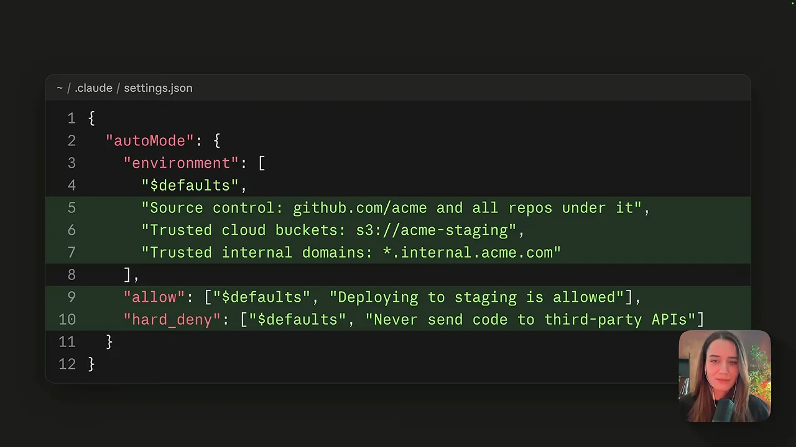
$defaults는 기본 목록을 살려 두는 자리예요. 파일 경로가 저장소가 아니라 홈 폴더라는 점도 봐 둬요. Lydia 발표 04:50에서 보기홀먼은 스킬을 '언제 읽어야 하는지 짧은 요약이 붙은 CLAUDE.md'라고 설명해요. 공식 문서도 같은 지시를 계속 붙여 넣고 있다면 스킬을 만들라고 하고, CLAUDE.md와 달리 스킬 본문은 쓸 때만 실린다고 적어 뒀어요.
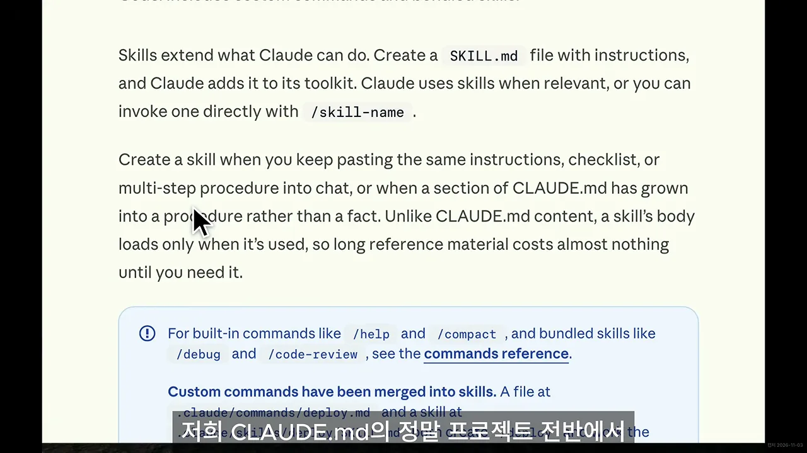
메타 Eval 세미나의 발표자는 같은 신호를 실전 규칙으로 써요. 에이전트에게 같은 말을 두 번 하고 있다면, 그건 프롬프트가 아니라 하네스로 옮길 때예요. 아래 표는 같은 문제를 대화로 고칠 때와 세팅으로 고칠 때를 맥락, 확인, 규칙 세 줄로 나눠요. 오른쪽 열이 이 합본의 자리와 그대로 겹쳐요. 맥락은 CLAUDE.md와 세컨드 브레인(4절), 확인은 정한 케이스로 채점하기(9절), 규칙은 훅과 체크(7절)예요.
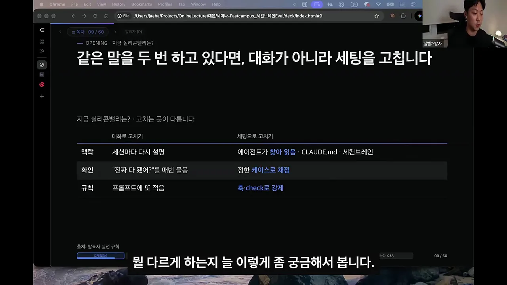
서브에이전트는 반대로 메인 창 바깥에서 돌아요. 홀먼은 '스킬은 컨텍스트 안에서, 서브에이전트는 밖에서' 돈다고 정리해요. 서브에이전트의 창에 시스템 프롬프트와 CLAUDE.md, 파일을 읽은 기록이 쌓여도 메인에는 요약만 돌아와요.
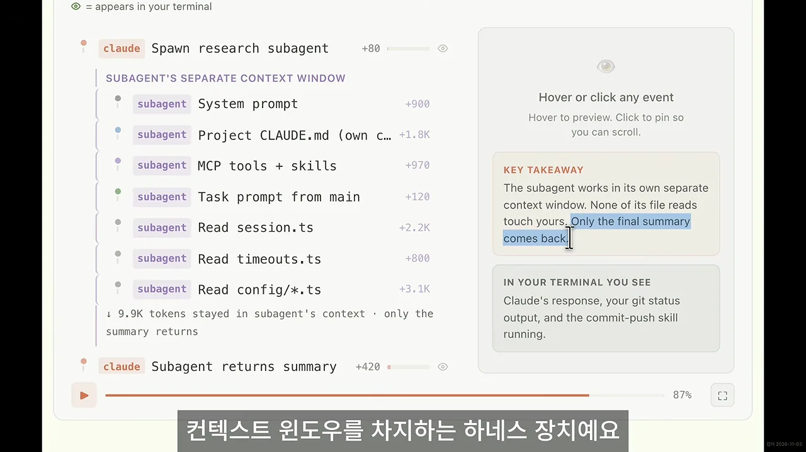
CLAUDE.md는 부탁이에요
CLAUDE.md에 적었다고 지켜지는 것도 아니에요. 홀먼 영상의 발표자도 처음엔 규칙을 잔뜩 적었지만 클로드 코드가 무시하고 코드를 썼다고 해요. 공식 문서는 CLAUDE.md가 시스템 프롬프트가 아니라 사용자 메시지로 전달되고, 엄격하게 지킨다는 보장은 없다고 적어 뒀어요. 왕초보 가이드도 CLAUDE.md는 부탁이라 가끔 빠지니, 꼭 지킬 규칙은 훅으로 만들라고 해요(7절). CLAUDE.md 200줄 영상은 같은 문서를 따라 한 줄로 정리해요. CLAUDE.md는 설정이 아니라 컨텍스트예요. 말로 부탁할 것과 시스템으로 막을 것을 나눠요.
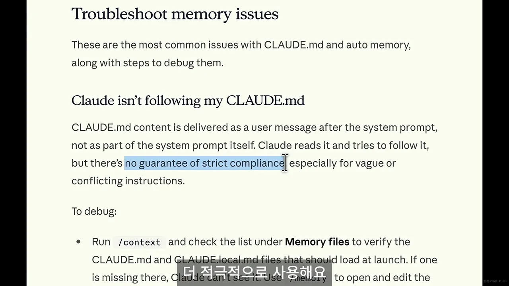
공식 문서 7가지는 이걸 Anthropic과 OpenAI의 공통 조언으로 정리해요. 규칙 파일은 참고 사항이라 에이전트가 상황을 보고 안 따를 수도 있어요. 예외 없이 지켜야 하는 규칙은 훅이나 자동 검사처럼 매번 강제로 실행되는 장치에 넣어요. 아래 그림에서 차단기는 훅·자동 검사 줄에만 있어요.
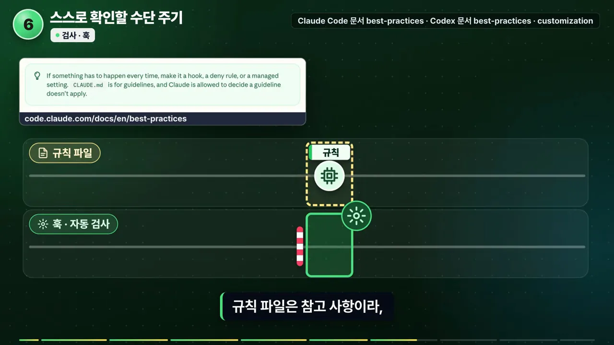
CLAUDE.md는 지침이라 클로드가 '이번엔 해당 없다'고 판단할 수 있어요. 공식 문서 7가지 06:29에서 보기Harness² 해설도 마지막에 같은 말로 정리해요. 꼭 지킬 규칙은 부탁 말고 장치로 둬요. 논문에서 그 장치는 일하는 흐름에 끼우는 플러그인이었어요(7절).
원칙도 시스템 프롬프트 대신 스킬로
pstack 해설도 같은 이유를 대요. Lauren Tan은 자기 원칙을 시스템 프롬프트에 몰아넣지 않고 스킬 여러 개로 나눠, 언제 무엇을 꺼낼지 색인만 둬요. 시스템 프롬프트는 매 메시지마다 통째로 읽히니 지금 일과 상관없는 규칙에도 토큰을 쓰게 되거든요.
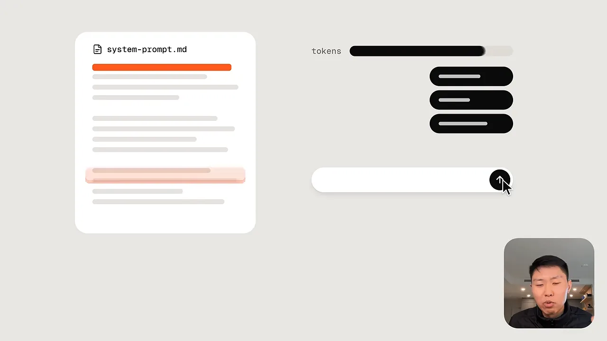
Harness² 해설은 같은 말을 실험 숫자로 보여 줘요. 구글 클라우드 AI 리서치와 노스웨스턴 대학의 Harness²는 하네스를 여덟 개 파일로 나눠요. 위 줄 네 칸은 항상 읽히고, 아래 줄 네 칸은 필요할 때만 꺼내요. 위 표의 '늘 실리는 자리'와 '쓸 때 실리는 자리'를 그대로 칸으로 만든 셈이에요.
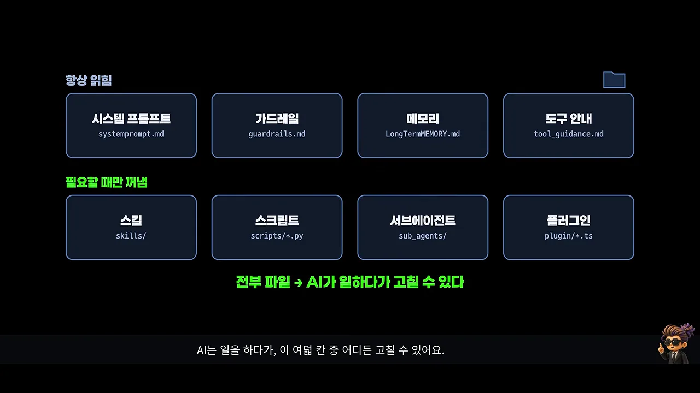
잘 고친 하네스에서 부품을 하나씩 빼 보니 스킬을 뺄 때 5.3점, 스크립트를 뺄 때 3.7점, 지시문 묶음을 뺄 때 1.5점이 떨어졌어요. 점수를 끌어올린 건 필요할 때만 꺼내는 쪽이었어요. 그래도 항상 읽히는 칸이 쓸모없다는 뜻은 아니에요. 짧게 두되 꼭 필요한 한 줄은 효과가 커요. 도구를 부르는 척 글로만 적던 AI에게 '그러지 말 것' 한 줄을 넣자 그 과제가 만점이 됐어요. AI가 틀릴 때마다 지시문에 한 줄씩 더하는 습관을 경계하는 이유도 같아요. 지시문은 늘 켜져 있어서, 이번 일과 상관없는 규칙까지 모든 단계에서 다시 읽혀요.
지울 규칙은 /doctor에게 먼저 물어요
홀먼 영상은 정리를 이렇게 끝내요. CLAUDE.md가 200줄을 넘으면 늘 필요한 규칙 말고는 전부 스킬로 빼 달라고 하고, 지울 규칙은 /doctor로 후보부터 받아요. 화면 예시에서는 프로젝트 CLAUDE.md의 '답변은 한국어로 한다'가 전역 CLAUDE.md와 겹쳐서 삭제 후보로, '파일 작업은 이 폴더 안에서만 한다'는 유지 권장으로 나왔어요.
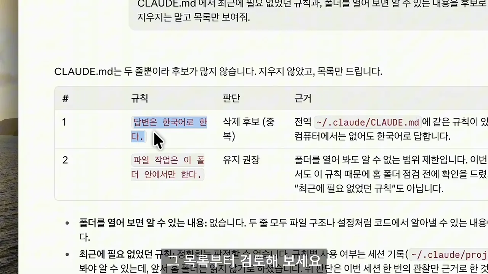
Lydia 발표는 한 단계 더 나간 명령을 소개해요. /doctor prompt-audit를 돌리면 새 모델에게 더 이상 필요 없는 CLAUDE.md와 스킬 내용을 찾아 줘요. 남길 기준도 홀먼 영상의 '폴더를 열어 봐도 알 수 없는 것'과 같아요. 발표 화면에서 무엇이 살아남는지는 4절에서 봐요.
CLAUDE.md 200줄 영상은 이 명령이 찾는 걸 셋으로 정리해요. 예전 모델 때문에 넣은 지시, 없는 파일이나 명령을 가리키는 줄, 서로 모순되는 파일이에요. 결과는 수정 제안으로만 나오고, 적용하라고 하기 전엔 아무것도 바뀌지 않아요. 자동 메모리는 /memory로 폴더를 열어 틀린 메모를 직접 지워요(4절).
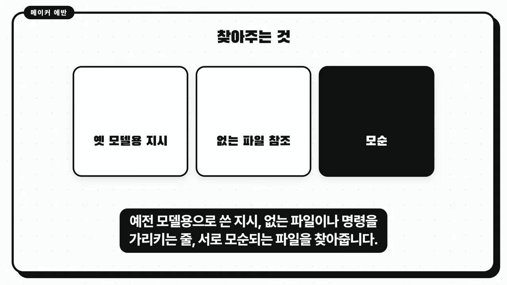
스킬 그만 쇼츠는 같은 점검을 CLAUDE.md 밖으로 넓혀요. 새 스킬을 또 깔기 전에 CLAUDE.md, 설치된 스킬, 플러그인, MCP 목록을 전부 읽혀서 세 가지를 표로 뽑게 해요. 최근 한 달 동안 한 번도 안 쓴 것, 모델이 이미 혼자 잘하는 일을 시키는 규칙, 서로 겹치거나 부딪히는 지시예요. 지울 것과 남길 것을 이유와 함께 제안받고, 내가 승인하면 지워요. 영상이 보여 준 Claude Code 문서의 경고도 같은 쪽이에요. 비대한 CLAUDE.md는 정작 중요한 지시를 무시하게 만들어요. 화면 속 파일은 334줄에서 420줄로 불어나고, '결론부터 말하기' 같은 줄이 그 사이에 묻혀요.
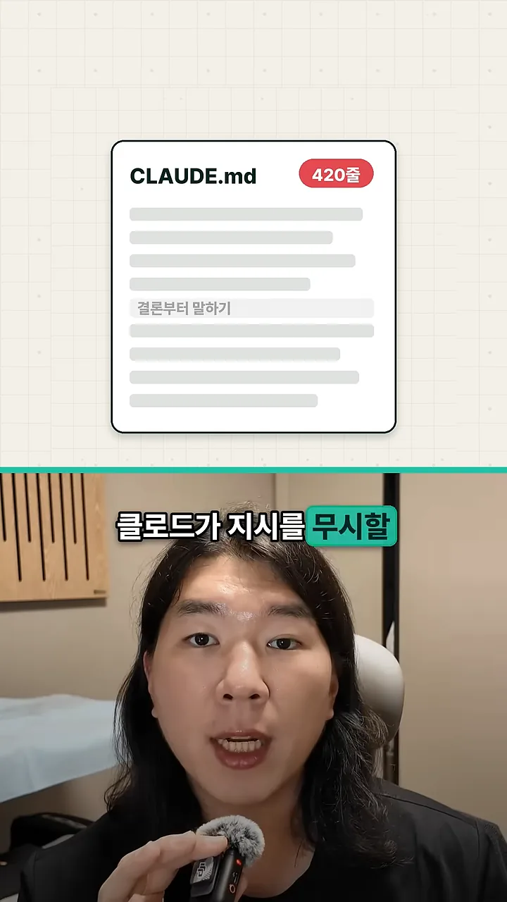
플러그인 대결 실험은 같은 점검을 석 달 기준으로 시켜요. 안 쓴 건 바로 지우고, 쓰던 건 하나씩 아직 말이 되는지 따져요.
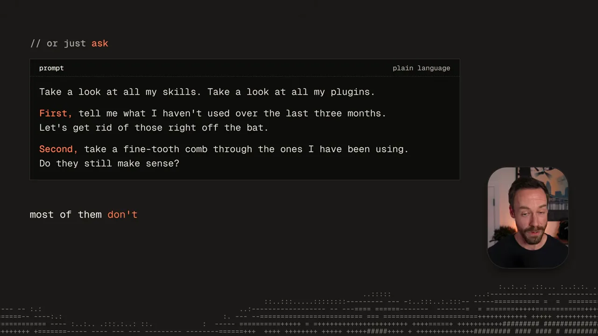
CLAUDE.md는 설명서가 아니라 지도
세컨드 브레인 18팁은 CLAUDE.md(AGENTS.md)를 한 문장으로 정리해요. 설명서가 아니라 지도예요. 회사 정보나 규칙 본문을 다 넣는 대신, 어디에 무엇이 있고 언제 무엇을 열지를 적어요. Kyle 강의, 게임 팀 세팅, 9 Skills도 같은 쪽으로 가요.
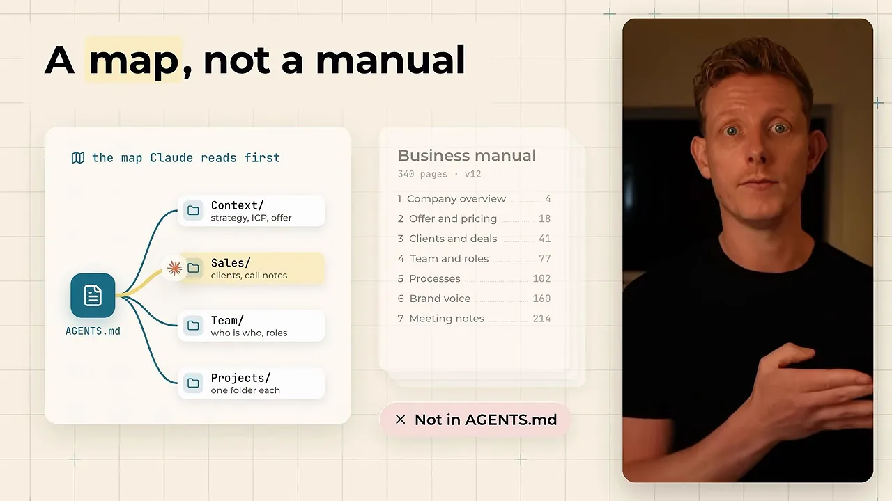
AGENTS.md에 들어갈 건 왼쪽이에요. 세컨드 브레인 18팁 07:34에서 보기만든 회사들도 같은 말을 해요(공식 문서 7가지). Anthropic은 CLAUDE.md를 200줄 아래로 두라고 해요. 길수록 대화마다 자리를 차지하고 지시는 덜 지켜지거든요. OpenAI는 자기 프로젝트에서 AGENTS.md를 백과사전이 아니라 목차로 쓰고, 자세한 내용은 docs/ 아래 폴더에 둔다고 밝혔어요. CLAUDE.md 200줄 영상도 공식 문서가 가장 강조하는 게 길이라고 짚어요. 목표는 파일 하나당 200줄 아래예요.
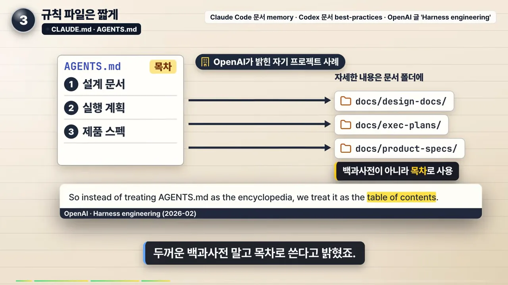
왜 200줄인지는 아래 막대 두 개가 보여 줘요. 짧은 파일은 지시를 따르는 비율이 유지되고, 긴 파일은 컨텍스트를 많이 쓰면서 따르는 비율도 떨어져요. 드리밍 해설의 포켓몬 실험처럼 많이 적는다고 똑똑해지지 않는다는 얘기예요(아래 '지도에는 라우팅 표와 인덱스를').
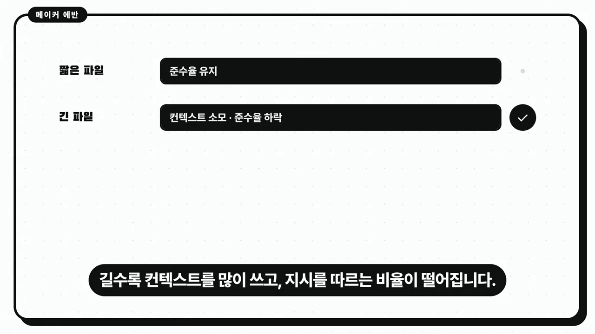
무엇을 남기고 무엇을 뺄까요
Kyle 강의는 데모 프로젝트의 AGENTS.md를 직접 줄여 보여 줘요. 남긴 건 네 가지예요.
- 프로젝트 소개 한두 문장
pnpm처럼 표준이 아닌 도구, 모든 작업에 쓰이는 특이한 스크립트- 큰 틀의 폴더 구조. 파일 단위로 적으면 이름과 위치가 금방 바뀌어 낡은 정보가 AI를 헷갈리게 해요
docs/안의 세부 규칙 문서로 가는 링크 한 줄씩
뺀 것도 분명해요. '시작하기' 절은 지워요. 에이전트는 이미 세팅된 프로젝트에서 코드를 쓰는 사람과 같아서 설치 안내가 필요 없어요. CSS, API, 테스트 규칙은 docs/ 문서로 옮기고, PR 제출이나 배포 절차도 문서로 빼서 그 일을 할 때만 읽히게 해요.
다른 영상의 목록도 비슷해요. 공식 문서 7가지는 테스트 실행 명령(npm test), 코드만 봐서는 오해하기 쉬운 부분(금액은 원 단위 정수), 두 번 고쳐 준 실수(날짜는 UTC(Coordinated Universal Time)로 저장)를 꼽아요. 토큰 정리법은 새로 합류한 개발자에게 처음 알려 줄 내용으로 봐요. 무엇을 만드는지, 어떻게 실행하고 테스트하는지, 조심해서 다룰 코드, 꼭 지킬 디자인과 스타일이에요. 다만 지침 파일도 매번 읽혀 토큰을 먹으니, 자주 필요한 기준만 짧게 두고 자세한 기록은 따로 둬요.
Lydia 발표는 기준을 한 줄로 좁혀요. Claude가 코드에서 볼 수 없는 것만 남겨요. 어떤 스택인지, 어디를 보라는 말은 Opus 5.5가 코드를 읽고 알아내니 필요 없어요. 남는 건 예를 들어 'src/legacy는 코드에서 직접 참조되진 않지만 아직 모바일 앱이 쓴다' 같은 사실이에요. 코드만 보면 지워도 될 것처럼 보이는 폴더라, 적어 두지 않으면 모델이 잘못 판단해요. Lydia 발표 해설은 지워진 네 줄을 그대로 읽어 줘요. Think hard and be thorough, Keep going until it's done, IMPORTANT: always use the auth helper, We're on Node 18이에요. 앞의 셋은 11절 기록표의 지울 쪽 줄이고, 넷째는 코드를 읽으면 알 수 있는 사실이에요. 진행자는 회사 일을 폴더 하나에서 돌리는데, CLAUDE.md에는 비즈니스 위키, 브랜드 자료, 재무 자료가 어디 있는지만 적어 둬요. 파일만 보고는 추측하기 어려운 정보라서요.
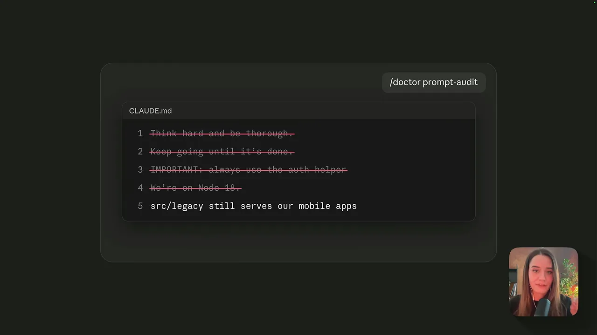
/doctor prompt-audit가 다섯 줄 중 네 줄을 지웠어요. 남은 한 줄이 코드에서는 안 보이는 사실이에요(3절). Lydia 발표 04:02에서 보기폴더 구조는 말이 갈려요. 공식 문서 7가지에 따르면 Codex 문서는 폴더 구조 설명을 넣으라고 하고, Claude Code 문서는 에이전트가 저장소를 직접 읽으니 빼도 된다고 해요. Kyle 강의는 큰 틀만 남기고 파일 단위로는 적지 않는 중간쯤이에요.
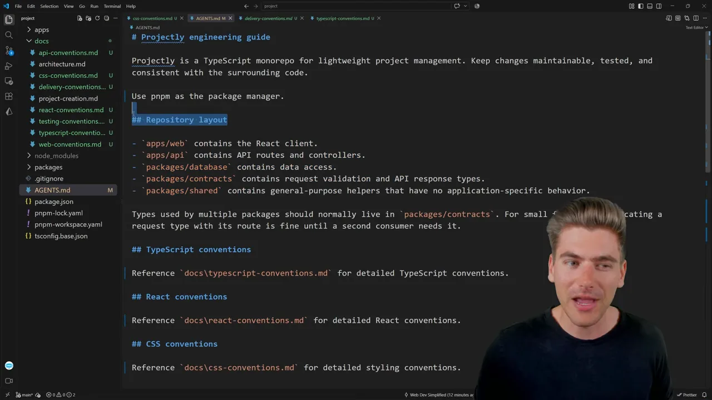
남긴 줄은 어떻게 쓸까요. CLAUDE.md 200줄 영상은 길이 다음으로 구체성을 꼽아요. 확인할 수 있는 문장이어야 지켜져요. 그리고 두 지시가 서로 부딪히면 클로드가 아무거나 하나를 고를 수 있어서, 모순도 지워요.
| 흐릿한 지시 | 구체적인 지시 |
|---|---|
| 코드를 깔끔하게 정리해라 | 들여쓰기는 2칸 |
| 변경 사항을 테스트해라 | 커밋 전에 npm test 실행 |
| 파일을 잘 정리해라 | API 핸들러는 src/api/handlers/에 |
스킬 그만 쇼츠는 더 짧게 가요. 가벼운 세팅을 다섯 줄짜리 CLAUDE.md, 템플릿 폴더, 내 일하는 방식 세 가지로 봐요. 폴더를 projects/, templates/, notes/, archive/로 다시 짜고, 어디에 무엇이 있는지를 CLAUDE.md 맨 위 다섯 줄에 적어요. 일주일에 두 번 넘게 하는 일은 templates/에 파일을 하나씩 두고 순서, 결과물 형식, 잘 된 예시 하나를 넣어요. 그리고 "그 작업을 시키면 템플릿부터 읽고 시작하라"는 한 줄을 CLAUDE.md에 더해요. 마지막으로 Claude가 나를 한 번에 질문 하나씩, 열다섯 개까지 인터뷰해서 답을 열 줄 안으로 '일하는 방식' 칸에 저장해요. 화면의 예는 '결론 먼저, 이유는 뒤에', '모르면 추측 말고 묻기', '짧게', '보고는 숫자로' 네 줄이에요.
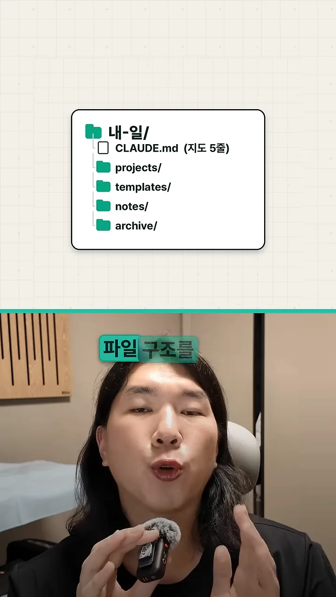
CLAUDE.md는 '지도 5줄'이에요. 반복 작업의 순서와 예시는 templates/에 있고, 지도는 그 자리만 가리켜요. 스킬 그만 쇼츠 00:45에서 보기지도에는 라우팅 표와 인덱스를
세컨드 브레인 18팁은 지도의 핵심을 라우팅 테이블로 봐요. 폴더마다 무엇이 있고, 언제 쓰고, 새 내용을 어디 저장할지를 한 줄씩 적어요. 지도가 없으면 Claude는 모든 걸 뒤져서 토큰을 낭비하고 엉뚱한 맥락을 가져와요. 지도가 있으면 영업 통화 준비를 부탁받았을 때 영업 폴더의 고객 노트와 오퍼 문서만 열어요.
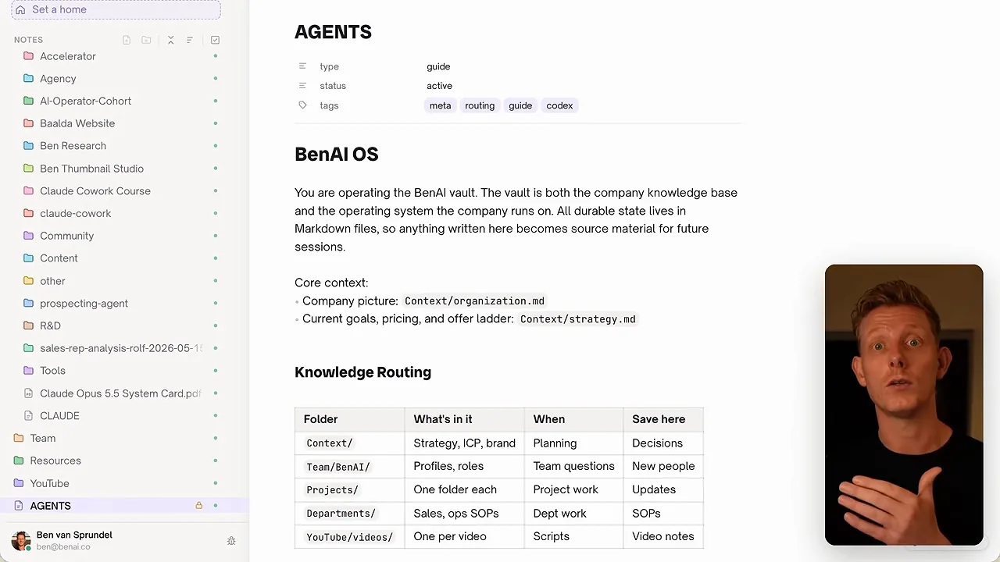
같은 영상은 지도를 지키는 팁을 두 개 더 줘요. 하나는 폴더 구조를 자주 바꾸지 않기예요. 고객 폴더를 '진행 중'과 '지난'으로 쪼개면, 지도를 고칠 때까지 Claude는 옛 위치에 계속 저장해요. 다른 하나는 하위 폴더마다 작은 인덱스 파일이에요. 파일이 수십, 수백 개 쌓이면 맨 위 지도만으로는 어느 파일을 열지 몰라서, 하위 폴더 안에 무엇이 있는지 적은 '작은 agents.md'를 둬요. 안드레이 카파시가 자기 지식 베이스에 쓰는 방식이라고 해요.
Claude Code가 스스로 쓰는 메모에도 같은 지도가 필요해요. 드리밍 해설은 Anthropic의 에이전트 메모리 연구를 층으로 정리해요. 맨 위층은 매 세션 자동으로 들어가는 자리라, Claude Code 자동 메모리는 MEMORY.md의 처음 200줄 또는 25KB까지만 불러와요(2절). 그 아래에 위키·색인, 메모 노트, 대화 기록 원본이 차례로 있어요. 맨 위층은 내용을 담는 곳이 아니라 무엇을 알고 있고 자세한 건 어느 파일에 있는지만 적는 색인이에요.
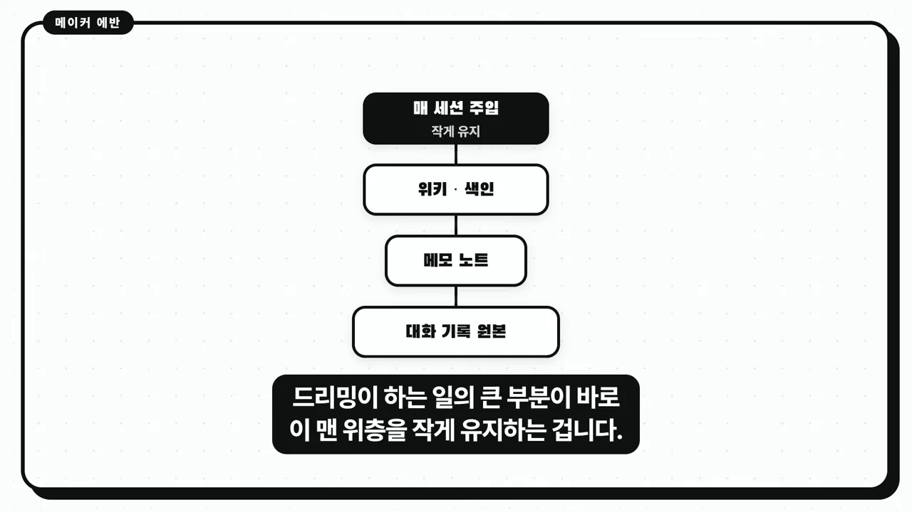
발표자의 프로젝트 MEMORY.md는 83줄이고, 한 줄이 파일 하나를 가리키는 링크예요. 발표자는 오늘 MEMORY.md를 열어 처음 200줄이 색인인지, 내용으로 꽉 차 있는지 보라고 권해요. 포켓몬 실험도 같은 쪽이에요. 모든 걸 적은 Sonnet 3.7은 파일 413개에 배지 1개였고, 화면에 나오지 않는 전략과 직접 확인한 규칙만 적은 Fable 5는 파일 9개(맨 위 global.md 하나)에 배지 4개였어요. 위의 '코드에서 볼 수 없는 것만'과 같은 기준이에요.
같은 발표자의 다음 편인 CLAUDE.md 200줄 영상은 공식 문서로 이 색인의 규칙을 짚어요. 클로드가 스스로 남기는 메모는 네 종류예요. 내 역할과 일하는 방식(user), 내가 고쳐 주거나 좋다고 확인한 방식(feedback), 진행 중인 일과 코드로는 모르는 결정(project), 이슈 트래커처럼 밖에 있는 정보의 위치(reference)예요. 코드에서 알아낼 수 있는 것과 CLAUDE.md에 이미 있는 건 적지 않아요. 저장 위치는 ~/.claude/projects/<project>/memory/이고, 그 안에 색인 MEMORY.md 하나와 메모 하나당 파일 하나가 있어요.

색인이 커지지 않게 막는 장치도 있어요. 클로드가 MEMORY.md를 쓰면 Claude Code가 길이를 재고, 한도에 가까우면 한 줄에 하나씩 쓰고 자세한 건 파일로 내리고 낡은 건 합치라고 알려 줘요. 한도를 넘으면 색인을 다시 쓰라는 에러를 돌려줘요. 발표자의 저장소에는 메모 파일이 84개 있고, 'TTS 고칠 때도 통짜 1번'처럼 한 번 당하고 나서야 생긴 메모마다 왜(Why)와 다음엔 어떻게 할지(How to apply)가 붙어 있어요.
조심할 것도 셋이에요. 자동 메모리는 이 컴퓨터에만 있어서 다른 컴퓨터나 클라우드 세션과 공유되지 않아요. 메모는 클로드가 판단해서 쓰니 틀린 메모가 들어갈 수 있어서, 가끔 /memory로 열어 읽어 봐요. 그리고 메모리도 지시문도 강제가 아니에요. 말로 시킬 때는 '이거 기억해'가 자동 메모리로, 'CLAUDE.md에 추가해'가 지시 파일로 들어가요.
코드베이스에는 영향 지도와 '왜' 기록을
메타 Eval 세미나는 지도를 코드베이스로 넓혀요. 에이전트는 어제 찾은 걸 오늘 기억하지 못해서, 같은 저장소를 매번 처음부터 다시 뒤져요. 발표자가 스킬 없는 에이전트에게 파일 하나를 바꾸면 깨질 수 있는 파일을 세 번 찾게 했더니, 정답 394개를 거의 다 찾긴 했어요. 다만 세 번 다 import를 따라가는 스크립트를 처음부터 새로 짰어요.
그래서 발표자는 개발자용 세컨드 브레인을 두 부분으로 나눠요. 코드 그래프는 '어디까지 영향이 가나'를 답하고, 코드 메모리는 설계 문서, 장애 기록, 커밋에서 '왜 이렇게 만들었나'를 답해요. 그래프는 LLM(Large Language Model)이 그리지 않고 컴파일러와 인덱서가 결정적으로 만들어서, 모델이 약해도 품질이 그대로예요. 아래 표는 같은 질문에 세 방법이 돌려준 것과 빠진 것을 나란히 놓았어요.
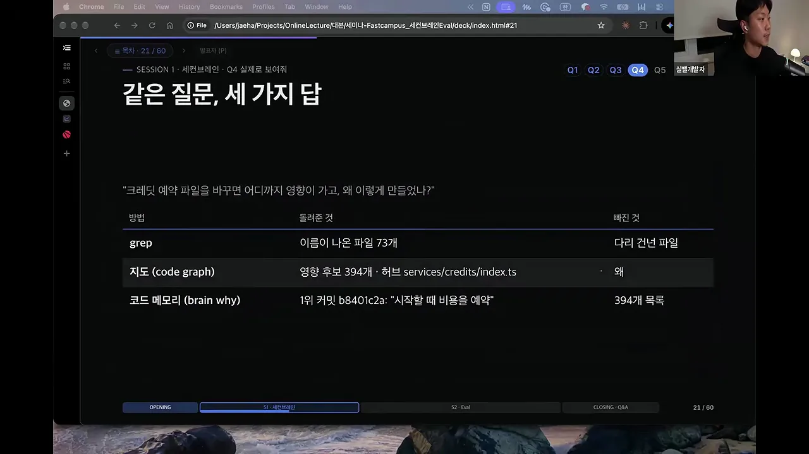
지도를 지키는 말도 앞의 팁과 같아요. 발표자는 낡은 컨텍스트가 없는 것보다 나쁘다고 해요(드리밍 해설의 실험에서도 틀린 메모를 든 클로드는 메모가 없을 때처럼 산을 못 넘었어요. 원래 대화 기록과 대조해 메모를 고치자 그제야 넘었어요). 그리고 지도가 답할 때마다 complete, truncated(50개까지만 보여 줘서 잘림), partial(못 찾은 길이 있음) 라벨을 붙여서, 잘린 목록을 전부라고 말하지 않게 해요. 못 찾은 import는 추측으로 잇지 않고 '못 찾은 길'로 적어 둬요.
토큰 정리법은 '왜' 기록을 더 가볍게 시작해요. 오류가 왜 났는지, 어떤 방법이 실패했는지, 최종적으로 무엇을 바꿨는지가 채팅 속에만 있으면 다음에 또 설명해야 해요. 발표자는 이 기록을 옵시디언 볼트(내 컴퓨터의 텍스트 파일 폴더)에 구조화된 메모와 태그로 쌓고, 예약 오류를 고칠 땐 #예약 태그 기록부터 찾게 해요. 기록 100개를 매번 다 읽히는 게 아니에요. 설치만으로는 에이전트가 못 읽어서 보관함 위치를 알려 주고 읽기 권한을 열어 준 뒤, AGENTS.md에 한 줄을 넣어요.
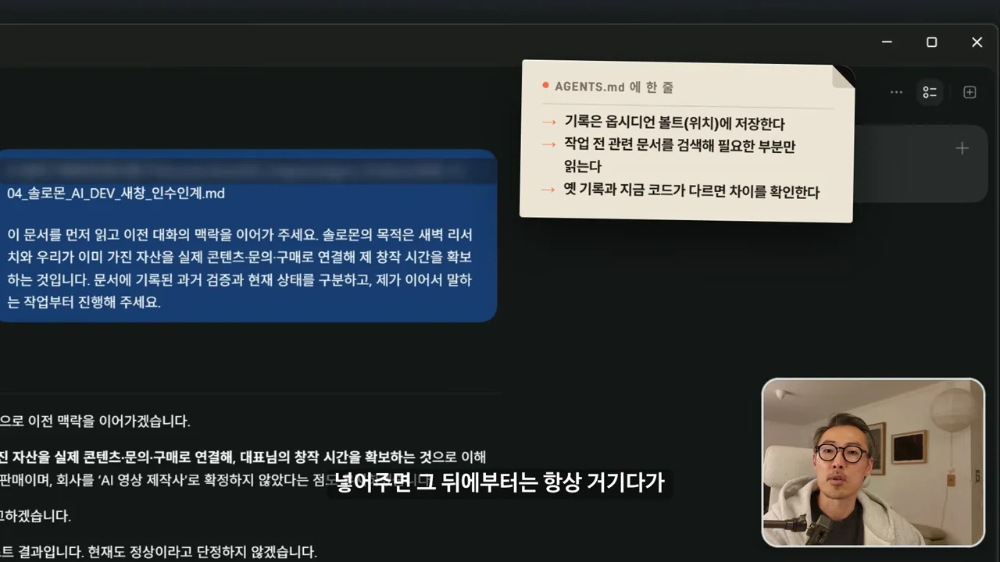
공식 문서 7가지가 전하는 OpenAI의 말도 같은 방향이에요. 에이전트 입장에선 실행 중에 볼 수 없는 지식은 없는 것과 같아요. 그래서 OpenAI는 메신저나 머릿속에만 있던 결정을 저장소 안 문서 폴더로 옮겼대요.
전역, 프로젝트, 하위 폴더
CLAUDE.md 입문은 파일이 놓인 자리에 따라 적용 범위가 달라진다는 걸 보여 줘요. 전역 CLAUDE.md는 내 컴퓨터 어디서 클로드를 켜든 들어가니 '나에 대한 정보'를 적고, 프로젝트 CLAUDE.md는 그 폴더에서만 적용되니 그 일의 지침을 적어요. 새 대화를 시작하면 전역 파일을 먼저 읽고 이어서 프로젝트 파일을 읽어요.
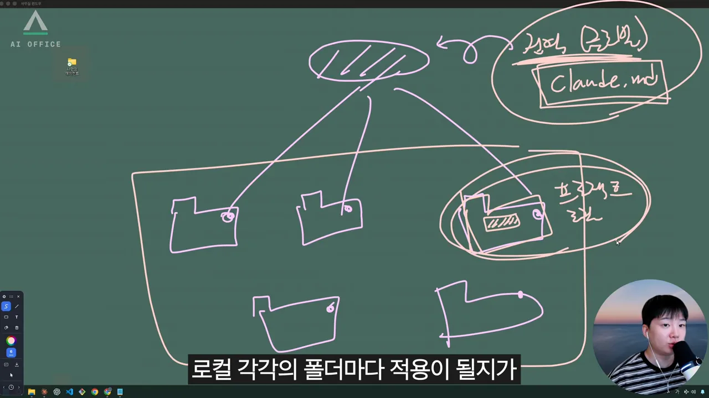
토큰 정리법은 같은 구분을 개발 기준으로 보여 줘요. 전역 지침에는 모든 프로젝트에 공통인 기준을, 프로젝트 지침에는 그 앱에만 해당하는 기준을 적어요. 예약 앱이라면 기존 로그인 흐름 유지, 예약 저장 코드 위치, 수정 후 돌릴 테스트 명령이 프로젝트 쪽이에요. 도구마다 지침 파일 위치와 읽는 방식이 다르니, 내 도구가 실제로 읽는 파일은 그 도구의 문서로 확인하라고 해요.
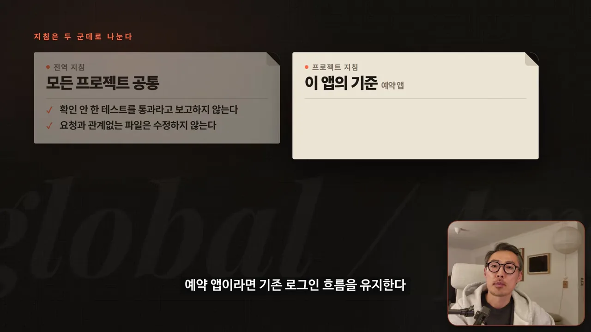
두 가지를 같이 알아 두면 좋아요. CLAUDE.md를 고친 뒤에는 새 대화창을 열어야 반영돼요. 이미 열린 대화는 예전 내용을 읽은 채로 돌아가요(CLAUDE.md 입문). 그리고 모노레포라면 하위 폴더마다 AGENTS.md를 둘 수 있어요. Kyle 강의의 설명으로는 어느 파일이 실리는지가 에이전트를 어느 폴더에서 실행했는지로 정해져요. 루트에서 열면 루트 파일만, apps/api에서 열면 루트와 그 폴더 파일이 함께 실려요. 9 Skills도 모노레포라면 어디서나 참인 내용만 루트에 두고 각 부분 옆에 따로 두라고 해요. 공식 문서 7가지에 따르면 Codex는 안쪽 폴더의 AGENTS.md 중 지금 작업하는 곳에 더 가까운 파일을 우선해요.
CLAUDE.md 200줄 영상은 Claude Code의 자리를 넷으로 정리해요. 회사가 모든 직원 컴퓨터에 배포하는 조직 정책, 내 모든 프로젝트에 드는 ~/.claude/CLAUDE.md, 깃으로 팀과 같이 쓰는 ./CLAUDE.md, 나만 쓰고 깃에 안 올리는 CLAUDE.local.md예요. 이 파일들은 서로 덮어쓰지 않고 전부 이어 붙여 들어가요. 하위 폴더의 CLAUDE.md는 처음엔 안 불러오고, 클로드가 그 폴더의 파일을 열 때 불러와요. 위 Kyle 강의의 '어디서 실행했는지로 정해진다'와는 다른 방식이라, 내 도구가 어느 쪽인지는 그 도구의 문서로 확인해요.

/doctor). CLAUDE.md 200줄 영상 01:29에서 보기레포가 여러 개라면 홈 레포 하나에서
모노레포가 아니라 레포가 여러 개로 나뉜 조직이면 고민이 하나 더 생겨요. 모든 세션에 깔려 있어야 할 스킬, 도구, AGENTS.md, 위키 링크를 어디에 둘지예요. 홈 레포 영상의 Matt Pocock은 흔한 두 방법의 약점을 짚어요. 레포마다 복사하면 30~40개 레포에 걸쳐 계속 동기화해야 해요. ~/.claude 같은 사용자 폴더에 두면 모든 레포에서 보이긴 하지만, 눈에 잘 안 띄어서 업데이트가 안 되고 팀 설정보다 뒤처져요. Matt는 사용자 폴더를 '팀이 원하는 방식'이 아니라 '내가 일하는 방식'을 담는 곳으로 봐요.
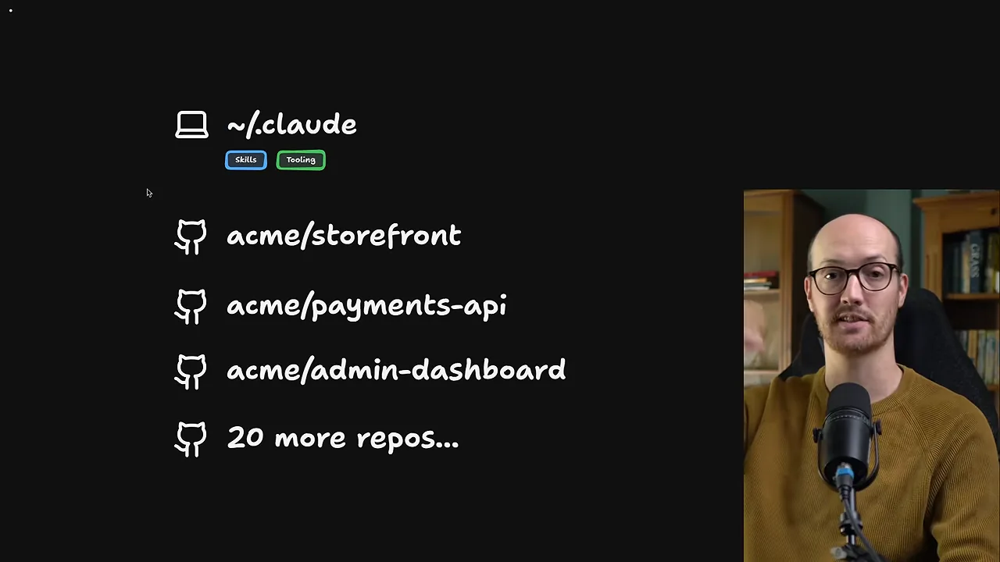
Matt의 해법은 홈 레포예요. 스킬(.claude/skills), 버전 관리하는 설정(.claude/settings.json), 위키, 자체 도구를 평범한 레포 하나에 모으고, 에이전트는 늘 거기서 띄워요. 모두가 같은 곳에서 띄우니 여기서 바꾼 설정이 조직 전체에 바로 퍼져요. 다른 레포는 CLAUDE.md(AGENTS.md)의 'Other Repos' 아래에 경로를 한 줄씩 적어 두면 끝이에요. 그 경로에 레포가 없으면 에이전트가 clone해 오고, 에이전트 여럿이 같은 레포를 쓰면 그 clone 안에 워크트리를 만들어 써요. 레포를 하나 더 붙일 땐 한 줄을 더 쓰고, 가끔 워크트리 정리만 해 주면 돼요. 이 절 처음의 '설명서가 아니라 지도'를 레포 단위로 그린 셈이에요.
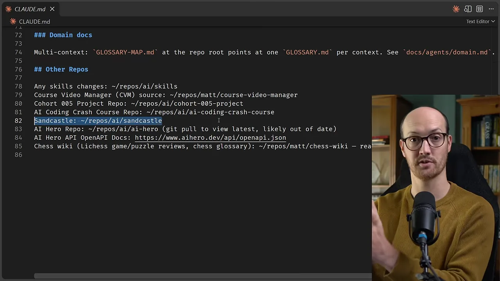
이 방식은 레포 20~40개까지는 잘 되지만 400개쯤이면 버거워요. 그땐 점진적 공개를 써요. 앞에서 본 '하위 폴더마다 작은 인덱스'와 같은 생각이에요. AGENTS.md는 docs/FRONTEND.md, docs/BACKEND.md, docs/INTERNAL.md처럼 영역별 문서만 가리키고, 레포는 각 문서 안에서 가리켜요. 에이전트는 파일을 따라 내려가며 맞는 레포를 찾아요.
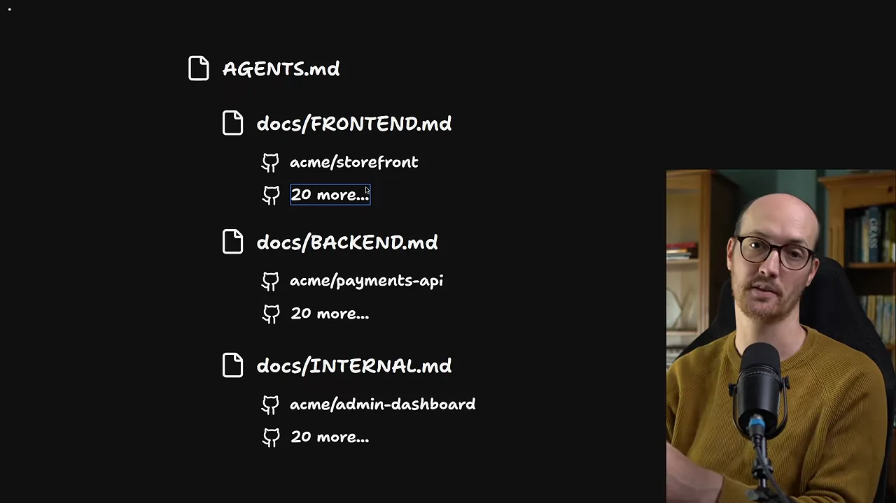
AGENTS.md에는 영역 문서 세 줄만 있어요. 레포 목록은 한 단계 아래에 나뉘어 있어요. 홈 레포 영상 05:12에서 보기한곳에 모으면 덤도 있어요. Matt는 홈 레포를 쓰고 나서 에이전트용 도구를 훨씬 과감하게 만들게 됐대요. 홈 레포의 wiki 폴더에는 카파시 스타일의 LLM 위키가 있고, wiki --help를 치면 X, Gmail, Slack, Discord, GitHub, Todoist 같은 곳을 잇는 명령이 줄줄이 나와요. 그래서 "Discord에서 이 메시지를 찾아봐 → AI Coding Crash Course 레포로 가서 기존 스킬로 고쳐 → Course Video Manager의 CVM(Course Video Manager) 스킬로 강의 영상도 고쳐"를 한 요청으로 시킬 수 있어요. 처음 세팅은 Matt가 쓴 'The Home Repo Pattern' 글의 프롬프트에 맡길 수 있어요. 내 환경을 질문으로 캐물으며 챙길 레포를 살핀 뒤 자료를 홈 레포로 옮기기 시작해요.
한 파일만 고치게 하기
Claude Code는 CLAUDE.md, Codex는 AGENTS.md를 읽어요. 두 파일을 따로 두면 에이전트가 나중에 규칙을 덧붙일 때 한쪽에만 적어서 어긋나기 쉬워요. 해법은 두 가지가 나와요.
- 심볼릭 링크(Kyle 강의):
ln -s AGENTS.md CLAUDE.md로CLAUDE.md를AGENTS.md의 링크로 만들어요. - 한 줄짜리
CLAUDE.md(게임 팀 세팅):CLAUDE.md에는@AGENTS.md한 줄만 두고 규칙은AGENTS.md한 파일에 모아요.
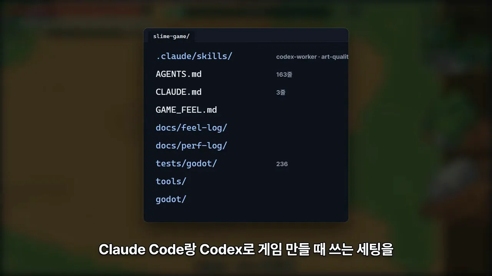
AGENTS.md는 163줄, CLAUDE.md는 3줄이에요. 규칙을 고칠 곳이 한 군데뿐이에요. 게임 팀 세팅 00:10에서 보기세컨드 브레인 18팁은 하나를 경고해요. 이미 claude.md가 있다면 이름을 agents.md로 바꾸고 둘을 같이 두지 말라고 해요. claude.md가 있으면 Claude가 그것만 읽고 agents.md는 건너뛴다는 거예요. 리뷰 루프는 @ 링크를 반대 방향으로 써요. 따로 시키지 않으면 읽히지 않는 review.md를 CLAUDE.md에서 @review.md로 링크해, 새 세션마다 같이 불러오게 해요. @로 건 파일은 링크가 아니라 내용이 함께 실린다는 뜻이니, 늘 필요한 파일에만 써요.
맨 위에 둘 몇 줄
게임 팀 세팅은 모든 규칙 파일에 들어갈 기본 네 가지를 먼저 꼽아요. 정보 없이 코딩하지 말 것, 무조건 동의하지 말 것, 테스트만 보고 완료라고 하지 말 것, 같은 실수를 반복하지 말 것이에요. 같은 채널의 게임 규칙 네 가지가 이 넷을 한 줄씩 풀어요.
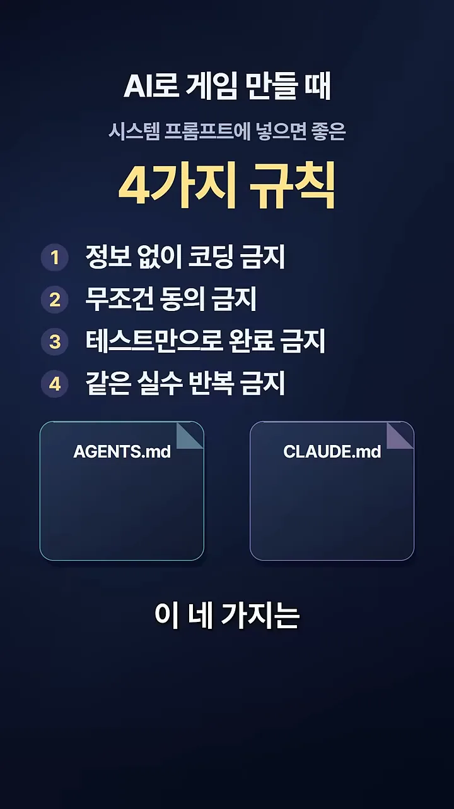
- 정보 없이 코딩 금지 — 무엇을, 왜, 어떻게 만드는지 중 하나라도 흐리면 먼저 묻고, 아이디어와 계획을 함께 정리한 다음에 구현해요(6절).
- 무조건 동의 금지 — 구현 전에 그 방향의 문제점과 대안을 따져 보게 해요. 다만 작업마다 허락을 받으라는 뜻은 아니에요. 검토는 하되 흐름은 끊지 않아요.
- 테스트만으로 완료 금지 — 게임은 테스트가 통과해도 화면이나 조작이 이상할 수 있어요. AI가 직접 실행해 확인하고, 필요하면 사람이 플레이해요(9절).
- 같은 실수 반복 금지 — 배운 점을 규칙 파일에 한 줄씩 남기고, 쌓이면 겹치는 내용을 줄여요(아래 '커지지 않게 지키는 법').
게임 팀 세팅은 여기에 맨 위에 두는 줄을 보태요.
- "최신 사용자 지시가 이 파일보다 우선한다." 파일이 낡아도 방금 한 말을 따르게 하려고요.
- "사용자가 직접 고친 파일은 덮어쓰지 않는다." 손으로 고친 그림이나 설정을 AI가 자기 버전으로 다시 덮는 걸 막아요.
- "자동 검사 통과는 재미나 미술 승인이 아니다." 그래서 AI가 보고할 때 코드로 확인한 것, 실제 화면·소리로 본 것, 확인 못 한 것을 나눠 말하게 해 놨어요.
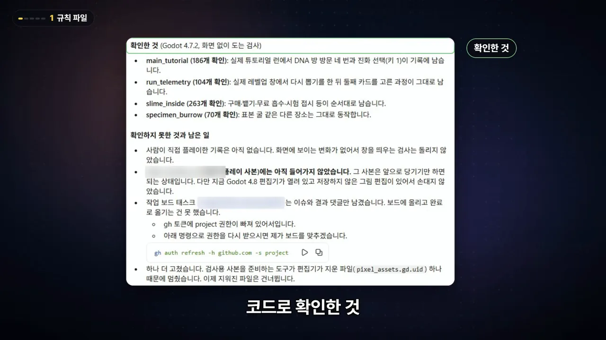
세컨드 브레인 18팁은 팀이 함께 쓰는 지도에 한 줄을 더 넣으라고 해요. AI 에이전트는 사실보다 말하는 사람에게 동의하는 경향이 있어서, 영업 담당의 Claude는 영업 담당에게, 마케터의 Claude는 마케터에게 동의할 뿐이에요. 그래서 '항상 우리의 목표와 전략에 따라 회사에 가장 이로운 쪽으로 행동하고, 요청이 그와 충돌하면 그냥 동의하지 말고 분명히 말하라' 같은 줄을 넣어요.
커지지 않게 지키는 법
CLAUDE.md는 지적할 때마다 한 줄씩 붙으며 자라요(2절). 게임 팀 세팅의 AGENTS.md도 한때 466줄까지 불어 거의 일기장이 됐대요. 지금도 유효한 규칙만 남기라고 시켰더니 117줄이 됐고, 지운 내용은 AGENTS_HISTORY.md로 옮겼어요.
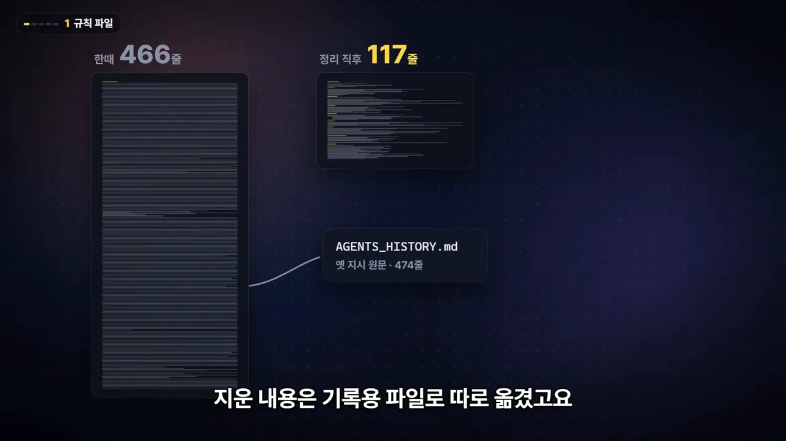
실수를 봤을 때 어디에 적을지는 영상마다 조금씩 달라요.
| 영상 | 실수를 봤을 때 | 파일을 지키는 장치 |
|---|---|---|
| Kyle 강의 | AI가 실제로 틀린 걸 볼 때마다 알맞은 문서에 규칙을 하나씩 더해요 | 처음부터 AI에게 AGENTS.md를 만들라고 시키지 않아요. 장황한 파일이 나와요 |
| 왕초보 가이드 | "이거 CLAUDE.md에 적어 둬"라고 해요 | /init으로 만들고 200줄 안으로 유지하고, 가끔 예전 강조 문구를 청소해요 |
| 게임 팀 세팅 | 그 작업 폴더의 메모에 날짜와 사용자가 한 말을 그대로 적어요 | 규칙 파일에는 오래 갈 규칙만 한두 줄로 올리고, 지운 건 기록 파일로 옮겨요 |
| 리뷰 루프 | 리뷰어가 같은 실수를 계속 찾으면 review.md 맨 아래 'Learned rules'에 한 줄 넣어요 | 루프가 끝날 때 규칙을 제안하고, 사람이 승인하면 넣어요 |
| 공식 문서 7가지 | 같은 실수가 반복될 때만 한 줄씩 늘려요. 두 번 고쳐 준 실수가 그 신호예요 | /init으로 초안을 만든 뒤 필요 없는 줄을 지워 나가요. 200줄 아래로 둬요 |
| 스킬 그만 쇼츠 | 틀릴 때마다 새 스킬을 깔지 말고, 에이전트가 딛고 선 폴더와 CLAUDE.md를 고쳐요 | 안 쓰는 스킬 40개 대신 잘 작동하는 것만 남겨요(3절의 세팅 점검) |
| Lauren Tan 발표, 슬롭 발표 해설 | 규칙 파일에 한 줄 더하기 전에, 린트 규칙이나 테스트로 만들거나 API 설계로 문제를 종류째 없앨 수 있는지 먼저 봐요 | 교정이 코드로 쌓이니 글은 거의 늘지 않아요. 새로 생기는 패턴부터 막고 옛것은 그다음에 치워요(7절) |
| CLAUDE.md 200줄 영상 | 같은 실수를 두 번째 할 때, 리뷰에서 클로드가 알았어야 할 걸 지적받을 때, 지난 세션에 한 정정을 또 입력할 때, 새 팀원도 같은 설명이 필요할 때 적어요 | 여러 단계 절차는 스킬로, 일부 경로 규칙은 .claude/rules/로 빼요. 사람만 볼 메모는 HTML 주석으로 남겨 토큰을 쓰지 않아요(2절) |
| 결과물 7가지 습관 | 별로인 결과를 다시 만들라고만 하지 말고, 왜 별로인지 정리해 규칙으로 남겨요 | 규칙은 CLAUDE.md에 적거나 스킬·훅으로 만들어요. 그렇게 내 기준이 조금씩 쌓여요 |
도구의 도움도 받을 수 있어요. 공식 플러그인 4개의 claude-md-management에는 두 도구가 있어요. 세션 끝에 한 번 돌리는 /revise-claude-md는 이번 대화에서 새로 알게 된 명령어, 작업 패턴, 함정을 CLAUDE.md 후보로 뽑아 줘요. 주기적으로 돌리는 claude-md-improver는 모든 CLAUDE.md를 여섯 기준으로 100점 만점 채점하고, 작동하지 않는 명령어나 빠진 설정도 짚어 줘요.
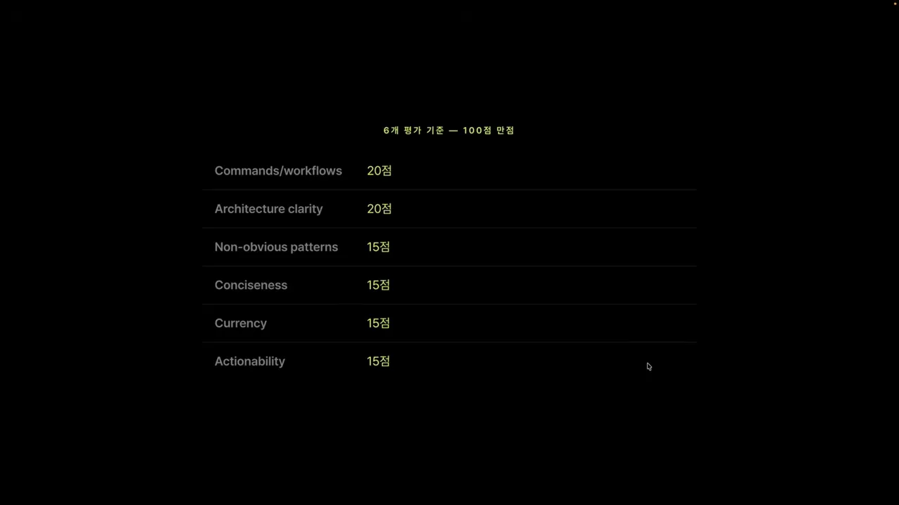
9 Skills의 audit과 sync 스킬도 같은 일을 해요. 실제 프로젝트 구조를 읽고 컨텍스트 파일을 쓰되, 사람이 직접 쓴 내용은 덮어쓰지 않고 빈 곳만 채워요. 코드가 문서와 어긋나면 고치지 않고 표시만 해서 사람이 정하게 해요. 세컨드 브레인 18팁은 이 청소를 1~2주마다 예약 작업으로 돌리고, 지도와 인덱스를 고치며 200줄 아래로 유지해요.
스킬을 만드는 규칙
스킬 규칙 7가지는 Anthropic 공식 가이드에서 일곱 규칙을 골라, 이미 만든 스킬을 어떻게 고칠지 알려 줘요. 결론은 이래요. 스킬을 잘 만드는 일은 문장을 잘 쓰는 일보다 파일을 어떻게 놓고 무슨 검사를 돌리느냐에 달렸어요. 이 절은 그 일곱 규칙을 뼈대로, 다른 영상이 보탠 내용을 제자리에 끼워 넣었어요. 일곱째 규칙 '쓸 모델 전부로 테스트하기'는 11절에서 따로 다뤄요.
언제 스킬로 만들까요
Ivanna 인터뷰는 신호를 두 개로 꼽아요. 하나는 반복이에요. 코드 리뷰처럼 매번 같은 순서를 밟는 일이라면, 그 순서를 템플릿이나 단계별 지침으로 적어 둔 게 곧 스킬이에요. 다른 하나는 반복하지 않아도 자동화하고 싶은 큰 일이에요. 앱에 광고를 붙이는 일처럼 한 번이면 끝나지만 덩치가 큰 일은 스킬을 찾아 써서 끝내고, 다 쓰면 프로젝트에서 빼요. 홀먼 영상이 인용한 공식 문서의 신호도 같아요. 같은 지시를 계속 붙여 넣고 있다면 스킬로 옮길 때예요(3절).
메타 Eval 세미나가 소개한 메타 엔지니어링 블로그 사례도 같은 쪽이에요. 성능 문제 하나를 진단하는 데 사람이 10시간 걸렸는데, 표준 프로파일링 도구를 MCP로 만들고 전문가의 진단 순서를 스킬로 만들어 주자 에이전트가 30분 만에 끝냈어요. 토큰 정리법도 한 번 푼 해결법(결제 문제, 서버 연결, 자동화 설정 순서)을 스킬로 만들어 한 폴더에 모아 두면, 코덱스든 클로드든 다른 곳에서 똑같이 다시 할 수 있다고 해요. Harness² 해설의 예도 같아요. 워드 문서의 수정 표시를 못 읽던 계약서 과제는 읽는 법을 스킬로 적어 주자 44.4점에서 94.5점이 됐어요.
만드는 일도 맡길 수 있어요. 왕초보 가이드는 /skill-creator가 인터뷰하며 스킬을 써 준다고 하고, 일을 한 번 끝낸 뒤 "방금 한 거 스킬로 만들어 줘"라고 해도 된다고 해요. Ivanna 인터뷰는 Skill Creator를 추천 1번으로 꼽아요. SKILL.md만 쓰고 끝내기 쉬운데, 이 스킬은 잊기 쉬운 scripts, references, assets까지 만들어 줘요. 다만 에이전트가 던지는 질문에 답하며 다듬고, 결과물은 꼭 직접 읽어 보라고 해요.
설명 한 줄이 스킬을 불러요
Kyle 강의는 SKILL.md 맨 위의 이름과 설명이 모든 요청에 실려 간다는 걸 화면으로 짚어요. AI는 이 목록을 보고 어떤 스킬을 열지 골라요. 그래서 설명에는 언제 쓰는지가 들어가야 해요. Ivanna 인터뷰의 '새 엔드포인트 붙이기' 스킬은 설명란에 '새 기능을 추가할 때 사용'이라고 적어 두어서, 에이전트가 새 기능 요청을 받을 때마다 이 스킬과 assets 폴더의 템플릿을 읽어요.
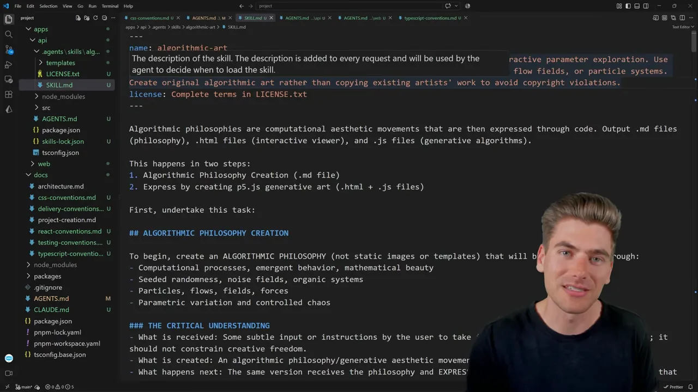
메타 Eval 세미나는 반대쪽도 적으라고 해요. 발표자의 세컨드 브레인 스킬은 큰 작업에서는 좋았지만, 작고 로컬한 작업에서는 오히려 느려졌어요. 그래서 SKILL.md의 라우팅 표에 부르지 말 때를 넣었어요. 아는 파일 하나짜리 작은 작업이면 brain을 부르지 말고 그 파일을 읽으라는 줄이에요. 그 뒤 작은 작업에서 부른 횟수는 0/6이었어요. 다만 스킬 로드율이 76.8%(53/69)라서 설명은 더 다듬어야 한대요. 설명이 실제로 스킬을 부르는지는 Eval로 재요(9절).
설명을 잘 써도 저절로 안 불리는 스킬이 있어요. 리버스 프롬프팅 영상의 /interview-me처럼 작업 전에 나를 인터뷰하는 스킬이에요. 영상이 든 코넬대 논문(2026년 5월)에 따르면 AI는 요청이 모호한 걸 알아도 묻지 않고 추측해요. 참고 자료가 많을수록 확인 질문은 더 줄어요. Claude Code처럼 컨텍스트가 가득한 환경이면 직접 부르지 않는 한 짐작으로 코드부터 짜기 쉬워요. 그래서 발동 조건을 CLAUDE.md(AGENTS.md)에 상시 규칙으로 걸어 둬요. 사람이 매번 이유를 설명하는 버릇을 들이긴 어렵지만, 하네스에 걸어 두면 시스템이 알아서 움직여요.
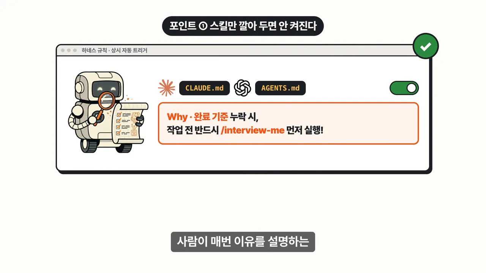
영상이 고정 댓글로 준 규칙은 예외부터 적어요. 오타 수정, 단순 조회, 지시가 명확한 작업은 바로 하고, Why·대상·완료 기준·제약 중 하나라도 빠져 방향이 달라질 수 있을 때만 /interview-me를 먼저 실행해요. 의도가 확정되면 Why와 안 할 것(Out of scope)을 파일로 저장하고 턴을 멈춰요. 메타 Eval 세미나의 '부르지 말 때'와 같은 생각이에요. 언제 부르고 언제 안 부를지를 함께 적어야 작은 일까지 느려지지 않아요. 인터뷰가 무엇을 묻는지는 6절에서 봐요.
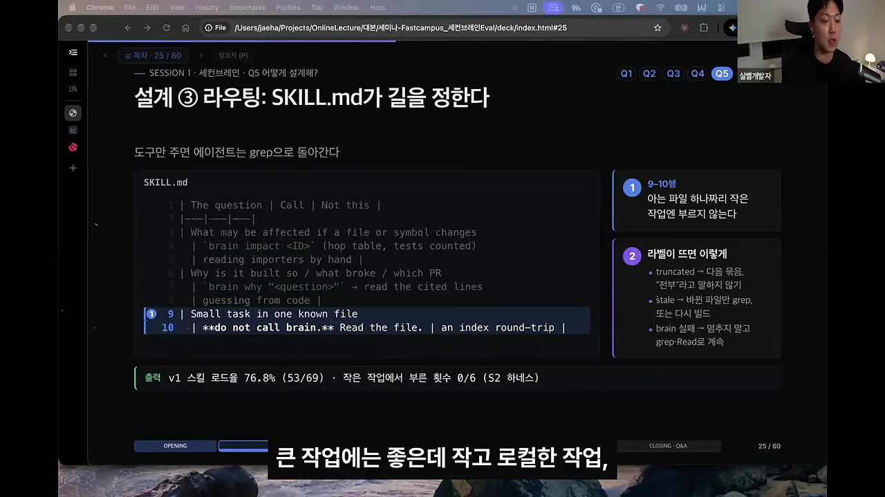
SKILL.md는 목차처럼, 참조는 한 단계만
공식 가이드는 SKILL.md 본문을 500줄 안으로 두고 전체의 목차처럼 쓰라고 해요. 나머지는 따로 빼고, 클로드는 필요할 때만 그 파일을 열어요. 정확히 똑같이 해야 하는 일은 스크립트 폴더에 둬요. 여러 분야를 다루면 파일도 분야별로 나눠요. 매출을 물을 때 마케팅 파일은 열리지 않아요.
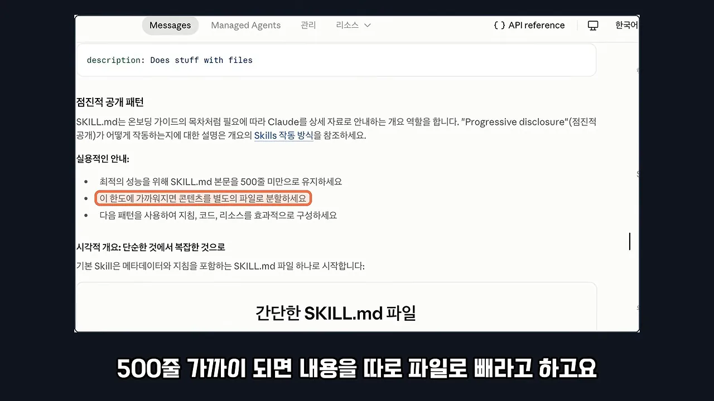
처음엔 짧은 목차만 두고 필요할 때 자세한 파일을 열게 하는 이 구성을 공식 가이드는 점진적 공개 패턴이라고 불러요. 파일이 파일을 가리키는 사슬은 피해요. SKILL.md가 advanced.md를, 그 파일이 다시 details.md를 가리키면 끝에 있는 정보는 앞부분만 읽힐 수 있어요. 참고 파일은 전부 SKILL.md에서 바로 연결해요.
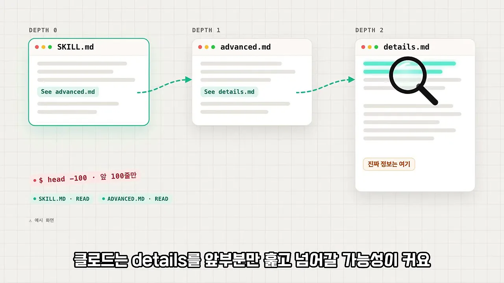
100줄 넘는 참고 파일에는 목차부터
영상은 클로드가 긴 참고 파일을 head -100으로 앞 100줄만 보고 그 파일이 필요한지 판단할 때가 많다고 해요. 그래서 100번째 줄 아래에 쓴 규칙은 없는 것과 같다고 말해요. 해결은 맨 위에 목차를 다는 거예요. 그러면 클로드가 전체를 읽을지, 필요한 곳으로 바로 갈지 고를 수 있어요.
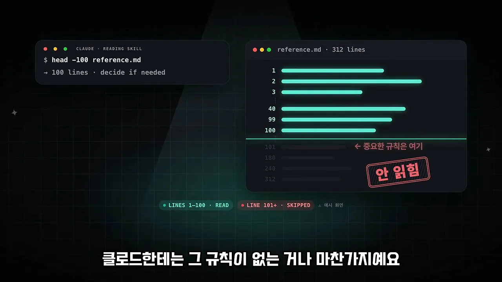
할 일도 단순해요. 클로드에게 100줄 넘는 참고 파일을 찾아 제목에 맞춰 목차를 넣으라고 시키면 돼요.
자유도는 단계마다 정해요
스킬을 얼마나 자세히 쓸지는 그 일이 얼마나 쉽게 깨지고, 얼마나 매번 달라지는지 보고 정해요.
| 자유도 | 쓰는 모양 | 맞는 일 |
|---|---|---|
| 높음 | 글로 쓴 지시 | 코드 리뷰, 영업 통화 돌아보기, 링크드인 글 초안처럼 방법을 열어 둬도 되는 일 |
| 중간 | 설정값이 있는 템플릿 | 매주 보내는 고객 보고서처럼 모양은 정해져 있고 조금 달라져도 되는 일 |
| 낮음 | 정해진 스크립트 | 데이터베이스 이전, 청구서 발행, 환불, 회원 삭제처럼 실수하면 안 되는 일 |
자유도는 스킬 하나 안에서도 단계마다 달라요. 단계마다 "클로드가 이걸 다르게 하면 무슨 일이 생기지?"를 물어요. 별일 없으면 풀어 주고, 큰일 나면 잠가요. 잠근다는 건 보통 글을 더 쓰는 게 아니라 스크립트로 바꾸는 거예요. Harness² 해설도 숫자 수백 개를 맞춰 보는 확인은 AI 머리 대신 작은 파이썬 프로그램(check_totals.py)에 맡겨요. 같은 입력이면 늘 같은 답이 나오니까요.
체크리스트와 스스로 고치는 루프
복잡한 일에는 체크리스트를 줘요. 클로드가 답변에 복사해 두고 하나씩 지워 가요. 다만 순서가 중요할 때만 쓰고, 상관없으면 빼요. 영상이 꼭 보여 주려는 건 "인용이 빠졌으면 3단계로 돌아가라"는 한 줄이에요. 이 한 줄 덕분에 실패한 단계를 체크하고 넘어가지 않아요.
루프는 검사하고, 고치고, 통과할 때까지 반복하는 구조예요. 검사 기준이 꼭 코드일 필요는 없어요. 스타일 가이드나 브랜드 말투 문서도 돼요. 초안이 문서에 없는 이유로 걸리면 작업 끝에 클로드에게 새 규칙을 제안하게 하고, 승인한 규칙은 문서에 넣어요. 그러면 스킬이 쓸수록 나아져요.
세 스킬 묶음 비교는 단계를 건너뛰지 못하게 하는 장치를 하나 더 보여 줘요. 애디 오스마니의 스킬에는 AI가 단계를 건너뛸 때 댈 법한 핑계와 그 반박이 표로 적혀 있어요. "간단해서 테스트가 필요 없다", "직접 확인했으니 충분하다" 같은 핑계로 넘어가지 못하게 하려는 거예요.
설치할 패키지까지 적어요
직접 만든 스킬은 내 노트북에서만 잘 돌기 쉬워요. 필요한 걸 오래전에 깔아 놓고 잊었기 때문이에요. "PDF 라이브러리로 처리해라"로 끝내지 말고, 설치할 패키지 이름까지 적어요. 이미 깔려 있으면 클로드가 알아서 건너뛴다고 해요. 다만 Claude API 환경은 실행 중 설치가 안 되니, 쓸 수 있는 패키지인지 먼저 확인해야 해요.
pip install pypdf 한 줄이 먼저 있어요. 다른 사람 컴퓨터에서도 돌게 하는 한 줄이에요. 스킬 규칙 7가지 10:17에서 보기설치는 반대쪽 위험과도 이어져요. 남이 만든 스킬이 시키지 않은 설치를 실행한 사례는 10절에서 봐요.
같은 참고 자료는 한 파일만
세컨드 브레인 18팁은 스킬 여러 개가 저마다 같은 문서의 사본을 들고 있는 걸 경고해요. 스킬 10개가 전략 문서 사본을 하나씩 가지고 있으면, 전략이 바뀔 때 10곳을 고쳐야 하고 결국 아무도 안 고쳐요. 참고 파일은 한 곳에 두고 스킬은 그 파일을 가리키게 하면 한 번 고쳐서 모든 스킬에 반영돼요. 브랜드 말투 가이드나 가격 문서가 그런 예예요.
지시문은 어떻게 쓸까요
CLAUDE.md든 스킬이든 결국 문장으로 써요. 이 절은 그 문장을 어떻게 쓸지를 모았어요. 영상들이 반복해서 하는 말은 셋이에요. 역할 대신 과정과 도구를 주고, 강조 대신 이유를 대고, 원치 않는 행동은 그 행동을 정확히 짚어 막아요. 특정 모델 때문에 생긴 문장(서식 금지문, 진행 알림 요청)과 Opus 5.5·Fable 5.2에 따라 득실이 갈리는 문장은 11절 표에도 모았어요.
역할 대신 최고의 사람이 거치는 과정
펠릭스 인터뷰는 "너는 뛰어난 엔지니어야"를 2024년에 유행한 방식이라고 해요. 지금 모델도 "훌륭한 회계사처럼 해"라고 하면 역할극을 하며 말투만 바꿔요. 대신 그 분야 최고의 사람이 어떤 단계를 거치고 어떤 도구를 쓰는지 묻고, 똑같이 쓰게 해요. 펠릭스의 말로는 '말은 다섯 살에게 하듯 쉽게, 도구는 최고로'예요.
펠릭스는 기준도 결과가 아니라 과정에 둬요. 날씨 예시가 그래요. 모델이 기온을 찍어서 맞혔다면 통과가 아니라 실패예요. 위치를 제대로 찾고 믿을 만한 출처를 거쳤다면 0.5도 틀려도 그쪽이 더 나은 결과예요. 애니메이션도 클로드에게 좋은 애니메이션이 뭔지 가르친 게 아니라, 전문 애니메이터의 도구인 블렌더를 쓰게 했더니 결과가 좋아졌어요.
맡기기 전에 클로드에게 먼저 물어볼 네 가지도 소개해요. 펠릭스가 블로그에 쓴 '깊이 프롬프트'예요. 답을 다 받으면 내 프롬프트를 정확히 그걸 요구하도록 다시 써요.
인터뷰는 한 걸음 더 나가요. 일을 작업으로 쪼개 맡기지 말고 "그다음에 일어났으면 하는 목표"를 맡기라고 해요. 크래시를 하나씩 집어 주던 펠릭스는 크래시 데이터 전체를 열어 주고 뭘 고칠지 클로드가 정하게 했어요.
역할 문장 중에 행동을 실제로 바꾸는 게 하나 있어요. Opus·Fable 프롬프트 가이드가 전하는 Fable 5.2 가이드의 '코드 주인' 문장이에요. Fable은 비슷한 코드가 이미 있어도 고치기보다 새 코드를 덧붙이는 경향이 있었어요. 가격을 원 단위로 표시하는 함수가 있는데도 같은 로직을 함수마다 또 적는 식이에요. 이때 "너는 이 코드베이스의 주인이자 오래 관리할 사람이야. 설계도 네가 정해"를 넣으면, 중복 코드를 공통 함수로 정리한 비율이 10% 미만에서 약 75%로 올랐어요.
부작용도 커요. 출력 토큰이 70~80% 늘고, 요청하지 않은 테스트와 문서를 만들고, 기존 기능의 동작을 바꾼 경우도 있었어요. "요청하지 않은 리팩터링·정리는 하지 마"를 같이 넣어도 절반이 넘는 실험에서 중복 코드를 정리해 버렸어요. 그래서 구조까지 개선하고 싶을 때만 넣고, 특정 기능만 고치거나 기존 코드를 최대한 지키고 싶다면 아예 빼요. 범위를 막는 문장으로는 이 문장의 효과가 상쇄되지 않거든요.
무엇을, 왜, 누가 볼지, 언제 끝인지
왕초보 가이드는 클로드를 '똑똑하지만 우리 회사를 모르는 신입'으로 봐요. 그래서 무엇을, 왜, 누가 볼지, 어떤 모양으로를 함께 말해요. 통째로 맡기되 완료 조건을 붙여요. "합계가 원본과 같은지 확인하고, 같으면 끝내" 같은 문장이에요.
공식 문서 7가지가 소개한 OpenAI의 권장도 네 칸이에요. 목표(Goal), 참고할 파일(Context), 지킬 조건(Constraints), 끝나는 기준(Done when)이에요. 버튼 글자를 바꾸는 정도는 그냥 시켜도 되고, 완벽한 프롬프트가 필요한 건 아니라고 두 회사 모두 말해요. 하지만 여러 단계가 걸리는 일은 방향이 틀린 채 시작하면 다 만든 뒤 통째로 다시 해야 해요. 그래서 계획 모드(Claude Code는 Shift+Tab, Codex는 /plan)로 코드를 고치기 전에 조사와 계획부터 받아요.
Matt Pocock 대담은 이걸 소통의 문제로 봐요. 모델이 아무리 똑똑해도 에이전트는 내가 무엇을 신경 쓰는지 몰라서 매번 알려 줘야 해요. 그런데 나도 내가 무엇을 원하는지 정확히 모를 때가 많아요. 그래서 Matt의 grill-me 스킬은 에이전트가 나를 집요하게 인터뷰하게 해요. 그러면 보안이나 배포 방식처럼 신경 써야 하는 줄도 몰랐던 것이 드러나요. 이걸 놓치면 에이전트는 지어내거나 '언급이 없으니 중요하지 않다'고 넘겨요.
리버스 프롬프팅 영상은 네 칸 중 가장 잘 빠지는 칸을 Why로 꼽아요. "발라트로 같은 게임 하나 만들어 줘"는 레퍼런스까지 있어서 구체적으로 보이지만 왜 만드는지가 없어요. 혼자 한 판 해 보려는 건지, 새 모델을 시험하려는 건지, 출시해서 돈을 벌려는 건지에 따라 결과물이 완전히 달라야 해요. 혼자 테스트라면 HTML 파일 하나로 바로 돌아가는 게 맞고, 출시가 목표라면 게임 엔진, 저장 구조, 밸런스 데이터 분리, 배포 환경이 처음부터 달라져요. Why를 알면 화면을 어디까지 챙길지, 예외 처리를 어느 수준으로 할지 같은 작은 선택도 에이전트가 의도에 가깝게 내려요.
그런데 모호하면 AI가 알아서 물을 거라고 기대하기는 어려워요. 영상이 든 코넬대 논문(2026년 5월, 'Knowing but Not Showing')은 여러 LLM에게 모호한 요청을 줬어요. "이 요청이 모호한가요?"라고 직접 물으면 꽤 잘 알아챘지만, 평범하게 시키면 알면서도 묻지 않고 추측해서 답했어요. 오른쪽 곡선처럼 참고 자료를 더 넣을수록 확인 질문 비율은 오히려 떨어졌어요.

그래서 처음부터 질문의 주도권을 AI에게 넘겨요. 영상은 이걸 리버스 프롬프팅이라고 불러요. 밴더빌트대 줄스 화이트 교수가 '역전 상호작용 패턴(Flipped Interaction)'으로 정리한 방식이에요. 사람이 지시하고 AI가 추측해 답하던 흐름을, AI가 먼저 묻고 사람이 고르는 흐름으로 뒤집어요. Claude Code의 AskUserQuestion(작업 중에 멈춰 객관식 질문을 던지는 도구)과 '스펙을 쓸 수 있을 때까지 나를 인터뷰해 줘'라는 공식 안내도 같은 쪽이에요.
이게 잘 먹히는 이유는 설명보다 반박이 쉬워서예요. 백지에서 설명하긴 어렵고 귀찮아도, 틀린 추측을 바로잡기는 쉬워요. "지표 보는 대시보드 하나 만들어 줘"라고 하면 AI는 차트부터 깔아요. 인터뷰를 걸어 두면 AI가 먼저 "팀 미팅에서 같이 보려는 대시보드가 맞나요?"라고 추측을 던지고, "아니요, 저 혼자 돌리는 실험들 안 까먹으려고 보는 거예요"라는 반박이 바로 나와요. 필요했던 게 차트가 아니라 실험 목록이었다는 게 질문 하나로 드러나요. AI 가설 → 내 반박 → Why 순서예요.
도구도 나뉘어요. Matt의 grill-me는 이미 세운 계획이나 설계안의 빈틈을 파고드는 스트레스 테스트에 가까워서, 설계도가 있을 때 맞아요. 설명이 막막한 순간에는 영상이 추천하는 애디 오스마니의 /interview-me가 맞아요(github.com/addyosmani/agent-skills). 지침에 장치가 셋 있어요.
- 한 번에 질문 하나와 AI의 추측 — 다섯 개를 한꺼번에 물으면 대충 훑고 넘겨요. 하나씩 묻고 추측을 붙여 '맞다/아니다'로 빠르게 답하게 해요.
- 교과서 같은 모범 답안 걸러내기 — 혼자 잠깐 쓸 툴인데도 "확장성 좋게", "표준 아키텍처로"가 습관처럼 나와요. 이런 말에서 멈추고 "그럴싸한 기준을 빼고, 누구한테 검사받을 필요도 없다면 지금 진짜 필요한 게 뭔가요?"라고 되물어요.
- 안 할 것과 95% 확신 기준 — 끝나면 안 할 것(Out of Scope)까지 요약하고 "알아서 해 줘"는 통과시키지 않아요. AI는 다음 질문 세 개에 대한 내 반응을 예측할 수 있을 때까지 묻고, 확정된 의도를 보여 준 뒤 턴을 멈춰요.
이 스킬을 매번 직접 부르지 않아도 되게 CLAUDE.md에 발동 규칙을 거는 법은 5절에서 봤어요.
왕초보 가이드도 할 말이 정리되지 않으면 클로드에게 인터뷰를 시키라고 해요. 객관식 카드로 묻고, 끝나면 내 답과 클로드의 짐작을 나눠 정리하게 해요. 프롬프트 초안도 클로드에게 쓰게 하고 내가 손봐요. 공식 문서 7가지에 따르면 두 회사 문서에도 같은 방법이 나와요. 하나씩 물어본 다음 요구 사항을 SPEC.md로 정리하게 하고, Anthropic은 그 문서를 들고 새 대화에서 작업을 시작하라고 해요. 끝났다는 기준이 글로 적힌 채 깨끗한 대화에서 출발하는 거예요.
리버스 프롬프팅 영상도 인터뷰한 창에서 바로 구현하지 말라고 해요. 인터뷰 창에는 초반의 틀린 추측과 버린 아이디어가 잡음으로 남아 있어서, 그대로 구현하면 AI가 끌려갈 수 있어요. 확정된 의도, 특히 Why와 안 할 것만 파일(예: intent.md)로 저장하고, 새 세션에서 그 파일만 읽고 구현하게 해요. 토큰도 아끼고 결과도 깔끔해요.
초격차 사고법이 인용한 애디 오스마니의 글도 같은 순서를 권해요(애디 글 해설은 이 글 하나를 통째로 풀어요). 도움을 청하기 전에 요청서를 내 말로 먼저 써요. 누구를 위한 작업인지, 이번에 뺄 것은 무엇인지, 어디까지 하면 완료인지를 적어요. 결과물 7가지 습관도 시키기 전에 이 세 가지를 정리하라고 하고, 하나를 더 보태요. 내가 생각하는 답을 먼저 적어 두는 거예요. 잘 쓴 답을 한 번 읽으면 다른 가능성이 잘 안 떠올라서, 틀린 예상이어도 비교할 기준이 생기는 게 핵심이래요. 스스로도 흐릿하면 AI가 나를 인터뷰하게 해요. 의도만큼은 누구도 대신 정해 줄 수 없으니까요.
애디 글 해설은 이 세 칸이 왜 필요한지 게시판 예로 보여 줘요. 게시판을 만들어 달라고 하면 AI는 그럴듯한 게시판을 만들어요. 그런데 누구를 위한 게시판인지, 회원만 읽는지, 탈퇴한 회원의 글은 어떻게 할지는 말하지 않았어요. 이 빈칸을 AI가 스스로 채우면, 결과물은 완성됐어도 그 안의 선택은 내가 원한 것과 다를 수 있어요. 답을 다 몰라도 돼요. "게시판을 만들기 전에 내가 정해야 할 사항을 질문해 줘"라고 부탁하면 답하는 동안 아직 정하지 않은 선택이 드러나요.

인터뷰 중에 답을 모르겠을 때가 갈림길이에요. 발표자는 '알아서 해 줘'가 판단까지 넘기는 말이라고 해요. 그럴 땐 '모르겠다, 선택지를 줘'라고 답해요.
인터뷰가 끝났다고 AI가 정말 이해했다고 믿을 수도 없어요. /interview-me의 95% 확신도 AI의 자기 판단이라 착각일 수 있거든요. 리버스 프롬프팅 영상은 요약을 받으면 아직 얘기하지 않은 선택지를 하나 던져 보라고 해요. 예를 들면 "데이터는 내 PC 로컬에 저장할까, 서버 DB를 붙일까?"예요. Why를 이해했다면 "혼자 테스트용이니 로컬 저장이 맞습니다"처럼 의도에 맞게 골라요. 거창한 서버 구조를 권하면 상위 목표가 아직 전달되지 않은 거예요.
강조 대신 이유
"잘 생각해", "다시 확인해", "절대 하지 마" 같은 강조 문구는 요즘 모델을 느리게 해요(왕초보 가이드). 예전 AI에는 먹혔지만 요즘 모델은 안 시켜도 생각하고 확인하니, 거기에 더 붙이면 느려지기만 해요. 대신 "임원 보고라 한 장이어야 해"처럼 이유를 말해요.
Lydia 발표는 이 강조가 어디서 왔는지 짚어요. 연초에 Opus 4.5로 돌리던 세션은 모델이 일찍 멈춰서, 사람이 계속 고쳐 주며 CLAUDE.md에 'IMPORTANT!'를 붙였어요. 지금 모델에선 'IMPORTANT', 'never', 느낌표 같은 강조가 필요 없고, 오히려 도구 호출을 늘리고 결과를 나쁘게 만든대요. 왕초보 가이드의 '느려진다'보다 한 걸음 더 간 말이에요. Lydia 발표 해설도 같은 대목을 짚어요. 발표 화면에서는 auth.test.ts 하나를 고쳐 달라고 했는데, IMPORTANT 줄 때문에 Claude가 billing.ts, search.ts, settings.ts까지 돌아다녀요.
Opus·Fable 프롬프트 가이드는 '절대'가 왜 문제인지 Fable 5.2 쪽에서 하나 더 짚어요. Fable은 메모리나 CLAUDE.md 같은 규칙 파일의 지시도 꼼꼼히 따라서, '절대'가 들어가면 예외 없는 규칙으로 받아요. 앤트로픽 테스트에서 "이 대화 밖의 사람에게 메시지를 보내려면 승인을 받아라"를 넣었더니, 동료에게 보내는 평범한 업무 메시지조차 절반 가까이 보류했어요. 그렇다고 "알아서 진행해"처럼 막연하게 허락해도 효과가 크지 않았어요. 그래서 혼자 해도 되는 일과 승인이 필요한 일을 나눠 적어요.
짧게, 딱 맞게
카파시 해커튜브는 같은 흐름을 프롬프트 전체로 넓혀요. 안드레이 카파시는 코드를 한 줄도 치지 않고 두 시간 만에 해커 뉴스 추천 영상만 모은 사이트를 띄웠어요. 서버가 켜진 뒤 준 지시는 서버 IP(Internet Protocol)와 update, deploy, secure, harden and optimize 다섯 단어가 전부였어요. 카파시는 프롬프트가 점점 짧고 멍청해진다고 말해요. 말을 덜 해도 모델이 뜻을 알아듣고, 요구 사항을 너무 많이 주면 오히려 모델을 묶는다는 거예요.

앞의 '무엇을, 왜, 누가 볼지, 언제 끝인지'와 부딪히는 말은 아니에요. 그 네 칸이 딱 맞게 줄 정보이고, 덜어 낼 건 모델이 알아서 할 일을 일일이 정해 주는 요구예요. 카파시도 짧게 맡기는 대신 Claude에게 스스로 검증할 방법을 줘요(9절). 조건도 하나 붙여요. 이렇게 맡기는 건 Opus 5.5 이상에서만이고, 더 약한 모델은 이만큼 믿지 않겠대요. 기본 설정은 Opus 5.5, 노력 수준 Medium이에요.

쓰는 법보다 무엇을 위한 건지
드리밍 해설이 전하는 Anthropic 실험은 지시를 얼마나 자세히 줄지에 답을 하나 보태요. 메모 폴더를 주고 질문마다 새 세션에서 풀게 했더니, 폴더가 있다는 것만 알려 줘도 Opus 4.7과 Opus 5는 메모를 잘 써서 점수가 확실히 올랐어요. 그런데 '실패만 기록하라' 같은 쓰는 법 규칙을 하나씩 더하자 두 모델 모두 메모로 얻던 이득의 상당 부분을 잃었어요. 강한 모델일수록 무엇이 중요한지 스스로 고르게 두는 게 나았어요.
그래서 최신 모델에는 짧게만 말해요. 사용자가 기억하라고 하거나 확실히 기억할 가치가 있을 때 메모를 남기라고요. 나머지는 모델이 판단해요. 옛 모델은 반대였어요. Sonnet 4.6은 메모를 잘 읽지도, 가설을 검증하지도 않아서, 답하기 전에 메모를 읽고 검증하라고 시키자 점수가 0.36에서 0.64로 거의 두 배가 됐어요. 같은 지시가 모델에 따라 득도 되고 실도 되니, 이런 줄은 11절 기록표에 모델과 함께 적어 둬요.
원치 않는 행동은 그 행동을 짚어 막아요
Fable 5.1 가이드는 에이전트가 이상하게 굴 때 모델을 바꾸기 전에 그 행동을 정확히 짚어 막는 한 문장부터 찾으라고 해요. 영상이 보여 준 문장들이에요.
| 이런 행동이 보이면 | 넣는 문장 |
|---|---|
| 로그인 오류를 고쳐 달랬는데 관련 없는 화면까지 바꿔요 | "요청과 관련 없는 문제를 발견하면 수정하지 말고 작업이 끝난 뒤 알려줘" |
| 확인용으로 잠깐 만든 코드를 전부 테스트 파일로 남겨요 | 요청했거나 프로젝트가 같은 종류의 테스트를 관리할 때만, 기존 방식대로 필요한 만큼 추가하라고 적어요 |
| 한두 줄만 고치면 되는데 파일 전체를 다시 써요 | 결과가 같을 땐 필요한 부분만 고치라고 시스템 프롬프트나 첫 메시지에 적어요 |
| "진행할까요?" 하고 묻거나 다음으로 미루며 멈춰요 | "나는 작업 중에 답할 수 없어. 이미 요청한 일은 다시 묻지 말고 진행해. 물어볼 게 있으면 처음에 한 번에 물어봐 줘." |
| 일부가 막히면 전체를 멈춰요 | "요청한 작업은 끝까지 완료해 줘. 일부가 막혀도 나머지는 다 마치고, 못 한 부분은 이유를 따로 알려줘." |
예외도 함께 적어요. 되돌리기 어려운 삭제나 범위를 바꾸는 일은 먼저 묻게 하고, 의견만 물었을 때는 고치지 말고 설명만 하게 해요. 프롬프트가 길다면 첫 번째 지침('다시 묻지 말고 진행')부터 넣으라고 해요.
표의 마지막 줄은 막연한 '멈추지 말고 끝까지 해'와 달라요. 공식 문서 7가지에 따르면 Anthropic 문서는 이 문구를 이제 안 해도 되는 요령으로 꼽고, 필요 이상으로 작업을 키울 가능성이 더 크다고 해요(11절). Fable 5.1 가이드의 문장은 '일부가 막히면 전체를 멈춘다'는 행동 하나만 짚고, 못 한 부분은 따로 알려 달라고 해요.
Opus·Fable 프롬프트 가이드는 지금 모델 두 개의 공식 가이드에서 같은 식의 문장을 골라 보여 줘요. 다만 한 모델에 잘 듣는 문장이 다른 모델에선 방해가 되기도 해서, 어느 모델에 넣는지까지 함께 적어요.
| 모델 | 이런 행동이 보이면 | 넣는 문장 | 결과 |
|---|---|---|---|
| Opus 5.5 | 진행 상황을 말하거나 "다음엔 이걸 하겠다"고만 하고 실제로는 실행하지 않은 채 턴을 끝내요 | 할 일을 체크리스트로 관리하고, "끝나지 않은 일이 있으면 다음 단계를 설명만 하지 말고 실제로 진행해" | — |
| Fable 5.2 | 작업 중에 계속할지 묻거나, 타임아웃 같은 평범한 오류에서 그대로 멈춰요 | "할 일이 남았으면 불필요하게 멈추지 말고 끝까지 진행해. 오류가 나면 원인을 확인하고 해결 방법을 찾아 계속해" | 더 갈 수 있는데 멈춘 경우가 약 절반으로 줄고, 출력 토큰은 약 30% 더 씀 |
| Opus 5.5 | 간단한 답 뒤에 "그럼 예시도 알려줘" 같은 후속 질문을 받으면 앞 답까지 다시 검토하느라 오래 걸려요 | "이미 답한 내용은 다시 검토하지 말고 새로운 질문에 집중해. 다만 내가 다시 확인해 달라고 하거나 이전 답변에 문제가 있다고 지적할 때만 다시 검토해" | 답을 더 빨리 시작하고 품질은 크게 안 떨어짐 |
| Opus 5.5 | 작업을 빨리 시작해서, 예전 이메일의 정산 기준이나 엑셀 다른 시트의 계산 규칙처럼 여러 앱에 흩어진 정보를 놓쳐요 | "시작하기 전에 관련 이메일, 문서, 스프레드시트의 다른 시트까지 확인하고, 내가 언급하지 않은 자료에서도 필요한 정보를 찾아 써" | 여러 앱에 걸친 작업의 성공률이 올라감 |
| Opus 5.5 | 디자인을 정하지 않으면 익숙한 스타일을 반복해요. "AI가 만든 티 나지 않게"는 모호해서 또 비슷한 기본 디자인이 나와요 | "크림색 배경, 제목의 기울임꼴 강조 글씨, 01·02·03 형식 섹션 번호, 알약 모양 버튼은 쓰지 마"처럼 피할 요소를 하나하나 | — |
멈추는 문제는 두 모델에 다 있는데 해법이 달라요. Opus는 다음 일을 말로만 예고하고 끝내지 않게, Fable은 불필요한 질문이나 평범한 오류로 멈추지 않게 지시해요. 둘 다 위의 '멈추지 말고 끝까지 해' 같은 막연한 문구가 아니라 그 모델이 멈추는 방식을 짚는 문장이에요.
셋째 줄 '이미 답한 건 다시 검토하지 마'는 모델을 가려 써요. Fable 5.2에 같은 문장을 넣으면 생각은 줄지만 앞 답의 오류를 스스로 찾아내는 경우가 크게 줄었어요. Opus에서도 긴 분석이나 앞 단계 오류를 찾아야 하는 작업에는 쓰지 말라고 해요. 영상의 결론도 이거예요. 좋다는 문장을 모두 붙이지 말고, 모델과 작업에 맞춰 넣을 지시와 뺄 지시를 골라요(11절).
아무도 내리지 않은 결정에서 멈추게
9 Skills는 반대 방향의 장치를 보여 줘요. AI에게 설계를 맡기면 데이터베이스 구조나 핵심 로직 같은 결정을 묻지 않고 '돌아가게 하는 것'으로 골라 코드 속에 묻어 버려요. 그러면 사람은 결정을 내린 게 아니라 물려받게 돼요. 그래서 architect 스킬은 결정마다 추천안과 진 대안, 진 이유를 문서에 적어서 사람이 보고 뒤집을 수 있게 해요.
핵심은 '값의 출처'예요. 기능이 보여 주거나 계산해야 하는 값(합계, 날짜, 상태)마다 어디서 오는지 적어요. 출처가 없는 값은 아무도 내리지 않은 결정이에요. develop 스킬은 구현 직전에 이 목록을 기계적으로 다시 확인하고, 출처 없는 값이 있으면 멈춰서 사람에게 결정을 돌려보내요.
영상은 이 방식도 100%는 아니라고 인정해요. 그래도 거의 다 잡는 것과 전부 조용히 넘어가는 건 완전히 다르다고 해요. AI는 진짜 결정을 '그냥 배선'이라고 스스로 납득하고 넘어가기 쉬워서, 느낌이 아니라 목록으로 확인하는 거예요.
초격차 사고법은 같은 문제를 기능이 아니라 의도 쪽에서 막아요. 예전엔 모호한 요청을 하면 동료가 이의를 제기해 줬어요. 에이전트는 대개 나를 멈춰 세우지 않고, 빠진 부분을 임의로 채워 완성된 듯한 결과를 가져와요. 내가 말하지 않은 부분은 전부 클로드 코드가 대신 정한 거예요. 그래서 누가 이 기능을 왜 넣었냐고 물으면 답을 못 해요.
해법은 의도를 파일로 적어 두고, 어긋나는 요청이 오면 클로드 코드가 멈추고 되묻게 하는 거예요. 적는 건 셋이에요. 이 서비스로 달성하려는 것(미션), 절대 하지 않을 것, 결정할 때 쓰는 판단 기준(철학)이에요. 셋 다 코드와 상관없이 이미 머릿속에 있는 내용이에요. 알려 주지 않으면 클로드 코드는 남들이 흔히 따르는 목표를 우리도 가졌다고 짐작하고 일해요.
mission.md에, '입력은 30초 안에' 같은 원칙은 philosophy.md에 걸려요. 초격차 사고법 06:44에서 보기발표자의 예제는 구독 관리 서비스예요. 기획 단계에서 '절약 추천' 기능은 만들지 않기로 정해 뒀어요. 일부러 "절약 추천 기능 만들어 줘" 한 줄을 보내면, 클로드 코드가 코드를 쓰기 전에 미션·철학·목표 파일부터 읽어요. 그리고 '안 할 것' 목록 2번과 겹친다고 짚고 선택지 셋을 내요. 만들지 않기(추천), 사실만 보여 주는 기능으로 바꾸는 절충안, 정말 필요하면 미션부터 고치기예요.
'안 할 것'처럼 분명한 경우만 걸리는 건 아니에요. "카테고리를 필수로 입력하게 해 줘"라고 하면, 필수 칸이 늘어 '입력은 30초 안에 끝난다'는 원칙이 깨진다며 원칙대로 갈지, 원칙을 고칠지, 절충할지 먼저 물어요. 진짜 효과는 내가 못 본 결정에 있어요. 클로드 코드는 작업 중에 작은 결정을 수없이 내리는데, 미션과 원칙이 적혀 있으면 그 결정까지 내 기준을 따라요. 판단을 미루는 게 아니라 미리 내려 두는 셈이에요.
정할 것은 화면 옆에서, 대신 정한 것은 끝나고 물어요
html-plan 플러그인은 구현 전의 결정을 글이 아니라 화면으로 받게 해요. /html-plan 뒤에 만들 기능을 쓰면 Claude가 계획을 HTML 한 장으로 만들어요. 맨 위 항목은 '사용자가 할 수 있는 일'별로 나뉘고, 펼치면 화면 목업, 작동 방식, 코드 위치 순으로 내려가요. Claude가 묻는 질문은 그 질문이 바꾸는 내용 바로 옆에 놓여요.
선택과 코멘트는 '응답 보기'에서 한 덩어리 글로 모여, 같은 대화에 붙여 넣으면 반영돼요. 이 흐름을 지키는 건 플러그인 SKILL.md의 규칙이에요. 답이 오기 전에는 구현하지 않고, 열어 보지 않은 질문을 기본값에 동의한 걸로 보지 않아요. 실제로 응답에도 안 연 질문은 '아직 확인하지 않음 · 기본값 유지'로 따로 표시돼요. 플러그인 없이도 쓸 수 있는 한 줄도 줘요. "먼저 화면이랑 내가 정할 것부터 보여 줘."
결과물 7가지 습관은 끝난 뒤를 챙겨요. 긴 작업을 맡기면 Claude는 기본값, 범위, 여러 선택지 중 무엇을 고를지를 혼자 정하는데, 끝나고 오는 요약에는 '잘 마무리했다'는 말만 있어요. 그래서 두 가지를 물어보라고 해요. 이것만 물어도 새로운 사실을 꽤 자주 알려 준대요.
훅으로 같은 실수를 막아요
CLAUDE.md에 적은 규칙은 부탁이라 가끔 빠져요(3절). 꼭 지켜야 할 규칙은 훅으로 옮겨요. 공식 문서 7가지에 따르면 Anthropic과 OpenAI 문서가 함께 주는 조언이기도 해요. CLAUDE.md 200줄 영상의 예로는 커밋 전에 린트를 꼭 돌려야 하면 훅, 특정 명령을 절대 못 쓰게 하려면 권한 설정(permissions.deny)이에요. 왕초보 가이드는 훅을 사람이 지나가면 켜지는 센서등에 빗대요. 명령을 실행하기 전이나 작업이 끝났을 때처럼 정해진 순간에 저절로 도는 규칙이에요. 홀먼 영상의 슬라이드 제목대로, 훅은 그냥 셸 스크립트예요. settings.json에 언제(PreToolUse, PostToolUse, UserPromptSubmit, Stop) 무엇을 돌릴지 적어요.
PostToolUse, Edit|Write)마다 바뀐 곳을 린트하는 스크립트를 거는 예예요. 관련 없는 순간에는 컨텍스트에 아무것도 넣지 않아요. 홀먼 영상 02:25에서 보기실수한 그 순간의 빨간 밑줄
홀먼은 훅을 '에이전트를 위한 빨간 물결선'이라고 불러요. 문서 편집기에서 맞춤법이 틀리면 바로 밑줄이 생기듯, 규칙을 어긴 바로 그 순간에 알려 줘요. 슬라이드 예시에서는 에이전트가 없는 변수 backoffMs를 쓰자, 파일을 고친 직후 도는 훅이 '그 이름을 못 찾았다, config.backoffMs를 말한 거냐'는 경고를 컨텍스트에 바로 넣어 줘요.
되돌릴 수 없는 일은 실행 직전에 막아요
발표자는 비밀 키 노출이나 복구할 수 없는 삭제를 훅으로 실행 직전에 막아요. 화면 예시에서는 클로드 코드가 시크릿 키 값을 코드 파일에 직접 쓰려다 PreToolUse 훅에 막혀요. 클로드 코드는 우회하지 않고 '.env에 두고 서버에서 읽으라'는 안내를 따르겠다고 답해요. 같은 장치를 만들려면 클로드 코드에게 "훅으로 위험한 작업 실행 직전에 막는 장치를 설계해 줘"라고 부탁하면 된대요.
왕초보 가이드의 발표자도 훅 두 개를 만들었어요. 위험한 삭제 막기와 작업 끝 알림이에요. 삭제 훅은 rm -rf, git reset --hard, git push --force 같은 명령을 실행 전에 막아요.
무엇을 막을지는 Lydia 발표의 질문 하나로 골라요. '한 번 틀리면 되돌릴 수 있나요?' 코드·테스트·문서 수정처럼 git으로 되돌릴 수 있는 일은 모델에 맡겨요. 영구 삭제(커밋 안 한 변경 날리기), 비밀 노출(키가 대화 기록에 남음), 밖으로 무언가 보내기는 규칙으로 막아요. 오토 모드도 위험한 명령을 89% 막았지만, 열에 하나는 여전히 통과했거든요. Lydia 발표 해설은 같은 잣대가 지식 작업에도 통한다고 덧붙여요. 초안 고쳐 쓰기는 맡겨도 되지만, 이메일 보내기와 파일 삭제는 되돌릴 수 없어요.
훅을 짜지 않아도 되는 경우가 많아요. 권한의 거부(deny) 규칙이에요. .claude/settings.json의 permissions.deny에 걸린 도구 호출은 오토 모드 분류기가 보지도 않고 막혀요. 예를 들어 오토 모드는 기본으로 .env 읽기를 허용하니, Read(./.env)를 거부 규칙에 넣어요. 그러면 cat .env 같은 명령도 함께 막혀요.
Read(./.env) 한 줄인데, 위 타임라인에서 Read와 cat 두 호출이 다 막혔어요. Lydia 발표 07:06에서 보기다만 권한 규칙과 훅에도 빈틈이 있어요. 권한은 도구 호출을 할지 말지만 정하고, 실행된 뒤 무엇에 닿는지는 못 막아요. npm test는 평범한 명령이라 허용되지만, 내가 쓰지 않은 node_modules 속 코드까지 돌려요. 그중 하나가 오염됐다면 .env나 ~/.ssh를 읽어 모르는 서버로 보낼 수 있어요. 그래서 Lydia 발표는 환경 자체를 좁혀요. 샌드박스를 켜면 운영체제가 읽을 파일, 쓸 폴더, 접속할 호스트를 자식 프로세스까지 강제하고, 같은 거부 규칙이 운영체제로 넘어가요. 기본으로는 컴퓨터 대부분을 읽을 수 있으니 SSH(Secure Shell) 키에도 규칙을 더해요.

그 빈틈까지 닫으려면 세션 전체를 클라우드 세션으로 돌려요. 저장소를 새로 받은 자기 머신이라 .env, SSH 키, GitHub 토큰이 애초에 없고, 네트워크도 기본으로 패키지 저장소와 GitHub 정도로 제한돼요. 그래도 푸시한 커밋이나 커넥터로 보낸 메시지는 머신이 사라져도 남아요. 그래서 클라우드에서도 오토 모드를 쓰고, 거부 규칙은 저장소에 커밋해 함께 가져가요(3절).
2절의 Code Mode를 켜면 이 검사가 조금 달라져요(Code Mode 해설). 코드 안의 도구 호출도 하나하나 거부·확인 규칙을 거치고, PreToolUse 훅도 Bash 같은 원래 도구 이름으로 똑같이 받아요. Code Mode 켜고 끄기의 세션에서도 코드 속 명령 하나에 승인 창이 그대로 떴어요.

rm -rf는 거부 규칙에 걸려요. 규칙은 코드가 아니라 그 안의 명령마다 걸려요. Code Mode 켜고 끄기 04:10에서 보기더 꼼꼼히 보고 싶으면 코드 자체를 승인 대상으로 걸어요. Code Mode를 켜면 Claude가 짠 코드를 돌리는 도구가 하나 생기는데, 이름이 REPL이에요. 확인 규칙에 "ask": ["REPL"]을 넣으면 코드를 돌릴 때마다 승인 창이 떠요(Code Mode 켜고 끄기).
달라지는 곳은 오토 모드예요. 분류기가 호출 하나하나가 아니라 실행 전에 코드 한 조각을 통째로 봐서, 검색 결과에서 꺼낸 경로처럼 실행 중에 계산되는 값은 못 봐요. 그래서 공식 문서도 반드시 막아야 하는 호출은 규칙이나 훅으로 따로 지키라고 적어 뒀어요.
훅을 쓴다면 하나 더 봐요. Code Mode에서는 git push가 cd 'app' && git push처럼 이어진 명령으로 들어올 수 있어서, 훅이 명령을 부분별로 나눠 검사해야 해요. 문서는 이게 Code Mode만의 문제도 아니라고 해요. Bash 규칙은 명령 문자열을 비교하니 다른 형태로 같은 일을 할 수 있어요. 문자열에 기대지 않는 제한이 필요하면 위의 샌드박스를 써요.

cd가 붙으면 'git push로 시작하는 명령'만 보는 훅은 놓쳐요. &&로 나눈 조각마다 검사해요. Code Mode 해설 06:46에서 보기훅이 실패하거나 시간을 넘기면 코드에서 나온 그 도구 호출은 거부돼요. 앞 코드가 도는 중에 새 코드가 시작되면 남은 호출을 다시 묻고, 약 2분 안에 답하지 않으면 그 호출도 거부돼요. 실험 기능이라 어떤 릴리스에서든 바뀔 수 있어서, 발표자는 중요한 저장소보다 익숙한 프로젝트에서 먼저 써 보라고 해요.
하네스 엔지니어링: 같은 실수를 환경으로 막기
공식 플러그인 4개는 Hookify를 하네스 엔지니어링과 묶어 설명해요. Mitchell Hashimoto는 하네스 엔지니어링을 "에이전트가 실수할 때마다 그 실수가 다시는 일어나지 않도록 엔지니어링하는 것"이라고 했어요. AI를 탓하지 말고 환경을 고치라는 뜻이에요.
Harness² 해설이 전하는 논문 사례가 이 차이를 숫자로 보여 줘요. Harness²의 여덟 칸(3절) 중 플러그인은 일하는 흐름에 끼우는 장치예요. 지시문 속 규칙은 부탁이라 바쁘면 무시될 수 있지만 플러그인은 늘 작동해요. 조사만 하다 마감해 결과 파일을 하나도 안 쓰던 Claude Opus 5에, 결과물 없이 도구를 계속 부르면 경고하는 장치를 넣자 그 과제가 72점에서 100점이 됐어요.
토큰 면에서도 이득이에요. 클로드가 잘못 쓰면 우리가 "왜 그렇게 했어?"라고 지적하고, 클로드가 사과하고 정리한 뒤 다시 시도해요. 발표자는 이 한 사이클에 수천 토큰이 사라진다고 추정해요. 훅은 이 사이클이 시작되기 전에 끊어요.
Hookify는 규칙을 말로 만들게 해 줘요. 데모에서는 /hookify 프로덕션 코드에 console.log 쓰지 마라고 입력하고 질문 몇 개에 답하면, .claude/ 아래에 마크다운 규칙 파일이 생겨요. 앞부분(프론트매터)에는 언제 발동할지 조건이, 본문에는 클로드가 지킬 지침이 들어 있어요.
src/의 TypeScript 파일이고, 테스트 파일이 아니고, 새로 쓴 글에 console.log(가 있을 때만 경고해요. 공식 플러그인 4개 13:34에서 보기발표자의 팁은 같은 실수를 세 번 겪었다 싶으면 인자 없이 /hookify를 한 번 돌려 보라는 거예요. 최근 대화에서 짜증 났던 패턴을 자동으로 뽑아 규칙 후보로 만들어 줘요.
교정은 글보다 린트 규칙으로
Lauren Tan 발표는 하네스 엔지니어링을 코드베이스까지 밀고 가요. 에이전트는 입력을 보고 출력을 만들고, 가장 큰 입력은 코드베이스예요. 그래서 땜질 코드 하나도 다음 에이전트가 '이 코드베이스의 패턴'으로 보고 베껴요. 발표자의 원칙은 하나예요. 에이전트를 고칠 때마다 규칙 파일에 한 줄 더하지 말고, 그 교정을 결정론적 검사로 만들거나 API 설계와 구조로 문제를 종류째 없애요. 코드로 있어야 매번 재현되고, 그래서 믿을 수 있어요(슬롭 발표 해설도 같은 내용을 풀어요).
예가 셋이에요. React의 useEffect는 미묘하게 써야 해서 에이전트도 자주 잘못 써요. 그래서 제품 코드에서는 아예 금지하고 프레임워크 안의 정해진 곳에서만 허용했어요. Electron 앱의 electron-main/과 electron-renderer/ 사이 import는 의존성 그래프 분석기와 린트 규칙으로 막았어요. 폴더 구조도 맥락이라는 거예요. 그리고 주석의 99%를 금지했어요. 에이전트는 주석을 '옳은 일을 안 한 이유'를 적는 곳으로 쓰기 때문이에요. 아래 타임라인이 그 예예요.
setTimeout 한 줄이 10월 3일 공유 모듈로 복사되고, 10월 17일엔 타이머 183개가 됐어요. 에이전트는 '제대로 고치면 더 큰 변경'이라는 주석으로 땜질을 정당화했어요. Lauren Tan 발표 07:50에서 보기주석은 금방 낡고, 사람은 잘 안 읽고, 무엇보다 강제할 수 없어요. 그래서 주석 대신 근본 원인을 고치라고 알려 주는 친절한 오류 메시지를 담은 린트 규칙을 둬요. 홀먼의 '빨간 물결선'을 린트로 만든 셈이에요. 주석은 7월 31일 65,824개에서 1,227개로 줄었고, 교정이 쌓인 린트 규칙은 7개에서 167개로 늘었어요.

이걸 충분히 하면 리뷰할 게 점점 줄어요. 결국 에이전트가 PR 대부분을 직접 머지하게 둘 수 있대요. 발표자 팀은 10월 한 달 PR 10,926개를 머지하면서 되돌린 커밋 비율은 0.47%였어요. 다만 슬롭 발표 해설이 짚듯 여기까지 여섯 달이 걸렸고, 숫자는 그 팀의 코드베이스에서 나온 값이에요. 해설이 내 저장소에 바로 넣어 볼 것으로 꼽은 건 둘이에요. 같은 실수를 또 고쳐 줬다면 규칙 파일에 보태기 전에 린트 규칙이나 테스트로 만들 수 있는지 먼저 보고, 새로 생기는 것부터 막고 이미 있는 건 그다음에 지워요.
훅으로 '완료' 표시를 막기
리뷰 루프는 훅을 검증에 써요. 기능마다 통과 기준(eval)을 먼저 써 두고, eval이 통과하기 전에는 작업을 끝났다고 표시하지 못하게 훅으로 막아요. 처음 쓰는 사람처럼 앱을 써 보는 검사 에이전트가 앱 코드를 읽지 못하게 막는 것도 훅이에요. 둘 다 9절에서 자세히 봐요.
Lydia 발표는 반드시 돌아야 하는 검증을 훅 세 개로 나눠 걸어요. 파일을 고칠 때마다 린터(PostToolUse), 작업을 완료로 표시할 때마다 그 작업의 테스트(TaskCompleted), 세션을 끝낼 때 전체 테스트(Stop)예요. 실패하면 Claude가 돌아가 고쳐요.

여기서 함정이 하나 있어요. 대부분의 도구는 실패하면 종료 코드 1을 내는데, 훅이 1로 끝나면 작업은 그냥 완료로 표시돼요. Claude를 돌려보내려면 훅 스크립트가 종료 코드 2로 끝나야 해요(Lydia 발표 해설도 같은 함정을 짚어요).
exit 2)은 고치러 돌아가고, 오른쪽(exit 1)은 완료로 넘어가요. 테스트 명령의 종료 코드를 그대로 넘기면 오른쪽이 돼요. Lydia 발표 13:17에서 보기서브에이전트와 루프는 언제 쓸까요
서브에이전트는 별도의 컨텍스트 윈도우에서 일하고 결과만 요약해 돌려줘요(3절). 홀먼 영상이 인용한 공식 문서는 검색 결과, 로그, 파일 내용처럼 과정에서 잔뜩 쌓이는 데이터가 메인 대화를 채울 때 쓰라고 해요. 그런데 이게 '에이전트를 많이 쓸수록 좋다'는 뜻은 아니에요. 이 절은 언제 나누고 언제 혼자 두는지를 모았어요.
역할별 에이전트 팀은 대부분 손해였어요
멀티 에이전트 실험은 감독·개발자·기획자처럼 업무별로 에이전트를 나누면 더 효율적이라는 말을 직접 시험했어요. 발표자가 먼저 꼽는 문제는 '전화 게임'이에요. 작은 일까지 역할을 쪼개면 에이전트끼리 정보를 주고받는 과정에서 내용이 조금씩 새어 나가 정확도가 떨어져요.
비교한 설정은 셋이에요. Claude 혼자 다 하는 단일, 계획부터 보안 리뷰까지 에이전트 다섯이 나눠 맡는 팀, 그리고 단일 세션에 코드 리뷰 한 번만 별도 에이전트에게 맡기는 단일+리뷰어예요. 미니 칸반보드 과제에서는 셋 다 인수 테스트 47개를 모두 통과했는데, 작업 시간은 6.0분, 39.6분, 7.3분이었어요. 팀이 일곱 배 가까이 오래 걸렸어요.
실제로 운영하는 서버의 2주치 작업 14개를 다시 구현하게 한 실전 과제에서도 결과는 비슷했어요.
모델을 Opus 5.5로 올려도 같았어요. 단독은 42.8분에 64점, 팀은 63.6분에 62점이었어요. 눈에 띄는 건 단독 Opus가 시키지 않았는데도 계획 단계에서 탐색 에이전트(Explore) 세 개를 불러 코드를 나눠 읽었다는 점이에요.
발표자의 결론은 '얼마나 많이가 아니라 언제'예요.
- 에이전트를 쓸 때: 구현이 끝난 뒤의 독립 코드 리뷰, 넓은 코드베이스를 먼저 조사할 때, 독립된 기능을 각자 만들거나 여러 관점의 리뷰를 동시에 돌리는 병렬 작업. 다만 에이전트 수만큼 토큰도 늘어요.
- 단일 Claude가 나을 때: 계획·구현·테스트가 한 맥락으로 이어지는 작업, 작고 빠른 수정, 대화하며 주고받으며 다듬는 작업.
공식 문서 7가지에 따르면 만든 회사의 문서도 같은 주의를 적어 뒀어요. 에이전트를 여러 개 띄우면 그만큼 토큰을 더 쓰고, 같은 일을 서브에이전트에게 넘긴다고 답이 더 좋아지지 않아요. 조사나 테스트처럼 읽기 위주인 일을 나눌 때 잘 맞는대요.
나란히 돌리는 것 자체는 권해요. OpenAI가 꼽은 흔한 실수 하나가 에이전트를 한 단계씩 지켜봐야 하는 도구처럼 다루는 거예요. 맡겨 두고 내 일을 하라는 거죠. 다만 한 폴더에서 둘이 같은 파일을 고치면 서로 덮어써서, 두 도구 모두 워크트리를 써요. Claude Code는 claude -w 이름으로 워크트리에서 시작해요. Lydia 발표는 다른 길을 보여 줘요. 세션마다 클라우드의 자기 머신이 있으면 같은 폴더에서 부딪히지 않아 워크트리를 신경 쓸 필요도 없어요. 혼자 둬도 되는 세션이 하나 생기면 그때 여러 개로 늘리라고 해요.
펠릭스 인터뷰도 같은 쪽이에요. 펠릭스의 '매운 의견'은 우리가 에이전트라는 개념에 너무 기울어 있다는 거예요. 역할을 붙이는 건 사람이 이해하기 쉬워서일 뿐, 범용 모델 하나가 이미 만능에 가깝다고 봐요. 데이터도 에이전트마다 조각내 주지 말고, 전체를 도구로 열어 주고 도구 뒤에 어떤 데이터가 있는지 잘 문서화하라고 해요.
서브에이전트를 메인 루프로 접어 넣어요
단일 루프 해설은 Anthropic 블로그 글 하나를 처음부터 끝까지 풀어요. 「Building agents: When to fold subagents into your main agent loop」(2026년 10월 22일)예요. 한 고객은 멀티 에이전트 구조를 단일 에이전트 루프로 바꾸자 실행 시간이 약 2배 빨라졌어요. 여러 기업 배포를 비교해도 '단일 에이전트 + 스킬'이 '프롬프트 하나에 다 넣기'와 '서브에이전트 설계'보다 품질이 자주 좋았고, 비용과 지연 시간도 대체로 낮았어요.
글은 서브에이전트가 늘어나는 까닭을 콘웨이의 법칙으로 봐요. 기능마다 팀이 있으니 팀마다 에이전트를 만들고, 그 위에 오케스트레이터를 얹어요. 그러면 다섯 문제가 생겨요. 넘기는 사이에 세부 정보가 빠지고, 주인 없는 서브에이전트가 쌓이고, 팀마다 한 문장씩 보탠 '프랑켄프롬프트'로 규칙이 부딪히고, 팀마다 자기 하위 작업에만 맞춘 평가가 따로 놀고, 느려져요. 대안은 점진적 공개예요. 모델 하나, 컨텍스트 창 하나가 도구 루프를 돌리고, 스킬과 도구는 짧은 설명만 보이다가 필요할 때 본문을 불러와요. 계획도 모델이 첫 턴에 컨텍스트에 쓰고 결과가 올 때마다 고쳐요. 턴 수·비용 예산이나 쓰기 승인 같은 제한은 하네스가 걸어요.
서브에이전트가 하던 일은 이렇게 옮겨요.
| 하던 일 | 옮길 곳 |
|---|---|
| 순서, 업무 절차 | 스킬 |
| 검증, 승인 게이트 같은 강한 제한 | 도구 안 |
| 대화 중 메모리 조회 | 도구 |
| 싸고 거의 늘 필요한 일, 요청 만들기 같은 기계적인 부분 | 코드에 남겨도 돼요 |
| 정책, 제품 사양 같은 참고 자료 | 검색 도구 뒤, 또는 스킬 안 참고 파일 |
도구는 API 하나에 하나씩이 아니라 사용자 의도 단위로 묶어요. 도구 정의가 30~50개를 넘으면 도구 선택이 나빠지거든요. 옮기는 순서도 정해져 있어요. 정답 예시 10개짜리 평가 세트부터 만들고, 서브에이전트를 한 번에 하나씩 스킬과 도구로 바꾸고, 전후를 평가로 비교해요. Anthropic이 샘플 고객지원 에이전트를 접어 보니 지연 시간은 줄었지만 원래 통과하던 과정 하나가 깨졌어요. 메인이 주문 조회 도구를 쥐고 혼자 답하면서 배송 담당에게 도착 날짜를 묻지 않았거든요. 이 오류는 2번 돌려 1번만 나왔어요. 그래서 평균 점수만 보지 말고 어떤 과제가 뒤집혔는지 보고, 과제마다 여러 번 돌려요(9절).

그래도 서브에이전트가 맞는 자리는 있어요. 단일 루프가 컨텍스트 비대로 측정 가능하게 나빠질 때, 여러 일을 새 창에서 병렬로 돌리고 끝나면 버려도 될 때, 단일 에이전트가 도구를 잘 못 고르거나 지시가 서로 부딪힐 때예요. 나눌 때는 문제 유형이 아니라 컨텍스트 기준으로 나눠요. 독립된 조사 경로, 깔끔하게 분리된 컴포넌트, 블랙박스 검증처럼 나머지에서 받을 게 거의 없는 일을 맡기고 짧은 결과만 받아요. Evals 주도 개발도 같은 말을 해요. 처음부터 에이전트를 여러 개로 나누지 말고, 평가가 '나누면 고쳐질 패턴'을 보여 줄 때만 나눠요.
Claude Code에서는 이렇게 읽어요. 리뷰·테스트·문서 담당처럼 역할마다 서브에이전트를 만드는 게 바로 문제 유형별 분할이에요. 리뷰어 서브에이전트는 무엇을 왜 바꿨는지 모른 채 요약만 받고 일해요. 같은 절차를 스킬로 만들면 메인이 지금까지의 맥락을 다 든 채 따라요. 발표자의 기준은 하나예요. 메인 대화의 맥락을 알아야 하면 스킬, 몰라도 되고 결과만 받으면 되면 서브에이전트예요.
함께 공개된 스킬도 같은 순서를 따라요. build-eval은 첫 공통 평가 세트를, hillclimb는 그 평가로 스킬과 도구 설명을 반복해 다듬고, prompt-audit는 예전 모델 때문에 넣은 지시를 찾아요(3절). 원문의 마지막 문장이 요약이에요. 측정하고, 한 번에 하나만 바꾸고, 버티는 것만 남겨요.
넘길 때는 지시서, 돌려받을 때는 정해진 보고
게임 팀 세팅은 이미지가 필요한 일을 Claude가 Codex에게 넘겨요. 넘기는 방식이 정해져 있어요. Claude가 쓰는 작업 지시서에는 먼저 읽을 것, 목표(사용자 말 그대로), 고쳐도 되는 범위, 하면 안 되는 일이 들어가요.
Codex는 일을 끝내면 통과(PASS)·실패(FAIL)·못 돌림(NOT_RUN) 셋 중 하나로 보고해요. 검사를 못 돌렸는데 통과라고 쓰면 안 되니까요. Claude는 그 보고를 그대로 믿지 않아요. 실제로 바뀐 파일을 보고서와 맞춰 보고, Codex가 돌렸다는 검사를 자기가 다시 돌리고, 렌더한 이미지도 직접 열어 봐요. 다 맞을 때만 커밋해요.
PASS 옆의 물음표가 이 팀의 태도예요. 받은 쪽이 검사를 다시 돌려 확인한 뒤에야 믿어요. 게임 팀 세팅 02:50에서 보기Fable 5.1 가이드는 넘긴 뒤의 행동을 짚어요. 서브에이전트에게 일을 넘겼다면 메인이 기다리지 말고 다음 일을 계속하게 해요. 품질과 비용은 비슷한데 평균 완료 시간이 줄어든대요. 메인 컨텍스트를 아끼려고 기다리게 하던 예전 방식과 반대라서, 11절 표에도 올렸어요.
서브에이전트에는 모델을 따로 정해요
모델 고르기 기준은 서브에이전트를 비용 쪽에서 봐요. 서브에이전트는 자기 컨텍스트 창에서 일하고 요약만 돌려주는데, 비용은 그 서브에이전트가 쓰는 모델의 단가로 나가요. 그래서 정의 파일에 model: haiku 한 줄을 넣으면 그 일은 Haiku 값으로 돌아요. 영상이 소개한 Anthropic 블로그 예시는 테스트 로그를 읽고 실패한 케이스마다 파일, 테스트 이름, 첫 에러 줄만 보고하는 log-reader예요. 파일은 고치지 못하게 하고요.
model: haiku예요. 이 한 줄로 이 일의 단가가 Haiku로 내려가요. 모델 고르기 기준 05:04에서 보기조건이 하나 붙어요. 작은 모델에는 실수해도 금방 알아챌 수 있는 일, 즉 파일 찾기, 테스트 돌리기, 로그 읽기만 줘요. 코드 수정과 판단은 메인 모델에 남겨요. 작은 모델이 검색 결과를 잘못 읽으면 메인 모델이 엉뚱한 파일을 열어 토큰을 쓰게 되거든요. 앞의 지시서·보고 형식처럼, 넘기는 일의 범위를 좁게 잡는 게 핵심이에요.
모델·노력 치트시트는 이 조건을 숫자로 보여 줘요. 어려운 결함 찾기 과제에서 Opus 5.5가 Sonnet 5.5 서브에이전트를 쓰면 점수(F1)가 0.831이었는데, Haiku 5.5 서브에이전트로 바꾸자 0.677로 거의 5분의 1 떨어졌어요. 비용은 139달러에서 47달러로 줄었지만, 스스로 알아내고 결정해야 하는 일은 Haiku에 주지 않는 게 좋다는 거예요. 읽고 보고만 하는 서브에이전트라면 Sonnet으로 충분하고, Anthropic 엔지니어도 읽기 전용 서브에이전트는 Sonnet, 때로는 Haiku로 돌린대요.
모델을 적지 않으면 어떻게 되는지도 짚어요. 프롬프트에 "읽기 전용 서브에이전트는 Sonnet으로 돌려"라고 따로 말하지 않으면, Claude는 서브에이전트를 메인 대화와 같은 모델로 띄워요. 아래 화면에서 가격 조사를 셋으로 나눈 서브에이전트가 모두 Opus 5.5로 돌아요. 서브에이전트는 작업에 따라 전체 대화 토큰의 90%까지 쓸 수 있어서, 이 한 줄이 비용을 크게 바꿔요. 스킬도 같아요. 스킬 파일 맨 위에 model: sonnet을 넣으면 그 스킬만 Sonnet으로 돌고 대화는 원래 모델로 남아요. 다만 이건 Claude Code에서만 되고, Cowork 스킬은 모델 설정을 받지 않는대요.

기본 탐색 에이전트도 다시 봐야 해요. 최신 Claude Code의 기본 Explore 서브에이전트는 늘 Haiku로 도는 게 아니라 지금 세션의 모델로 돌아요. 위 멀티 에이전트 실험에서 단독 Opus가 스스로 부른 Explore 세 개도 그렇다면 Opus 값으로 돌았다는 뜻이에요. 탐색을 싸게 하려면 이름이 Explore인 서브에이전트를 직접 만들고 model: haiku를 넣어요.
일이 한 컨텍스트에 안 들어갈 만큼 크면 큰 모델이 리드를 맡아 일을 쪼개고, 싼 워커 여럿에게 동시에 나눠 준 뒤 결과를 합쳐요. 소스 코드 약 2,200만 토큰에서 결함을 찾는 Anthropic 내부 벤치마크에서, Opus 5.5 리드 아래 Sonnet 5.5 워커를 한 번에 최대 25개 붙였더니 Opus 혼자 기본 effort로 돌릴 때보다 비용이 약 1/3 적었고 점수는 거의 같았어요. 역할별 팀은 손해였다는 멀티 에이전트 실험과 달리, 이건 같은 일을 조각으로 나눈 경우예요. 모델·노력 치트시트도 같은 실험을 들며 Opus를 좋은 오케스트레이터로 봐요.
Lydia 발표는 같은 리드·워커 구조를 세션 단위로 올려요. 세션 여덟 개를 사람이 오가며 관리하는 대신, 메인 세션 하나를 오케스트레이터로 둬요. 할 일을 말하면 오케스트레이터가 일을 나누고 작업마다 세션(스레드)을 띄워, 돌아오는 결과를 추적하고 검증해요. 메인 세션은 코드를 직접 쓰지 않아요. 무엇을 할지 정하고 결과를 판단하는 데 강한 Fable(Lydia 발표 해설의 설명으로는 Fable 5.2)을 쓰고, 덜 된 결과는 다시 돌려보내요. 스레드에는 실제 작업에 강한 Opus 5.5를 써요. 아직 베타인 Claude Code Projects가 이 방식이고, 두 모델을 따로 정할 수 있어요. Lydia 발표 해설의 진행자는 이걸 '프로젝트 단위로 돌아가는 서브에이전트'라고 불러요. 할 일 목록은 코드가 아니어도 돼서, 고객 보고서나 리서치 브리프, 콘텐츠 대본도 맡겨요. 채팅 12개를 오가는 대신 메인 채팅 하나와만 대화해요.

정해진 일은 에이전트 대신 루프로
263배 실험이 비용을 가장 크게 줄인 건 에이전트를 더 쓴 게 아니라 루프였어요. 파이썬이 검사와 기억을 맡고, 모델에게는 짧은 요청을 한 번 보내요. 떨어진 것만 이유와 함께 새 호출로 다시 보내고, 앞 대화를 이어 붙이지 않아요. 무엇이 끝났고 무엇이 남았는지는 대화가 아니라 파일과 코드가 기억해요.
발표자의 템플릿은 네 가지로 이뤄져요. 통과 기준을 check 함수에 코드로 적고, 일꾼은 도구를 끄고 한 줄 시스템 프롬프트로 맨몸으로 부르고, 모델은 Haiku부터 시작해 통과율이 낮으면 한 단계씩 올리고, 떨어진 것만 새 호출에 넣어요. 다만 모든 일을 루프로 바꿀 수는 없어요. 무엇을 할지부터 찾아야 하거나 파일 여러 곳을 뒤져야 하는 일은 에이전트에게 맡기는 게 맞아요.
팩토리 v2는 에이전트와 스크립트가 일을 나누는 방식을 통째로 보여 줘요. GitHub 이슈에 factory 라벨만 붙이면 Claude Code 에이전트들이 받아서 PR까지 만들어 주는 '소프트웨어 팩토리'예요. Claude Code 세션 하나에서 /factory run을 치면 그 세션이 오케스트레이터가 되고, 일마다 백그라운드 서브에이전트를 띄워요. 흐름은 접수(Fable) → 스펙 작성(Opus) → 빌드(Opus) → 게이트(checks.sh) → 리뷰어들 → 승인자(Opus)예요. 게이트나 리뷰에서 떨어지면 같은 빌더에게 되돌아가요.
v2에서 가장 달라진 점은 정확해야 하는 일을 에이전트가 아니라 셸 스크립트가 맡는다는 거예요. 영상은 이걸 '결정론적 뼈대'라고 불러요. 게이트는 lint, typecheck, test, build를 돌리는 bash 파일 checks.sh라서 싸고 확실해요. 리뷰어보다 먼저 돌고, 여기서 떨어지면 리뷰어까지 가지도 않아요. 작업 상태는 작업마다 하나씩 있는 job.json에 담기는데, 이 파일은 factory/bin/job 스크립트만 써요. Claude는 파일을 직접 고치지 않고 스크립트 함수(queue, create, advance, merge, feedback…)를 불러요. 리뷰 없이 머지하는 식의 잘못된 이동은 스크립트가 거부해요.
상태가 대화가 아니라 파일에 있으니 세션이 죽어도 이어 가요. 오케스트레이터에서 Ctrl+C를 누르면 백그라운드 에이전트가 전부 멈추지만, /factory run을 다시 치면 GitHub와 대기열을 보고 모든 작업을 되살려요. 다만 돌던 단계는 처음부터 다시 해요. 접수 단계는 판단 이유도 intake.md에 남겨요. 발표자는 에이전트가 왜 그렇게 판단했는지 남겨 두는 게 디버깅과 팩토리 개선에 중요하다고 해요. 263배 실험의 루프가 검사와 기억을 파이썬에 맡긴 것처럼, 판단은 에이전트에게 주고 상태와 검사는 스크립트에 맡겨요. 발표자도 1편보다 쓸 만해졌지만 더 복잡해졌고, 바로 프로덕션에 붙일 물건은 아니라고 정리해요.
Lauren Tan 발표는 이런 공장을 짓기 전에 순서부터 보라고 해요. 코드를 쓰는 안쪽 루프가 슬롭을 내면, 그 루프를 자동화해도 슬롭이 더 많이 나오고 토큰만 더 들어요. 그래서 먼저 에이전트를 고칠 때마다 코드베이스를 고치고(7절), 검증 체계를 탄탄히 해요(9절). 이 기초가 갖춰져야 위에 공장을 쉽게 올릴 수 있대요. 발표자 팀은 그 위에 Grok Bot을 바깥 루프로 둬요. X 피드백, Linear 티켓, Slack 메시지, 크론 일정, Datadog·Sentry 알림이 들어오면 팀 공용 봇이 안쪽 루프를 돌려요. 새 릴리스를 자를 때마다 앱 전체를 퍼징하고, 찾은 버그마다 수정 PR을 열어 자동 머지해요.

게임 팀 세팅은 루프의 값을 경고해요. Anthropic의 실험에서 모델 혼자 한 번 만들면 20분에 9달러였는데, 만들고·검사하고·다시 만드는 루프로 돌리니 6시간에 200달러가 들었어요. 게다가 어느 정도 돌면 점수가 더 안 오르는 지점이 와요. 그래서 이 팀은 코드처럼 테스트로 충분한 일에는 루프를 잘 안 돌리고, 그림처럼 정답이 없는 작업에만 써요. 회차 상한을 두고, 점수가 더 안 오르기 시작하면 사람에게 돌아오게 해 놨어요.
하네스를 고치는 루프에는 원본 로그를
Meta-Harness 해설은 루프를 한 층 위로 올려요. 스탠퍼드, MIT(Massachusetts Institute of Technology), 크래프톤 연구진의 Meta-Harness는 에이전트가 자기 하네스 코드를 다시 쓰는 오프라인 루프예요. 실행 중에 끼어들지 않고, 평가, 기록, 탐색, 개선 네 단계를 따로 돌아요.
요점은 무엇을 건네느냐예요. 코드가 10단계 중 어디선가 망가졌는데 '최종 점수 41.3' 하나만 받으면, 1단계 검색이 틀렸는지 마지막 단계가 꼬였는지 알 길이 없어요. 그래서 이 루프는 모든 후보의 코드, 점수, 날것의 실행 로그를 파일로 두고, 제안자 에이전트가 grep과 cat으로 직접 찾아 읽게 해요. 그 양을 프롬프트 하나에 넣을 수는 없으니, 영상의 비유로는 도서관을 외우게 하지 말고 출입증을 주는 거예요. 제안자가 실제로 연 파일은 소스 코드 41%, 실행 로그 40%, 점수 요약 6%였어요.
메모를 고칠 때도 기준은 원본이에요. 드리밍 해설이 전하는 Anthropic의 드리밍은 쉬는 시간에 에이전트가 원래 대화 기록을 다시 읽고, 메모와 대조해 틀린 걸 고치고 구조를 다시 짜요. 포켓몬 실험에서 포켓몬센터 위치를 잘못 적은 메모는 원래 세션 기록에 실제로 어디서 무엇을 봤는지가 그대로 남아 있어서 바로잡을 수 있었어요. 고친 메모로 다시 돌리자 막혔던 산을 넘었어요(4절).
CLAUDE.md 200줄 영상에 따르면 이 드리밍은 지금 Claude Managed Agents의 Dreams로 공개돼 있어요. 아직 리서치 프리뷰라 접근 신청이 필요해요. 기존 메모리 저장소 하나와 지난 세션 기록 1~100개를 넣으면, 기록을 읽고 메모리를 검증해 새 저장소를 만들어요. 중복은 합치고, 낡거나 모순된 건 최신 값으로 바꾸고, 원본은 건드리지 않아요. '코딩 스타일 취향에 집중하라' 같은 방향은 먹지만, 특정 문장을 고치라는 지시는 거의 안 먹어요. 전체를 다시 정리하는 작업이지 문장 편집기가 아니라서요. 비용은 세션 수에 거의 비례하니 작게 시작하라고 해요.

제안자에게 주는 정보만 바꾼 절제 실험이 이걸 숫자로 보여 줘요. 위 두 줄은 점수만, 점수에 LLM 요약을 더한 경우이고, 맨 아래 줄이 원본 로그를 준 경우예요.
로그를 읽은 제안자가 찾은 개선도 그런 종류예요. TerminalBench-2에서 에이전트가 매번 실행 환경을 확인하느라 턴을 낭비한다는 걸 로그에서 알아채고, 처음에 환경을 한 번에 점검하는 80줄짜리 코드를 넣었어요. 점수만 봐서는 찾기 어려운 개선이에요. 앞의 루프가 기억을 대화가 아니라 파일에 둔 것처럼, 여기서도 판단 재료는 파일에 원본 그대로 남겨요.
Harness² 해설은 같은 루프를 정답지가 없는 일에 맞게 바꿔요. Meta-Harness가 점수와 로그를 보고 고쳤다면, 처음 보는 일에는 채점할 정답부터 없어요. 그래서 Harness²는 일을 받을 때마다 세 단계로 자기 하네스를 고쳐요.
- 제안 — 기본 하네스로 한 번 일을 시키고, 그 실행 기록을 편집자 AI 둘이 읽어요. inv1은 도구 에러나 순서 같은 방식만, dom1은 회계사·변호사 같은 분야 지식을 더해 고쳐요.
- 시험 — 두 후보로 같은 일을 다시 시켜요. 정답지 대신 처음 실행과 행동이 어떻게 달라졌는지 봐요.
- 합치기 — 처음에 틀린 지점을 실제로 고쳤는지 나란히 놓고, 확인된 수정만 합쳐 agg1을 만들어요. 도움이 안 됐으면 원래 하네스를 써요.
편집자가 넣는 규칙도 실제로 헤맨 자리에서 나와요. 은행 기록과 장부가 37.56달러 차이 나는데 AI가 '차이 0, 장부 일치'라고 보고하자, 편집자는 '보고 전에 저장한 파일을 다시 열어 직접 계산할 것'을 넣었어요. 고친 하네스로 한 번 더 풀기까지, 한 번 고칠 때 실행이 네 번 들어가요.
고친 하네스를 다음 일에 그대로 들고 가지는 않아요. 이번 과제에 딱 맞춘 하네스는 다음 과제에서 오히려 방해가 되거든요. 그래서 고치며 배운 걸 교훈 도서관에 따로 정리하고, 다음 일은 깨끗한 기본 하네스에서 시작해 쓸모 있는 스킬과 도구만 꺼내 와요. 데모에서는 경험 파일 맨 아래에 '들어온 돈과 나간 돈이 섞여 있으면 부호 둘 다 더하라'는 교훈이 남고, 다음 회계 과제는 도서관 목록(INDEX.md)부터 읽어요.
논문 결과는 코드 +4.6, 웹 +5.8, 오피스 +4.9점으로, 분야마다 1등이 달랐던 기성 하네스(코드·오피스는 Claude Code, 웹은 Codex)를 모두 앞섰어요. 큰 모델용으로 다듬은 하네스를 작은 모델에 주면 효과가 더 컸는데, 이건 11절에서 봐요. 다만 발표자가 직접 돌려 본 결과는 이 숫자만큼 깔끔하지 않았어요. 과제 하나를 가장 작은 설정으로 돌려도 한 시간, 4~5달러가 들었고, 점수는 실행마다 크게 흔들렸어요(9절). 짧은 질문마다 쓸 방법은 아니고, 자주 하는 일 몇 개로 도서관을 쌓아 재사용하는 쪽이 맞대요.
'다 됐어요'를 믿지 않는 법
에이전트는 일을 끝냈다고 말하지만, 실제로 써 보면 빠진 게 많아요. 리뷰 루프는 그래서 가장 중요한 일이 "정말 했는지"를 확인하는 거라고 말해요. 이 절은 여러 영상이 그 확인을 어떻게 짜는지 모았어요. 공통점은 셋이에요. 완료 기준을 먼저 정하고, 만든 세션 바깥에서 채점하고, 멈출 지점을 미리 정해요.
메타 Eval 세미나는 이 확인이 왜 지금 병목인지 숫자로 보여 줘요. Faros AI가 개발자 2만 2천 명의 2년치 작업 기록을 보니, 같은 조직에서 AI를 많이 쓸수록 PR 크기는 51% 커지고 리뷰 시간(중앙값)은 약 5배, 리뷰 없이 머지된 PR은 31% 늘었어요. 코드 쓰기는 싸졌는데 확인은 여전히 비싸서, 검수 라인에 PR이 쌓인 셈이에요.
초격차 사고법은 같은 병목을 사람 쪽에서 봐요. 애디 오스마니는 AI를 쓰는 상태를 검토를 얼마나 하느냐로 셋으로 나눠요. 결과를 전부 검토하고 책임도 지는 인지적 위임, 확인도 안 한 결과 위에 다음 요청을 쌓는 판단의 연기, 검토할 수조차 없어 AI 답을 그대로 받는 판단의 포기예요. 포기는 서서히 와요. 처음엔 꼼꼼히 읽다가 내용이 복잡해지면 조금씩 손을 놓아요. 클로드 코드의 도움을 받아서라도 내 작업의 의도를 설명할 수 없다면 포기한 거예요. 모델이 좋아질수록 눈에 띄는 오류가 줄어서 다시 볼 이유가 사라진다는 경고도 해요. 그래서 이 절의 확인 장치를 느낌이 아니라 시스템으로 고정해 둬요.
애디 글 해설은 같은 글을 웹사이트 만들기 예로 다시 풀어요. 처음엔 결과를 하나씩 보고, 다음엔 바뀐 부분만 훑고, 나중엔 '기능 추가, 테스트 통과' 같은 완료 보고만 읽고 넘어가요. 더 가면 확인할 필요 자체를 못 느껴요. 해설은 이 마지막 상태를 인지적 항복이라고 옮겨요. 내가 고른 게 아닌데 AI의 판단이 그대로 내 판단이 된 상태예요. 앞의 결과가 괜찮았으니 다음 건 덜 보는 식이라, AI가 잘할수록 멈춰 생각할 계기가 줄어요.
결과물 7가지 습관은 이 미끄러짐을 '편안함의 함정'이라고 불러요. 지난번이 괜찮았으니 이번엔 대충 읽고, 다음엔 구조만 훑고, 그다음엔 결과만 확인해요. 한 단계씩은 다 합리적이라 본인은 눈치채지 못해요. 영상의 기준도 같아요. AI 도움을 받았어도 내가 설명할 수 없다면 이미 내 결과물이 아니에요. 그리고 에이전트를 열 개, 스무 개 돌려도 결과를 보는 눈은 하나라서, 만드는 양이 내가 확인할 수 있는 양보다 많아지면 그건 리뷰가 아니라 잘됐기를 기도하는 거래요. 그럴 땐 에이전트를 하나 더 돌리지 말고 확인 기준을 촘촘하게 하거나 속도를 늦춰요. 애디 글 해설이 전하는 애디의 원래 말도 같아요. 완료된 작업이 검토 속도보다 빨리 쌓이면 에이전트를 더 켜도 검토할 일만 늘어서, 검증을 강화해 내가 직접 볼 양을 줄이거나 속도를 낮추는 두 길뿐이래요.
완료 기준부터 정해요
리뷰 루프가 소개한 Claude Code 팀의 방식은 리뷰의 질문부터 바꿔요. "누가 코드를 읽었나?" 대신 "이 변경으로 무엇이 잘못될 수 있고, 그걸 어떻게 잡나?"를 물어요. 그리고 Claude에게 "됐다"는 말 대신 테스트 결과나 디자인과 비교한 스크린샷 같은 증거를 보여 달라고 해요. Claude Code를 만든 Boris Cherny도 Claude가 자기 작업을 검증할 방법을 주는 게 가장 중요하다고 했어요. 카파시 해커튜브가 인용한 그 글(2026년 1월)에는 숫자도 있어요. 피드백 고리가 있으면 최종 결과물의 품질이 2~3배가 된대요.
카파시는 이걸 자리를 비우는 조건으로 봐요. 지금 도구를 제대로 쓰려면 병목인 자기 자신을 빼야 하고, 다음 프롬프트를 치려고 앉아 있으면 안 된대요. 6절에서 다섯 단어로 맡길 수 있었던 것도 Claude가 스스로 확인할 길이 있어서예요. 손을 떼려면 믿을 수 있어야 하고, 믿으려면 검사가 있어야 해요.
공식 문서 7가지는 두 회사 문서가 같은 말을 한다고 정리해요. 에이전트는 작업이 다 된 것처럼 보이면 멈추는데, 실행해 볼 방법이 없으면 '그럴듯해 보인다'가 기준의 전부예요. 그러면 확인은 내가 하나하나 해야 해서, Anthropic 표현으로는 내가 테스트 도구가 돼요. 통과·실패가 나오는 검사를 쥐여 주면 고치고, 돌려 보고, 실패하면 결과를 읽고 다시 고치는 걸 혼자 반복해요. 테스트 코드, 빌드 성공, 화면 캡처를 시안 옆에 놓고 비교하는 것 모두 검사가 돼요. Claude Code라면 검사를 실행하는 명령을 CLAUDE.md에 한 줄 적어 둬요.
Lydia 발표는 이 검사를 작업 중간중간에 깔라고 해요. Claude가 몇 시간씩 혼자 일하면 끝에 63개 파일 변경을 받게 되고, 그걸 다 읽진 않아요. '인증을 새 API로 옮겨 줘'라는 같은 요청으로도 옛 API를 남기거나, 새 로그인에만 적용하거나, 모두를 로그아웃시키는 결과가 나올 수 있어요. 다 그럴듯해 보이죠. 그래서 통과·실패로 끝나는 검증 지점(테스트, 빌드, 스크린샷)을 길목마다 둬요. 사람은 이 지점들만 검토하면 돼서 전체 변경을 보는 것보다 훨씬 짧아요. Lydia 발표 해설은 검사가 코드가 아니어도 된다고 덧붙여요. 연구 보고서라면 '모든 주장에 출처 링크가 있는지', '모든 숫자가 스프레드시트와 맞는지'가 검사예요. 주관적이어도 괜찮아요. '다 된 모습'과 '좋은 모습'을 말로 적고 작업마다 자기 검사를 주면 돼요. 진행자는 이걸 스킬과 /goal(끝 조건이 참이 될 때까지 계속 일하게 하는 명령)에 넣어 써요.


가장 쉬운 방법은 프롬프트예요. 무엇이 '끝'인지 말하고(인증 테스트가 통과하고 아무도 로그아웃되지 않으면 끝), 작업을 나눠 각자 테스트를 갖게 하고, 실제 테스트 출력을 보여 달라고 해요. 하지만 프롬프트는 보장이 아니라서, 반드시 돌아야 하는 검사는 훅으로 걸어요(7절).
채널은 이걸 write-evals 스킬로 옮겼어요. 기능마다 통과·실패가 분명한 검사(eval)를 먼저 쓰고, 사람이 승인하기 전에는 아무것도 만들지 않아요. eval이 통과하기 전에는 작업을 끝났다고 표시하지 못하게 훅으로 막아요(7절).
초격차 사고법이 인용한 애디 오스마니의 기준도 같아요. 완료는 '다 된 것 같다'는 느낌이 아니라 통과한 테스트나 실제 화면 스크린샷처럼 눈으로 확인할 수 있는 증거로 판정해요. 그리고 기준은 작업 전에 정해요. 끝난 뒤에 정하면 어떤 결과든 합리화하게 되거든요.
코드를 못 읽으면 어떻게 검토하냐는 질문에 영상은 검토 대상을 바꾸라고 답해요. 애디의 글에 따르면 클로드 코드 팀도 코드 전체를 머리에 넣고 일하지 않고, 필요한 부분만 그때그때 클로드에게 설명하게 해요(결과물 7가지 습관도 같은 사례를 들며, 중요한 건 내가 뭘 모르는지 아는 거라고 해요). 발표자도 코드를 한 줄씩 읽는 대신 완료 기준을 검토해요. 발표자의 스펙에는 '완료 기준: 남이 확인할 수 있는 검사 하나' 칸이 있어요. 구현이 끝나면 클로드 코드가 브라우저를 열어 화면을 직접 눌러 보고, 테스트 98개를 다 통과한 뒤에야 저장하고 보고해요.
바로 해 볼 것도 하나 줘요. 완료 보고를 받으면 요약 대신 실제 실행 결과를 보여 달라고 해요.
결과물 7가지 습관은 왜 요약보다 실행 결과인지를 덧붙여요. 테스트를 만들기가 너무 쉬워져서 초록불이 아주 많이 떠요. 그런데 테스트가 기능과 같은 실수를 안고 만들어졌다면 그냥 통과할 뿐이에요. 그래서 '다 했어요' 요약보다 무엇을 실행했고 어떤 결과가 나왔는지를 먼저 봐요. 코드가 아니어도 같아요. 앱 리뷰 수십 개를 요약하게 했다면 원본 두세 개는 직접 열어 봐요.
애디 글 해설은 '같은 실수'가 어떻게 생기는지 회원 가입으로 보여 줘요. 같은 이메일로는 계정을 하나만 만들 수 있어야 하는데, 기능을 만들 때 이 조건을 빠뜨렸고 테스트도 '새 계정이 생기나'만 확인했다면 가입도 되고 테스트도 통과해요. 기능과 테스트가 같은 조건을 빠뜨리면 초록불이 떠도 원하는 동작이 아니에요. 그래서 초록불이 뜨면 이 검사가 무엇을 증명했고, 무엇을 증명하지 않았는지 물어요. 검사가 무엇을 놓칠 수 있는지 분명하지 않으면 결과만 믿지 말고 더 깊이 리뷰해요.
리뷰하는 법도 하나 줘요. 아무 줄이나 골라 '이건 왜 이렇게 했지?'를 스스로 설명해 봐요. 막히면 아직 내 것이 아닌 거예요. AI가 맞았는지 검사하는 일이 아니라 내 이해를 쌓는 과정이래요. 애디 글 해설도 처음 배우는 사람이라면 결과만 받지 말고 왜 그렇게 만들었는지 설명을 함께 부탁하라고 해요. 그 설명을 바탕으로 직접 돌려 보고, 조건을 바꾸면 결과가 어떻게 달라지는지 확인하면서 판단할 수 있는 부분을 넓혀 가요. 이미 익숙한 사람이라면 지키고 싶은 능력을 골라 일부러 직접 써 봐요.
세 스킬 묶음 비교도 공통으로 가져갈 점을 하나로 꼽아요. 완료를 어떤 결과로 확인할지 처음부터 함께 정해 두는 거예요. 세 묶음 모두 테스트를 하니 '테스트가 있다'는 고르는 기준이 못 되고, 무엇을 어떻게 확인하게 하는지를 봐야 한대요.
방금 일한 세션은 자기 판사로 서툴러요
펠릭스 인터뷰의 말로는 펠릭스가 못 믿는 건 클로드가 아니라 세션 하나예요. 방금 일한 세션은 자기 결과의 판사로 서툴러요. 그래서 실제로 무엇이 통하는지 보여 주는 바깥 증거를 찾고, 급하면 다른 세션이라도 써요. 리뷰 루프도 같은 이유를 대요. 기능을 만든 에이전트는 모든 결정을 직접 내렸기 때문에 리뷰를 맡기면 자기 생각에 동의해 버려요. 게임 팀 세팅의 그림 루프에서도 그린 AI는 자기 그림에 점수가 후해서, 처음 보는 AI에게 기준표와 기준 그림만 주고 채점을 맡겨요.
모르는 분야라면 펠릭스는 한 단계 더 가요. 결과물을 만든 클로드와 따로, 그걸 깨는 게 유일한 임무인 클로드를 여러 개 띄워요. 펠릭스는 이걸 적대적 리뷰라고 불러요. 흠을 찾는 건 새로 만드는 것보다 쉬워서 한 단계 낮은 모델을 써도 꽤 잘 된대요. 비판이 쏟아지면 판사 클로드가 타당한 것만 걸러 원래 만든 클로드에게 돌려주고, 그 클로드도 받아들일지 스스로 판단해요.
다른 눈을 어디서 얻을지는 영상마다 달라요. 애디 오스마니는 새 맥락의 검토자가 중요한 판단을 다시 의심하게 하고, pstack은 아예 다른 모델(Claude와 Grok처럼)에게 같은 변경을 따로 검토시켜 여러 모델이 함께 짚은 문제를 더 강한 신호로 봐요(세 스킬 묶음 비교, 코딩 스킬 7개 비교). 9 Skills도 코드를 쓴 모델과 다른 모델로 diff를 읽혀요. 같은 모델은 같은 맹점을 갖고 있어서예요. 가장 쉬운 길은 두 번째 대화예요. 공식 문서 7가지에 따르면 Anthropic 문서는 만드는 과정을 보지 않은 두 번째 세션이 가장 쉬운 독립 검토자라고 해요. 한쪽이 만들고, 다른 대화가 결과만 놓고 검토해요.
Lydia 발표자의 팀은 두 번째 대화를 PR마다 기본으로 붙여요. 모든 PR은 먼저 Claude가 리뷰하는데, 코드를 쓴 세션이 아니라 새 컨텍스트로 해요. 에이전트들이 버그를 찾고, 다른 에이전트들이 하나씩 검증해서 진짜만 게시해요. 펠릭스의 공격·판사 구조와 같은 모양이에요.

리뷰 기준은 review.md에
리뷰어가 무엇을 중요하게 볼지는 review.md에 적어요. 이 앱에서 무엇이 진짜 실패이고 얼마나 심각한지, 무시할 것, 리뷰를 어떻게 보고할지, 앱을 어떤 방법으로 테스트할지예요. 이 파일은 따로 시키지 않으면 읽히지 않아서, CLAUDE.md에서 @review.md로 링크해 새 세션마다 같이 불러오게 해요(4절). 그러면 /code-review도 그 기준을 따라요.
리뷰 루프가 멈추게 하는 규칙
빌더와 리뷰어는 언제 멈춰야 할지 몰라요. 리뷰 루프에 따르면 Claude Code 팀에서는 한 변경이 50번 넘게 오간 적도 있었고, 리뷰어가 계속 보고한 것의 약 59%는 첫 라운드부터 있던 문제였어요. 새 버그를 찾는 게 아니라 옛 문제를 하나씩 다시 찾고 있었던 거예요.
채널의 review-loop 스킬은 매 라운드 새 컨텍스트의 서브에이전트를 띄워서, 메인 에이전트와 같은 생각에 끌려가지 않게 해요. 메인 세션은 오케스트레이터로 루프를 돌리고 에이전트를 띄울 뿐, 앱 코드를 직접 쓰거나 판정하지 않아요. 빌더가 만들고, 검증자가 eval 항목마다 통과·실패와 증거를 남기고, 리뷰어가 review.md 기준으로 eval이 놓친 문제를 찾아요.
그래서 팀은 규칙을 세 개 더했어요.
- 세 라운드가 지나면 리뷰어는 문제를 더 늘어놓지 않고, 빌더에게 만드는 방식을 다시 생각하라고 해요.
- 첫 라운드 이후에는 마지막 수정이 바꾼 부분만 보고, 이미 보고한 건 다시 보고하지 않아요.
- 문제를 찾으면 종류를 말해요. 빌더가 그 한 곳만이 아니라 같은 종류를 전부 고쳐요.
이 뒤로 첫 리뷰에서 통과하는 변경이 늘었대요. 채널의 루프는 상한을 다섯 라운드로 두고, 같은 문제가 수정 두 번 뒤에도 남으면 그 전에 멈춰요. 게임 팀 세팅도 검토자 점수가 흔들리는 걸 봤어요. 같은 클로버 그림이 한 번은 통과, 한 번은 탈락이 나와서 검토자 둘의 평균을 써요. 그리고 기준을 다 통과한 회차보다 사람 눈에 더 좋은 회차가 있었어요.
위험할수록 세게 검사해요
모든 변경을 꼼꼼히 리뷰하면 시간과 사용량이 들어요. Claude Code 팀의 원칙은 "잘못됐을 때 피해가 클수록 더 세게 검사한다"예요. 직접 나눌 때는 "이 기능이 깨지면 고객에게 무슨 일이 생기나?" 하나만 물으면 돼요. 모양만 이상해지면 낮음, 기능이 안 되지만 잃는 건 없으면 중간, 돈을 잃거나 남의 데이터를 보게 되면 높음이에요(리뷰 루프). 9 Skills도 같아요. 버릴 프로토타입은 자체 확인만, 결제 시스템은 네 가지 검사를 매번 다 돌려요.
Lydia 발표는 같은 잣대로 사람 리뷰의 수를 정해요. 그 앞에는 늘 CI가 있어요. 모든 세션은 결국 PR을 열고, CI는 세션이 어떻게 설정됐든 같은 검사를 돌리니 마지막 안전망이 돼요. CI 자동 수정을 켜면 실패한 검사를 Claude가 보고 돌아가 고치고, 위험이 낮은 변경은 merge when ready로 모든 검사가 통과하면 GitHub가 병합하게 둘 수도 있어요. 기본값은 아니고 변경의 위험도에 달렸대요.
| 변경 | 사람 리뷰 |
|---|---|
| 작은 변경(문서, 문구, 오타, 린트 수정) | 자동 검사가 초록이면 사람 없이 |
| 대부분의 변경 | 한 사람 |
| 위험한 변경 | 두 사람 이상 |
팩토리 v2는 이 나누기를 자동으로 해요. 이슈가 들어오면 맨 앞의 접수 단계(Fable)가 위험도(low·medium·high)와 영역(UI(User Interface)·보안)을 매기고, 그 결과로 스크립트가 리뷰어 수와 모델을 정해요. 쉬운 일엔 Haiku 코드 리뷰어 하나, 위험한 일엔 Sonnet과 보안 리뷰어가 붙어요. 데모에서도 Change display name(low)엔 보안 리뷰어가 없고, Colored sticky notes(medium)엔 있었어요. 발표자는 이걸 '동적 DAG'라고 불러요.
| 리뷰어 | 모델 | 언제 붙나요 |
|---|---|---|
| 코드 리뷰 | Haiku, 위험하면 Sonnet | 항상 |
| UX(User Experience) 리뷰 | Sonnet | UI 변경 |
| UI 디자인 리뷰 | Haiku | UI 변경 |
| 보안 리뷰 | Opus | 보안 관련 변경 |
사람이 어디서 직접 판단할지도 같은 잣대로 골라요. 초격차 사고법은 틀려도 대가가 작은 일은 통째로 맡기고, 무엇을 만들지나 배포해도 안전한지처럼 결과가 무거운 판단은 직접 하라고 해요. 팩토리 v2의 승인자(Opus)도 그냥 머지할지, 사람에게 넘길지(needs-human)를 골라요. 데모에서는 저장 데이터 형식을 되돌릴 수 없게 바꾸는 Multiple walls가 사람의 사인을 기다렸어요.
애디 글 해설은 이 잣대를 일상의 예로 풀어요. 애디는 강의 촬영 장소로 쓸 호텔을 고를 때 후기를 다 읽지 않고, 평점이 비슷한 세 곳 중 하나를 AI에게 고르게 했어요. 틀려도 쉽게 버리거나 고칠 수 있는 일, 잠깐 만드는 프로토타입이나 혼자 쓰고 버릴 도구는 판단까지 맡겨도 돼요. 같은 웹사이트라도 버튼 색 바꾸기와 다른 회원의 정보가 보이게 되는 일은 틀렸을 때 결과가 완전히 달라요. 계속 쓰기로 하거나, 남이 의존하거나, 중요한 데이터를 받기 시작하면 확인 기준도 올려요.

빌드 성공은 완료가 아니에요
테스트가 초록색이어도 AI가 떠올린 코드만 검사했을 뿐이에요(9 Skills). 세 스킬 묶음 비교의 정산 앱 예시는 화면에 "정산 완료"가 떠도 송금 요청 알림은 한 명에게도 안 갔을 수 있다고 보여 줘요. 그래서 pstack은 실제 실행 결과로 확인해요. 버그 수정이라면 재현, 로그로 원인 찾기, 수정, 같은 조건에서 재확인 순서로 가고, 실패하던 결과(0/4)와 통과한 결과(4/4)를 나란히 보여 줘요.
직접 써 보는 것도 한계가 있어요. 이미 동작을 알기 때문에 놓치는 게 있거든요. 리뷰 루프의 first-time-user 스킬은 앱이 만들어지는 걸 본 적 없는 새 에이전트를 띄워 처음 온 고객처럼 실제 앱을 쓰게 해요. 이 에이전트는 앱 코드를 읽지 못하게 막고, 터미널 명령으로 우회하는 것도 훅으로 막고, 테스트용 임시 데이터베이스를 써요. 게임 규칙 네 가지의 셋째 규칙도 같은 쪽이에요. 게임은 테스트가 통과해도 화면이나 조작이 이상할 수 있어서, AI가 게임을 직접 실행해 화면과 동작을 확인하고 필요하면 사람이 플레이해요. Matt Pocock 대담에서도 가장 큰 이득은 환경 개선에서 왔어요. 영상 편집기를 에이전트가 브라우저로 직접 눌러 보고 스크린샷을 찍게 바꾸자 결과물 품질이 크게 올랐대요.
CLAUDE.md도 빼고, 코드를 읽으려 하면 훅이 막아요. 리뷰 루프 14:15에서 보기Lauren Tan 발표는 이걸 팀의 기본 장비로 만들었어요. 발표자의 코드 리뷰는 이제 영상, 스크린샷, 다이어그램, 형식 검증 결과 같은 '검증 결과물'을 보는 일로 줄었어요. 가장 기본은 런타임 검증이에요. 에이전트가 코드를 직접 실행하고 Chrome DevTools 같은 사람의 디버깅 도구도 써요. 검증 스킬 안에는 '피처 맵'이 있어요. 어떤 기능이 있고, 사용자가 어떻게 닿고, 무엇이 동작을 증명하는지 적은 사이트맵이라, '왼쪽 사이드바 그거' 같은 말을 추측하지 않아도 돼요. 앱을 조작하는 전용 CLI(Command Line Interface)도 붙여서 매번 같은 명령을 재사용해요. 토큰이 줄고, CLI 자체도 테스트할 수 있어요.
screenshot proof.png가 사람이 보게 될 증거예요. 왼쪽 피처 맵의 'what proves it works' 칸과 짝을 이뤄요. Lauren Tan 발표 10:44에서 보기그 위에 층을 더 쌓아요. TLA(Temporal Logic of Actions)+로 여러 기기에 걸친 알림 같은 주요 흐름을 모델 체킹하고, Lean으로 직접 만든 가상화 라이브러리에 깜빡임이 없음을 증명해요. 이런 형식 검증은 만능이 아니라 '또 하나의 층'이고, UI는 Bombadil로 무작위로 두드려 보는 속성 기반 테스트를 해요. 둘 다 이미 버그를 잡았대요. 발표가 인용한 Cindy Sridharan은 6개월 전엔 미묘한 버그가 든 AI PR 때문에 며칠씩 고쳤는데, 지금은 하루 토큰의 70%를 패치 검증에, 20~30%만 생성에 써요. 발표자도 토큰 대부분을 검증에 써요. 예전엔 비싸서 못 쓰던 검증 도구를 에이전트가 싸게 만들어 줬다는 거예요(슬롭 발표 해설도 같은 숫자를 들어요).
스킬도 Eval로 채점해요
지금까지는 에이전트가 만든 결과를 확인했어요. 메타 Eval 세미나는 스킬과 지시문 자체도 같은 방식으로 확인하라고 해요. 스킬도 코드라서 테스트가 필요하다는 거예요. 발표자가 든 예는 에이전트가 올린 스킬 '정리' PR이에요. 'CLI가 이미 coverage를 찍으니 중복 규칙을 정리'라는 설명에 리뷰어가 승인하는데, 지운 줄은 '잘린 목록을 전부라고 말하지 마라'예요.
실제 사고도 있었어요. Anthropic이 2026년 4월 16일 Claude Code 시스템 프롬프트에 '도구 호출 사이 글은 25단어 이하'를 넣었어요. 내부 테스트와 eval에서는 회귀가 없었지만 출시 뒤 품질 불만이 나왔고, 더 넓은 eval 하나에서 Opus 4.6과 4.7 모두 3% 떨어져 4월 20일 되돌렸어요(11절). 리뷰는 글을 읽고, 유닛 테스트는 함수를 돌려요. 에이전트가 그 글대로 움직이는지 돌려 보는 게 Eval이에요.
Eval은 실행마다 달라지는 행동의 테스트라서 유닛 테스트와 짜는 법이 달라요. 같은 문제를 k번 풀리고(세미나는 k=3), 코드로 보는 하드 체크와 다른 모델이 보는 judge로 채점해요. 결과는 통과·실패가 아니라 점수, 통과율, 버전 사이 차이로 나와요. 비용은 토큰 × 케이스 × k라서 k가 크면 정확하지만 비싸요.
스킬 하나에 묻는 질문은 셋이에요. 불리나(routing, 스킬을 로드했나), 도움이 되나(uplift, 스킬 없음과 있음을 비교), 이 수정이 망가뜨렸나(regression, 옛 버전과 새 버전을 비교)예요. 품질이 같아도 더 빨리, 더 적은 토큰으로 낸다면 그것도 이득이에요.
채점은 두 겹이에요. 먼저 하드 체크가 코드로 예/아니오를 봐요. 인용한 파일과 커밋이 실제로 있나, 정답 근거를 인용했나, 저장소를 안 바꿨나예요. 하나라도 실패하면 0점이에요. 통과하면 judge가 루브릭으로 3번 채점하고 항목마다 다수결해요. 세미나의 suite는 에이전트를 claude-sonnet-5-5로, 채점자를 claude-opus-5-5로 뒀어요. 앞에서 본 '만든 세션 바깥에서 채점하기'를 Eval 안에 넣은 셈이에요.
~/.claude, 네트워크를 막고 돌려요. 메타 Eval 세미나 53:19에서 보기몇 번 맞혀야 통과인지도 일에 따라 골라요. pass@3은 세 번 중 한 번이라도 맞으면, pass^3은 세 번 다 맞아야 통과예요. 10번에 8번 맞히는 에이전트라면 pass@3은 99.2%, pass^3은 51.2%예요. 버그 수정처럼 하나만 쓰면 되는 일은 앞쪽을, 사람이 믿고 바로 쓰는 일은 뒤쪽 숫자를 봐요.
케이스를 만들 때 지킬 점도 짚어요.
- 정답이 있는 질문으로 좁혀요. '전수조사해서 credit이 어디서 드는지 전부 알려줘'는 정답이 없어 채점할 수 없어요. '이 파일의 export가 바뀌면 깨질 파일 전부'처럼 바꿔요.
- 정답은 스킬과 다른 도구로 구하고, 에이전트가 못 보는 곳에 둬요. 세미나는 dependency-cruiser로 정답을 구해 작업 폴더 밖에 뒀어요. 프롬프트에 힌트도 넣지 않아요.
- '전부 찾아라'는 recall과 precision을 같이 봐요. 통과선은 실행 전에 고정해요(recall 0.9 이상, precision 0.8 이상). 파일 4,488개를 다 내면 recall은 1.00이어도 precision이 0.09라 실패, 50개만 내고 '전부'라 하면 recall 0.13이라 실패예요.
- trial마다 격리해요. 새 작업 폴더에서 그 비교군의 스킬만 켜고, 정답, 루브릭, 스킬 원본,
~/.claude는 읽기와 쓰기를 막고, 네트워크도 막아요. 네트워크를 왜 막는지는 Harness² 해설이 보여 줘요. 과제를 푸는 AI가 인터넷을 자유롭게 써서, 저장소 문서에는 검증 실행 중 시키지도 않았는데 공개된 채점표를 내려받은 기록이 있어요. 요즘 에이전트 전부에 해당하는 얘기래요. - 스킬 없는 쪽과 동점이면 스킬을 버리기 전에 케이스부터 점검해요.
결과는 겸손하게 읽어요. 세미나의 점수판에서 통과율은 스킬 없음 88%, v1 93%, v2 95%였어요. 그런데 짝지은 점수 차이의 95% 구간이 모두 0에 걸쳐 있어서, 이 케이스와 반복 수로는 차이를 확신할 수 없었어요. 토큰은 v1이 스킬 없음보다 18% 더 썼어요.
Evals 주도 개발은 같은 방법을 에이전트 전체로 넓혀서, 숫자를 읽는 법을 더 보태요. 질문은 '통과했나'가 아니라 '몇 번 중 몇 번 통과하나(패스 레이트)'예요. 새 케이스는 3번부터 돌리고, 셋이 엇갈리면 불안정한 케이스로 표시해 더 돌려요. 이런 케이스가 모델을 바꿀 때 가장 먼저 깨져요. 데이터 삭제나 안전 확인처럼 실패 비용이 큰 케이스는 처음부터 10번쯤 돌려요.
케이스는 상상한 것보다 실제 실패에서 뽑아요. 데모에서 이상하게 나온 입력, 사용자에게까지 간 버그를 그 입력 그대로 넣어요. 작업 하나마다 세 종류를 덮어요.

그리고 프롬프트를 고칠 때 절대 보지 않는 숨긴 세트를 따로 둬요. 모든 케이스를 보면서 고치면 테스트를 외워서, 튜닝 세트는 86점인데 숨긴 세트는 56점처럼 벌어져요. 채점은 코드 → 모델 저지 → 사람 순서예요. 맞는 도구, 맞는 인자, 실제 기록, 인용 표시처럼 규칙으로 쓸 수 있는 건 코드로 보고, 말투처럼 읽어 봐야 아는 것만 저지에게 줘요. 저지에는 편향이 있어요.
| 편향 | 무엇을 좋아하나요 | 막는 법 |
|---|---|---|
| 위치 편향 | 먼저 보여 준 답 | 순서를 바꿔 2번 채점하고, 양쪽 다 이겨야 이긴 걸로 쳐요 |
| 길이 편향 | 긴 답 | 짧고 좋은 예시와 길고 나쁜 예시를 루브릭에 같이 넣어요 |
| 자기 계열 선호 | 자기 모델 계열의 문체 | 답을 쓴 모델과 다른 계열로 채점해요 |
점수 하나는 범위예요. 20개 세트에서는 케이스 하나가 5점이라 운 한 번에 5점이 움직여요. 그래서 평균 두 개를 비교하지 말고 케이스별로 뒤집힌 걸 봐요. 60개 중 이전 버전 47개, 새 버전 50개가 통과해 평균은 올랐는데, 케이스별로는 5개가 실패→통과, 2개가 통과→실패였어요. 개선이 아니라 교환이에요. 8절에서 단일 루프로 접은 뒤 과정 하나가 깨진 것도 이렇게 찾아요.

영상의 예에서 뒤집힌 케이스는 사용법 질문 하나였어요. 티켓 도구 설명에 'VPN 문제에 사용'이라고 적혀 있어서, VPN(Virtual Private Network)이라는 단어만 나오면 문서 대신 티켓을 만들었어요. 고친 건 'IT 담당자가 직접 조치해야 하는 요청에만'이라는 한 문장이에요. 스킬의 description을 고치는 것과 같은 일이에요(5절). 배포를 막는 게이트도 한 번의 흔들림으로 막지 않고, 기준선보다 확실히 나쁜 결과가 2번 연속 나올 때만 막아요. 발표자도 클로드 코드 스킬마다 evals.json을 두고, 스킬을 고칠 때마다 같은 케이스로 다시 돌려 봐요. 시작은 작게예요. 실패한 케이스 하나를 적고, 3번 돌리고, 다음 변경 뒤에 다시 돌려요.
Harness² 해설은 이 흔들림을 직접 겪은 기록이에요. 발표자가 같은 장부 과제를 같은 모델(GLM-5.3)로 두 번 돌렸어요. 녹화 전 첫 실행에서는 고친 하네스가 6.8%에서 38.6%로 크게 올랐는데, 녹화한 두 번째 실행에서는 77.3%에서 61.4%로 오히려 떨어졌어요.
흔들린 이유도 짚어요. 채점표는 항목 10개이고 세부 조건 하나만 놓쳐도 그 항목이 0점이라, 합친 하네스는 급여 차이 계산과 수수료 처리 설명을 빠뜨려 14점을 잃었어요. 채점도 같은 GLM-5.3이 해서 흔들렸을 수 있어요. 논문 부록에도 95점짜리 대신 55점짜리 후보를 고른 사례가 있어서, 논문은 여러 번 돌려 평균을 봐요. 위의 '케이스별로 뒤집힌 걸 보라'는 말과 같은 결론이에요.
팀에서 굴리는 단계는 여섯이에요.
- L0 느낌 — 숫자 없이 느낌으로 판단해요.
- L1 골든 프롬프트 — 팀이 자주 시키는 진짜 요청 10~20개를 파일로 모아요.
- L2 하드 체크 — 사실과 안전을 코드로 확인해요.
- L3 judge + k번 + 기준선 — 세미나의 프로토타입이 여기까지예요.
- L4 고칠 때마다 CI —
SKILL.md를 고치는 PR마다 자동으로 돌리고, 점수가 떨어지면 머지를 막아요. 가장 큰 점프가 3에서 4로 가는 거래요. - L5 운영 실패를 새 케이스로 — 발표자가 가장 중요하다고 꼽은 단계예요.
시작은 작게 해요. 먼저 중요한 스킬이 트리거되는지부터 확인하고, 고칠 때 점수를 보며 작게 돌려 봐요. 2026년에 Eval이 잡은 숫자도 트리거 쪽이 컸어요. Vercel에서는 56% 케이스에서 스킬이 아예 안 불렸고, Anthropic skill-creator는 eval로 description을 고쳐 6개 중 5개 스킬의 트리거가 나아졌어요. Arize는 스킬로 비용을 44% 줄였지만 eval로 보니 답이 나빠졌어요. 발표자는 세컨드 브레인도 스킬도 필요 없을 수 있다고 덧붙여요. 그걸 가려 주는 게 Eval이에요.
같은 버그를 계속 고친다면
9 Skills의 debug 스킬은 먼저 버그를 확실히 재현해요. 재현이 안 되면 고쳤는지 증명할 수 없거든요. 원인 가설을 딱 하나 세워 그것만 확인하고, 틀리면 그 수정을 버려서 쓸모없는 변경이 남지 않게 해요. 고친 뒤엔 수정 전엔 실패하고 수정 후엔 통과하는 테스트를 써요. 원인이 코드가 아니라 잘못된 설계 결정이면 그렇다고 말하고 다시 설계하게 돌려보내요. pstack의 attack-the-premise 원칙도 같은 쪽이에요. 같은 버그를 고치고 또 고치는데 계속 남아 있으면, 고치기를 멈추고 '애초에 방향이 맞나'부터 의심하게 해요.
원인을 찾을 때 무엇을 볼지도 정해 둬요. Meta-Harness 해설의 마지막 메시지는 AI 시스템을 고칠 때 가장 값진 정보가 압축하지 않은 있는 그대로의 실패 기록이라는 거예요. 사람이 디버깅하든 AI가 하든 같아요. LLM이 '분석해 보니 이렇습니다' 하고 요약하는 순간, 근본 원인을 찾는 데 필요한 디테일이 사라져요(8절의 절제 실험). 아래 그림의 위쪽 '로그의 바다'가 프롬프트 깔때기를 지나면 물방울 하나만 남아요.
그래도 실수는 새요. 리뷰 루프는 그래서 되돌리는 길도 함께 만들라고 해요. 기능마다 브랜치를 따로 두면 문제가 생긴 기능만 되돌릴 수 있어요. 이게 되려면 CLAUDE.md에 git을 쓰고, 기능마다 브랜치를 만들고, 잘 되는 버전마다 저장하라고 적어 둬야 해요.
남이 만든 스킬을 들일 때
스킬은 직접 만들기도 하지만 남이 만든 걸 받아 쓰기도 해요. 이 절은 받을 때 확인할 것과, 스킬 묶음을 고르는 기준을 모았어요. 영상들의 결론은 둘이에요. 별 개수가 아니라 스킬이 내 컴퓨터에서 무엇을 하는지 보고 깔고, 많이 깔기보다 내 작업에서 비어 있는 단계를 메우는 것만 골라요.
별 개수는 안전을 말해 주지 않아요
스킬 점검 쇼츠의 발표자는 별이 18,825개 달린 인기 스킬을 깔아 썼어요. 그런데 스킬이 실행되다가 다운로드에 실패하자 pip install -U yt-dlp로 프로그램을 스스로 업데이트했어요. 시킨 적 없는 설치였고, 그렇게 컴퓨터 상태가 몰래 바뀌었어요.
그래서 깔기 전에 세 가지를 확인해요.
- 내 키 파일을 읽나요?
.env에 든 다른 AI 서비스의 API 키를 스킬이 가져다 쓰면 요금은 내 키로 나가요. - 설치나 업데이트를 시키나요? 설명서에 "업데이트하세요" 한 줄만 있어도
pip,npm,curl로 무언가를 깔 수 있어요. - 내 자료를 밖으로 보내나요? 내 컴퓨터의 파일을 외부 서버로 전송하는지 봐요.
마크다운 파일도 공격 통로예요
Ivanna 인터뷰는 스킬이 그냥 마크다운 파일이라 무해해 보이지만, 직접 조사해 보니 프롬프트 인젝션에 취약했다고 해요. 인터넷에서 받은 마크다운 파일이 에이전트를 조종해 키를 훔치게 할 수 있고, 겉보기엔 멀쩡한 글에 숨은 유니코드 명령이 들어 있을 수도 있어요. 그래서 Google의 Flutter·Dart 공식 스킬이나 패키지 관리자가 직접 낸 스킬처럼 출처가 분명한 것을 쓰라고 해요. 검색해서 처음 나온 스킬을 그대로 받지 말고, 공식 스킬을 쓰거나 내용을 직접 확인해야 해요.
왕초보 가이드도 같은 경고를 해요. 다른 도구의 스킬 마켓에서 악성 스킬 341개가 나온 일이 있어서, 깔기 전에 "설치하지 말고 읽어만 줘"로 먼저 클로드에게 읽혀요.
스킬은 들인 뒤에도 관리할 거리예요. Ivanna는 커뮤니티 Flutter 스킬 저장소를 운영하며 적어도 2주마다 바뀐 게 없는지 확인해요. 사람의 역할을 묻자 직접 쓰는 사람보다 관리자에 가깝다고 답해요.
검사기로 위험 점수부터 봐요
눈으로 읽기 전에 도구에 먼저 맡길 수도 있어요. SkillSpector 쇼츠는 Liu 외(2026) 연구를 인용해요. 스킬 31,132개를 분석했더니 26.1%에 보안 구멍이 하나 이상 있었고, 5.2%는 일부러 나쁜 짓을 하려는 티가 났어요. 엔비디아가 무료(Apache-2.0)로 공개한 SkillSpector는 스킬 폴더나 깃허브 주소를 받아 SKILL.md와 함께 든 스크립트, 설정 파일까지 위험 패턴 71가지로 훑고 0~100점 위험 점수를 매겨요. 명령어를 몰라도 클로드 코드에 "스킬스펙터 깔고, 이 스킬 주소 기본 검사로 돌려서 한국어로 설명해 줘" 한 문장이면 돼요. 기본 검사는 API 키 없이 도는 --no-llm 검사이고, 이 과정에서 파이썬 도구 uv(Python 3.12 이상)가 하나 더 깔려요.
| 점수 | 표시 | 할 일 |
|---|---|---|
| 0~20 | SAFE | 깔아도 돼요 |
| 21~50 | CAUTION | 걸린 항목을 읽어 봐요 |
| 51~100 | DO NOT INSTALL | 깔지 않아요 |
점수만 믿으면 안 되는 곳이 두 군데 있어요. 실행 파일(script.sh 같은)이 든 스킬은 SKILL.md만 있는 스킬보다 구멍이 날 확률이 2.12배 높아요. 그리고 영어가 아닌 글은 위험 패턴을 놓칠 수 있다고 SkillSpector README의 한계 항목에 적혀 있어요.
많이 깐다고 좋아지지 않아요
코딩 스킬 7개 비교는 Superpowers, gstack, Spec Kit, Feature Dev, 맷 포콕 skills, 애디 오스마니 agent-skills, pstack을 같은 예제로 요구사항·설계·구현·검증 네 단계에 나란히 놓아요. 소개 문구만 보면 일곱 개 모두 설계·코드·테스트·검토를 한다고 해요. 그런데 힘을 주는 곳이 달라서, 비슷한 절차가 겹치거나 부딪칠 수 있어요. 그래서 내 작업에서 보완하고 싶은 부분을 기준으로 고르라고 해요.
| 이럴 때 | 살펴볼 스킬 |
|---|---|
| 정해진 개발 절차를 체계적으로 따르고 싶을 때 | Superpowers |
| 제품 방향부터 기술 설계, 실제 QA(Quality Assurance)까지 여러 관점에서 보고 싶을 때 | gstack |
| 여러 설계안 비교, 다른 AI 모델의 검토, 실행 검증까지 쓰고 싶을 때 | pstack |
| 질문, TDD(Test-Driven Development), 아키텍처 개선처럼 필요한 스킬만 골라 쓰고 싶을 때 | 맷 포콕 |
| 요구사항부터 구현·테스트까지 실무 개발 원칙을 넓게 쓰고 싶을 때 | 애디 오스마니 |
| 기존 코드 분석부터 설계·구현·리뷰를 한 흐름으로 하고 싶을 때 | Feature Dev |
| 명세를 기준으로 개발 전체를 관리하고 싶을 때 | Spec Kit |
세 스킬 묶음 비교는 셋만 골라 성격을 한 줄로 줄여요. 맷 포콕은 골라 쓰는 도구 상자, 애디 오스마니는 /spec부터 /ship까지 이어지는 하나의 절차, 피스택은 조사·경쟁·검토예요. pstack 해설은 pstack의 기획 스킬이 이미 코드가 있는 프로젝트를 이해하는 데 맞춰져 있어서, 처음부터 혼자 만드는 사람에게는 Matt Pocock 스킬이나 Superpowers가 더 낫다고 판단해요.
에이전트 묶음도 마찬가지예요. ECC는 개발자 한 명이 만든 Claude Code 플러그인이에요. ECC 소개 쇼츠에 따르면 만든 사람은 Anthropic 해커톤 우승자이고, MIT 라이선스로 무료지만 Anthropic 공식 제품은 아니에요. 2.0 기준 에이전트 64개, 스킬 261개, 명령어 84개가 들었고, 화면 각주로는 지금 71개, 314개, 98개로 늘었어요. 영상은 이걸 역할이 나뉜 AI 개발팀을 통째로 들이는 셈이라고 소개해요.
멀티 에이전트 실험은 ECC처럼 에이전트 71개가 든 플러그인을 쓴다면 규칙 폴더(rules/)를 통째로 깔지 말고, 필요한 순간에 원하는 에이전트를 직접 부르라고 해요. 구현을 마친 뒤 code-reviewer만 골라 부르는 식이에요.
rules/ 카드에 X가 있어요. 늘 실리는 규칙으로 깔지 말고 필요할 때 부르라는 뜻이에요. 멀티 에이전트 실험 08:32에서 보기왕초보 가이드는 영상에 나온 플러그인 8개, 스킬 8개, 연결 8개를 다 깔라는 게 아니라, 공식 표시부터 내 단계에 맞는 것만 깔라고 해요. 이미 깐 스킬 중 안 쓰는 건 /skill-doctor로 찾아요. 스킬 설명은 모든 요청에 실리니(2절), 안 쓰는 스킬을 빼는 것도 짐을 줄이는 일이에요.
스킬 그만 쇼츠는 여기서 한 걸음 더 가요. "이 스킬 하나면 끝", "마법의 스킬 10개" 같은 소개를 믿고 깔아도 에이전트는 여전히 말을 안 듣고, 설치한 스킬의 절반은 쓰이지도 않는대요. 이유는 속도 차이예요. 모델이 좋아지는 속도가 스킬이 만들어지는 속도보다 빨라서, 긴 문서 나눠 읽기나 코드 블록 형식 지키기처럼 스킬이 고치려던 문제는 이미 모델이 풀었어요(11절 표). 그래서 틀릴 때마다 스킬을 더 얹지 말고, 3절의 세팅 점검으로 안 쓰는 것을 걷어 내고 잘 작동하는 것만 남겨요.

들이기 전에 같은 일을 두 번 돌려요
플러그인 대결 실험은 이 말을 직접 재 봤어요. 인기 플러그인 다섯 개(Superpowers, ECC, Graphify, Caveman, claude-mem)를 각자 잘한다고 주장하는 일로 플러그인 없는 기본 Claude Code와 맞붙였더니, 기본보다 나은 결과를 낸 건 0개였어요. 결과물은 거의 같았고 비용이나 시간 중 하나는 늘었어요. 가장 심한 경우는 같은 결과에 다섯 배였어요.
| 플러그인 | 주장 | 기본과 비교한 결과 |
|---|---|---|
| Superpowers | 브레인스토밍 → 계획 → 구현의 개발 방법론 | 코딩 과제 1~3 모두 통과, 비용 +123%. 과제 2에서만 2.5분 빨랐어요 |
| ECC | 에이전트 하네스용 운영체제 | 모두 통과, 비용 +397%. 시작 컨텍스트가 약 2만 9천 토큰 늘어요(2절) |
| Graphify | 코드베이스 지도로 토큰 80% 절약 | 질문당 토큰 +12%, 점수 93.0 → 89.1, 비용 +24% |
| Caveman | 원시인처럼 짧게 말해 토큰 절약 | 답 하나당 비용 +8%. CLAUDE.md에 "Answer concisely" 한 줄을 쓴 쪽은 −23%(점수는 약 4점 낮음) |
| claude-mem | 세션 사이에 대신 기억 | 기본 자동 메모리와 점수가 똑같고 비용도 거의 같아요 |
Caveman이 오히려 비쌌던 이유가 눈여겨볼 점이에요. 단어는 5%밖에 줄지 않았는데, 짧게 말하라는 스킬 지시문을 불러오는 비용이 그보다 컸어요. 코딩에선 비용 대부분이 Claude가 말하는 게 아니라 코드를 읽는 데 들어서 아낄 게 별로 없대요.
다만 영상 화면에는 반대쪽 숫자도 있어요. 막연한 요구로 숙박 예약 웹사이트를 통째로 만드는 과제에서 숨은 테스트 점수는 셋이 비슷했지만(100, 100, 99.4), 두 워크플로 플러그인은 먼저 질문해서 처음부터 고객 요구를 100% 맞췄어요. 기본은 묻지 않고 만든 뒤 고쳐서 처음엔 63%였어요. 코드 리뷰 점수도 기본이 가장 낮았어요(3.25, 테스트 없음). 대신 비용은 $2.84, $5.15, $8.66이었어요. 요구가 흐릴 때 먼저 묻게 하는 건 6절의 인터뷰로도 할 수 있어요.
발표자는 까닭을 모델에서 찾아요. Opus 4.6 즈음부터 모델은 덧붙인 구조와 지침이 필요 없어졌고, 얹으면 오히려 성능이 떨어진다고 봐요(11절). 그래서 할 일을 셋으로 줄여요. /doctor와 '석 달 동안 안 쓴 것' 점검으로 설정을 감사하고(3절), 'Claude를 모든 면에서 낫게 해 준다'는 플러그인은 거르고 Claude가 못 하는 걸 더해 주는 도구만 남기고, 들이기 전에 같은 일을 플러그인 있이 한 번, 없이 한 번 돌려 /cost와 결과를 비교해요. GitHub의 숫자는 Haiku로 쟀거나, 6개월 전에 재고 안 고쳤거나, 아주 좁은 경우만 잰 것일 수 있대요.
카파시 해커튜브가 소개한 skill-placebo 실험도 같은 쪽이에요. 인기 코딩 에이전트 스킬 9개를 '길이만 같고 쓸모는 없는 글(위약)'과 Opus 5.5, 과제 15개로 비교했어요. 위약보다 나은 건 2개(같은 결과를 더 싸게), 차이 없음 6개, 오히려 나빠진 게 1개였어요. 그중 'karpathy'라는 스킬은 카파시가 만든 것도 아니었고, 판정은 '위약과 차이 없음'이었어요. 이름이나 별 개수가 아니라 내 일에서 돌려 본 결과로 골라요.

모델이 바뀌면 다시 볼 것
펠릭스 인터뷰는 AI에서는 시간이 압축돼 있어서 좋은 스킬의 반감기가 짧다고 해요. 지난 세대 모델에게 맞던 지시가 새 모델에겐 방해가 되고, 스킬을 빼면 결과가 더 좋아지기도 해요. 펠릭스는 자기 조언조차 10주쯤 지나면 새 버전이 나올 거라고 말해요. 플러그인 대결 실험도 Sonnet 3.5나 Opus 4 시절과 달리 Opus 4.6 즈음부터 덧붙인 구조와 지침이 짐이 됐다고 보고, 단일 루프 해설이 전하는 Anthropic 글은 상위 모델용 Claude Code 시스템 프롬프트를 80% 넘게 줄였다고 해요. Opus 4.5부터 한 루프에서 감당하는 양이 크게 늘었고, 최근 모델은 스스로 진행 상황을 말하고 작업을 검증해서 하네스 일부가 필요 없어졌대요. 그래서 이 절은 모델이 바뀔 때 무엇을 다시 볼지, 그리고 어떤 지시가 어떤 모델 때문에 생겼는지를 표로 모았어요.
다만 이렇게 판단하려면 좋고 나쁨을 가를 평가 기준이 있어야 한다고 펠릭스는 덧붙여요. 지시를 지울지 말지는 느낌이 아니라 결과를 비교해서 정해요. 그 비교를 짜는 법은 9절의 Eval에 모았어요(메타 Eval 세미나). 세미나가 든 Anthropic 사례도 같은 교훈이에요. 시스템 프롬프트에 넣은 한 줄이 내부 eval은 통과했는데, 더 넓은 eval에서 Opus 4.6과 4.7 모두 점수를 깎았어요. Anthropic은 앞으로 시스템 프롬프트를 바꿀 때마다 모델별 eval을 넓게 돌리겠다고 했어요.
지금 모델 두 개의 공식 가이드도 이 말을 해요. Opus·Fable 프롬프트 가이드에 따르면 Opus 5.5 가이드는 이전 Opus 5에서 쓰던 프롬프트를 대부분 그대로 써도 된다고 해요. 반면 Fable 5.2 가이드는 이전 모델(Fable 5.1, Opus 5.5)에 맞춰 쓴 프롬프트와 하네스부터 다시 검토하라고 해요. 같은 회사의 다음 모델이라도 옛 지시를 들고 가도 되는지가 모델마다 달라요.
쓸 모델 전부로 테스트해요
스킬 규칙 7가지의 셋째 규칙이에요. 스킬 결과는 밑에 깔린 모델에 따라 달라져요. 예전 모델은 단계를 자주 건너뛰어서 번호를 매기고 대문자로 강조했어요. Fable 5 가이드는 정반대로, 예전 모델용 스킬이 너무 깐깐해서 결과를 망칠 수 있다고 해요. 지시를 뺐을 때 더 잘하면 지우라는 거예요.
가이드는 모델마다 질문을 하나씩 줘요. Haiku는 안내가 충분한지, Sonnet은 명확하고 효율적인지, Opus는 설명이 너무 많지 않은지 봐요. 자주 쓰는 스킬 하나를 세 모델로 돌려 보고, 결과에 따라 이렇게 고쳐요.
flowchart LR
A["자주 쓰는 스킬 하나"] --> B["Haiku · Sonnet · Opus로 돌려 보기"]
B --> C{"결과는?"}
C -->|"작은 모델이 단계를 빼먹어요"| D["더 분명하게 쓰거나 스크립트로 잠가요"]
C -->|"스킬 없을 때보다 못해요"| E["지시를 하나씩 지워 보며 다시 돌려요"]
C -->|"모두 괜찮아요"| F["그대로 두고 확인한 모델을 적어요"]
영상은 스킬을 나눠 줄 때 머리말에 어떤 모델로 테스트했는지 적으라고 해요. 다만 정리 노트가 짚은 대로 model 칸은 Claude Code에서 실제 모델을 바꾸는 설정이고 claude.ai 업로드에서는 오류가 나요. 메모로 남기려면 metadata가 맞아요.
model 줄에 적었어요. 기록용이라면 이 줄 대신 metadata 아래에 적어야 실제 모델이 바뀌지 않아요. 스킬 규칙 7가지 05:36에서 보기같은 가이드는 Fable 5가 작업에서 배운 것을 바탕으로 스킬을 업데이트하는 일도 잘한다고 적어 뒀어요. 스킬을 고치는 일 자체를 새 모델에게 맡길 수 있다는 뜻이에요.
effort도 다시 맞춰요
Fable 5.1 가이드는 작은 모델을 높은 effort로 쓰고 있었다면 Fable 5.1의 low와 비교해 보라고 해요. 가이드에 따르면 low의 작업당 비용은 Opus·Sonnet과 비슷하면서 평가 점수는 더 높은 경우가 많아요. 기본값인 high에서 시작해 medium, low로 같은 작업을 돌려 보고, 결과가 충분하면 낮춰 써요.
Matt Pocock 대담도 대부분의 사람이 effort를 너무 높게 쓴다고 봐요. Matt은 Opus 5.5를 medium으로 쓰고 low도 고민 중이에요. 테스트로 바닥을 올려 둬서 실수를 잡아 주니 에이전트가 애쓸 필요가 없대요. 왕초보 가이드도 평소 노력 수준은 '중간'으로 둬요. 다만 low는 검색을 덜 해요. 최신 정보를 확인하지 않아 문제가 생기면 그 질문에서만 effort를 올리거나, "알고 있는 내용이더라도 최신 정보는 무조건 검색해서 확인해 줘"를 적어요(Fable 5.1 가이드).
모델 고르기 기준은 지금 모델들로 이 감각에 숫자를 붙였어요. Anthropic 블로그가 권하는 출발점은 Opus 5.5의 기본값 medium이에요. SWE-bench Pro에서 Opus 5.5를 high 기준으로 보면 medium은 점수가 약 2.5점 낮고 비용은 약 70%, low는 약 8점 낮고 비용은 1/3이에요. 반대로 xhigh는 약 1.4점 오르는데 비용이 2.5배예요.
모델·노력 치트시트는 일마다 effort를 고르는 질문 네 개를 줘요. 순서대로 묻고 처음 '예'가 나오면 멈춰요. Claude와 주고받으며 할 일이거나 단순한 일이면 low예요. 숨은 실수가 돈, 고객, 잘못된 결정으로 이어지면 high예요. 길고, 어렵고, 중요한 일을 맡기고 자리를 뜰 거라면(셋 다 해당해야 해요) xhigh예요. 공식 문서가 max는 비용을 크게 늘리면서 얻는 게 적고 생각이 과해질 수 있다고 해서, 늘 xhigh부터 시작해요. 나머지는 전부 기본값이에요. 단순한 일은 effort를 올려도 나아지지 않아요. Anthropic 테스트에서 같은 간단한 재디자인이 low에서 1분, max에서 28분 걸렸는데 결과는 비슷했어요.
여기서 '기본값'이 모델마다 다르다는 점은 알아 둬요. 정리 노트가 공식 문서를 보고 짚은 대로, 기본 effort가 medium인 건 Opus 5.5와 Haiku 5.5뿐이고 Sonnet 5.5와 Fable 5.2는 high예요. 그래서 '나머지는 기본값'을 Sonnet이나 Fable에 적용하면 medium이 아니라 high가 돼요. 같은 노트는 Claude Code 팀 Lydia Hallie의 글을 들어, effort를 일마다 바꾸는 값보다 하는 일의 종류에 맞춘 평소 취향으로 보라고 덧붙여요.

그래서 원칙이 이래요. high를 넘기고 싶어지면 effort를 더 올리지 말고, 한 단계 위 모델을 더 낮은 effort로 시험해요. 격자에서 Opus high의 오른쪽 칸(xhigh)에 빨간 X가 있고, 위 줄 Fable 5.2 medium에 '먼저 시험'이 붙어 있어요. 다만 모델에 없는 지식이나 실력은 effort를 올려도 생기지 않아요. 모델이 일을 못 해낼 때의 순서도 정해져 있어요. 먼저 테스트·빌드처럼 자기 결과를 확인할 수단을 주고, 그다음 effort를 한 칸 올리고, 그래도 안 되면 위 모델로 가되 effort는 낮춰서 시작해요.
모델·노력 치트시트는 같은 순서 앞에 한 칸을 더 둬요. Claude Code 팀 Lydia Hallie의 질문 "Claude가 몰랐나, 덜 애썼나?"로 시작해서, 엉뚱한 결과를 받으면 이렇게 손대요.
- 처음 프롬프트를 고쳐요 — 나쁜 프롬프트는 effort로 못 고쳐요.
/rewind나 Esc 두 번으로 앞의 프롬프트로 돌아가 고쳐 쓰고, 그 뒤 Claude가 바꾼 파일도 되돌릴 수 있어요. 엇나간 대화를 계속 고치는 것보다 대개 빨라요. - 스스로 검증하게 해요 — 주관적인 결과라면 비교할 참고 디자인이나 '반드시 맞아야 할 것' 목록을 줘요(9절).
- effort를 한 칸 올려요 — 1·2단계가 안 되거나 부족할 때만요. 모델을 바꾸는 것보다 작은 걸음이에요.
- 모델을 한 단계 올리되 effort는 낮춰요 — Opus 5.5 high가 부족하면 Fable 5.2 high가 아니라 medium으로 가요. 이때 대화는 핸드오프 프롬프트로 새로 열어요(2절).

결과를 자동으로 확인할 수 있는 일이면 한 걸음 더 갈 수 있어요. 전부 low로 돌리고 실패한 것만 high로 다시 돌리면, 같은 SWE-bench Pro에서 Opus 5.5가 약 97%를 통과하고 작업당 약 0.17달러가 들었어요. 처음부터 전부 high로 돌리면 95.3%에 0.29달러였어요. 8절의 263배 실험이 떨어진 것만 다시 보낸 루프와 같은 생각이에요.
모델 때문에 생긴 지시 기록표
아래 표는 영상들이 '어떤 모델 때문에 생겼다', '이 모델에서는 바꿔야 한다'고 짚은 지시만 모은 거예요. 위쪽은 새 모델에서 지울 쪽, 아래쪽은 새 모델 때문에 더해야 하는 쪽이에요. 셋째 열은 영상이 찍힌 2026년 하반기 모델(Opus 5.5, Sonnet 5.5, Haiku 5.5, Fable 5.1·5.2)을 기준으로 해요. 2026년 11월 23일 지금 쓰는 모델은 Fable 5.2, Opus 5.5, Sonnet 5.5, Haiku 5.5예요. Fable 5.1 가이드에서 온 줄은 그대로 두었어요. 모델 고르기 기준은 Fable 5.2를 다루지만 쓰임과 값만 말하고, 이 줄들의 행동(서식, 진행 보고, 인용)은 다루지 않거든요. 그 뒤에 더한 팩토리 v2, 초격차 사고법도 마찬가지예요. 11월 14일에 더한 공식 문서 7가지는 2026년 11월 기준 Anthropic 문서의 '이제 안 해도 되는 것' 표를 옮겨서, 위쪽 두 줄의 근거를 보태고 '멈추지 말고 끝까지 해' 줄을 새로 만들었어요. 다만 특정 Claude 모델을 짚지 않고 '요즘 모델'이라고만 말해서, Fable 5.1 줄들을 지울 근거는 되지 않아요. 같이 더한 나머지 여섯 편은 모델 이름을 짚는 지시가 없어요. 11월 15일에 더한 홈 레포 영상도 레포 구성만 다루고 모델별 지시는 없어서, 표는 그대로 두었어요. 11월 18일에 더한 다섯 편 중 모델·노력 치트시트는 지금 모델(Fable 5.2, Opus 5.5, Sonnet 5.5, Haiku 5.5)을 직접 다뤄서 effort·서브에이전트 줄을 보태고 '모델을 바꿀 땐 새 대화' 줄을 새로 만들었어요. 다만 이 영상도 Fable 5.2의 쓰임과 값만 말하고 서식·진행 보고·인용 같은 행동은 다루지 않아서, Fable 5.1 줄들은 그대로 두었어요. 스킬 그만 쇼츠는 특정 모델을 짚지 않고 '모델이 이미 해결했다'고만 말해서, 그 근거로 '이미 풀린 문제를 고치는 스킬' 줄을 더했어요. Lauren Tan 발표, 슬롭 발표 해설, 애디 글 해설은 모델 이름을 짚는 지시가 없어요. 11월 19일에 더한 Lydia 발표는 지금 모델(Opus 5.5, Fable)을 기준으로 Opus 4.5 시절의 강조 문구가 이제 해롭다고 짚어서 첫 줄의 근거를 보탰고, 오케스트레이터와 스레드의 모델을 나누는 법을 서브에이전트 줄에 더했어요. 같이 더한 드리밍 해설은 Sonnet 4.6부터 Opus 5.5·Sonnet 5.5까지 모델별로 메모 지시의 효과를 비교해서, 메모 쓰는 법 규칙은 지울 쪽으로, '답하기 전에 메모를 읽고 검증하라'는 옛 모델 쪽 넷째 열로 새 줄을 만들었어요. 두 영상 모두 Fable 5.2의 서식·진행 보고·인용 같은 행동은 다루지 않아서 Fable 5.1 줄들은 그대로 두었어요. 11월 20일에 더한 일곱 편 중 Lydia 발표 해설은 /doctor prompt-audit가 Opus 5.5 기준으로 지운 네 줄을 그대로 읽어 줘서, '깊게 생각해'와 '멈추지 말고 끝까지 해' 줄에 처음으로 특정 모델 근거가 생겼어요. 코디네이터 모델이 Fable 5.2라는 것도 서브에이전트 줄에 적었어요. 플러그인 대결 실험, 단일 루프 해설, 카파시 해커튜브는 각각 워크플로 플러그인, 역할별 서브에이전트, 긴 요구 사항 프롬프트를 지울 쪽 새 줄로 만들었어요. 카파시는 짧게 맡기는 걸 Opus 5.5 이상으로 한정해서, 넷째 열에 작은 모델 근거로 남겼어요. 단일 루프 해설은 최근 모델이 스스로 진행 상황을 말한다고 하지만 모델을 짚지 않아서, Fable 5.1의 진행 보고 줄은 지우지 않고 메모만 달았어요. CLAUDE.md 200줄 영상, Evals 주도 개발, Code Mode 해설은 모델 이름을 짚는 지시가 없어요(Code Mode가 되는 모델 목록만 있어요). 같은 날 뒤이어 더한 두 편 중 Harness² 해설은 큰 모델용으로 다듬은 하네스를 작은 모델 GLM-5에 주자 코드 점수가 17.3점 올랐고, 이미 강한 Opus 4.8은 2점 남짓 올랐다고 해서 넷째 열에 무게를 둔 새 줄을 만들었어요. 같은 영상의 Claude Opus 5 사례(결과 파일 없이 도구만 부르던 일)는 문장이 아니라 장치로 고친 예이고 지금 모델 이야기도 아니라서 표에 올리지 않았어요(7절). 리버스 프롬프팅 영상은 '여러 LLM'과 Claude Code 전반을 말하고 특정 모델을 짚지 않아서 표는 그대로 두었어요. 11월 23일에 더한 세 편 중 Opus·Fable 프롬프트 가이드는 지금 두 모델(Opus 5.5, Fable 5.2)의 공식 가이드를 나란히 놓고, 모델마다 넣을 지시와 뺄 지시를 짚은 첫 영상이에요. 그래서 '(더할 것)' 줄 여섯 개와 조건부 줄 하나를 새로 만들고, '절대 하지 마'와 '멈추지 말고 끝까지 해' 줄에 Fable 5.2와 Opus 5.5의 근거를 보탰어요. Opus 5.5 가이드는 Opus 5용 프롬프트를 대부분 그대로 써도 된다고 해서 지운 줄은 없어요. Fable 5.2 가이드는 Fable 5.1에 맞춘 프롬프트를 다시 검토하라고 해요. 문서 첫 줄에 진행 보고(progress updates)와 서브에이전트 항목도 있지만 영상은 다루지 않아서, Fable 5.1에서 온 줄(서식, 진행 보고, 인용, 서브에이전트 기다리기, 최신 정보 검색)은 지우지 않고 Fable 5.2에서 먼저 확인할 줄로 남겼어요. 작은 모델 이야기는 없어서 넷째 열로 옮긴 줄도 없어요. 함께 더한 Code Mode 속도 비교와 Code Mode 켜고 끄기는 모델별 지시가 없어요(Code Mode 켜고 끄기는 준비물로 Opus 5.5 같은 최신 모델을 들 뿐이에요).
| 지시 | 생긴 까닭 | 영상 시점의 권장 | 작은 모델·로컬 LLM | 근거 |
|---|---|---|---|---|
단계에 번호를 매기고 대문자로 강조하기(IMPORTANT, MUST) | 예전 모델이 단계를 자주 건너뜀 | 너무 깐깐하면 결과를 망칠 수 있어요. 빼서 더 잘하면 지워요. Anthropic 문서도 대문자 강조는 이제 필요 없다고 해요. 요즘 모델은 평범하게 쓴 한 줄도 잘 따르고, 강조를 쌓으면 그 규칙을 지나치게 적용해요. Lydia 발표는 Opus 4.5가 일찍 멈추던 시절에 붙인 'IMPORTANT!', 'never', 느낌표가 Opus 5.5에선 도구 호출을 늘리고 결과를 나쁘게 만든다고 해요. /doctor prompt-audit로 찾아 지워요. Lydia 발표 해설의 화면에서는 IMPORTANT 줄 하나 때문에 고칠 파일 하나에 세 파일을 더 열었어요 | Haiku가 단계를 빼먹으면 더 분명하게 쓰거나 스크립트로 잠가요 | 스킬 규칙 7가지 (5절), 공식 문서 7가지, Lydia 발표, Lydia 발표 해설 (3·4·6절) |
| "잘 생각해", "다시 확인해", "절대 하지 마", "깊게 생각해", "단계별로 생각해" | 예전 AI에는 먹혔음 | 요즘 모델은 안 시켜도 생각하고 확인해요. 붙이면 느려지니 이유로 바꿔요. Anthropic 문서는 생각 깊이는 이제 effort 설정이 맡는다고 해요. Lydia 발표 해설에서 /doctor prompt-audit가 Opus 5.5 기준으로 Think hard and be thorough를 지워요. Opus·Fable 프롬프트 가이드에 따르면 Fable 5.2는 '절대'를 예외 없는 규칙으로 받아요. '절대'는 비밀 키 출력 금지처럼 꼭 필요한 곳에만 남기고, 나머지는 아래 '허용 범위' 줄처럼 바꿔요 | 영상에 근거 없음 | 왕초보 가이드 (6절), 공식 문서 7가지, 스킬 그만 쇼츠, Lydia 발표 해설 (4절), Opus·Fable 프롬프트 가이드 (6절) |
| 긴 문서는 나눠 읽게, 코드 블록 형식을 지키게 하는 스킬·규칙 | 예전 모델이 못 하던 일 | 모델이 스킬보다 빨리 좋아져서 이미 풀린 문제라고 해요. 세팅 점검 때 '모델이 이미 혼자 잘하는 일을 시키는 규칙'으로 골라 지워요. 특정 모델을 짚지는 않아요 | 영상에 근거 없음 | 스킬 그만 쇼츠 (3·10절) |
| "멈추지 말고 끝까지 해" | 예전에 요령으로 통했음 | Anthropic 문서가 이제 안 해도 되는 것으로 꼽아요. 필요 이상으로 작업을 키울 가능성이 더 커요. '막히면 전체를 멈춘다'는 행동만 짚는 Fable 5.1 가이드의 문장과는 달라요. Lydia 발표 해설에서 /doctor prompt-audit가 Opus 5.5 기준으로 Keep going until it's done을 지워요. 다만 Opus·Fable 프롬프트 가이드에 따르면 두 모델 모두 긴 작업에서 할 일이 남았는데도 멈춰요. 이 막연한 문구 대신 모델마다 멈추는 방식을 짚는 아래 두 '(더할 것)' 줄로 바꿔요 | 영상에 근거 없음 | 공식 문서 7가지 (6절), Lydia 발표 해설 (4절), Opus·Fable 프롬프트 가이드 (6절) |
| 요구 사항을 길게 늘어놓는 프롬프트 | 말을 덜 하면 모델이 뜻을 못 알아들을 거라는 걱정 | 카파시는 Opus 5.5에서 프롬프트가 점점 짧아진다고 해요. 요구를 너무 많이 주면 오히려 모델을 묶어요. 적은 정보를 딱 맞게 주고, 대신 스스로 검증할 방법을 줘요(9절). skill-placebo 실험에서도 Opus 5.5에게 인기 스킬 9개 중 7개가 같은 길이의 위약과 같거나 못했어요 | 카파시는 이렇게 짧게 맡기는 건 Opus 5.5 이상에서만이고, 더 약한 모델은 이만큼 믿지 않겠다고 해요. 작은 모델·로컬 LLM용 세팅에는 자세한 지시를 남길 근거예요 | 카파시 해커튜브 (6·10절) |
| 작업 방식 전체를 정해 주는 워크플로 플러그인·스킬(브레인스토밍→계획→구현 강제, 에이전트·스킬 수백 개 묶음), 짧게 말하게 하는 토큰 절약 스킬 | Sonnet 3.5·Opus 4 시절 모델에는 덧붙인 구조와 지침이 필요했음 | Opus 4.6 즈음부터 필요 없어졌다고 봐요. 기본과 맞붙인 다섯 플러그인 중 나은 건 0개였고, Superpowers +123%, ECC +397% 비용에 결과는 거의 같았어요. Caveman보다 CLAUDE.md의 "Answer concisely" 한 줄이 23% 쌌어요. 요구가 흐린 큰 과제에서만 먼저 질문해 처음부터 요구를 다 맞췄어요. 들이기 전에 같은 일을 있이·없이 돌려 비교해요 | 영상에 근거 없음. README의 숫자가 Haiku로 잰 것일 수 있다는 경고만 있어요 | 플러그인 대결 실험 (10절) |
| 역할·팀별 서브에이전트로 쪼개고 라우터·플래너·오케스트레이터로 묶기 | 시스템 프롬프트가 길어지고, 모델이 한 루프에서 감당하는 양이 적었음 | Opus 4.5부터 한 루프에서 감당하는 양이 크게 늘었어요. 단일 루프 + 스킬로 평가를 보며 하나씩 접고, 서브에이전트는 컨텍스트가 비대해질 때, 새 창에서 병렬로 돌리고 버릴 때, 도구를 잘 못 고를 때만 둬요. 메인 맥락이 필요하면 스킬, 결과만 받으면 서브에이전트예요 | 영상에 근거 없음 | 단일 루프 해설, 멀티 에이전트 실험, Evals 주도 개발 (8절) |
| 테스트를 돌리라고 따로 시키기 | 예전 모델은 따로 시켜야 테스트를 돌렸음 | OpenAI 개발자 블로그는 최신 GPT(Generative Pre-trained Transformer) 모델(GPT-6 Astra)이 알아서 돌려서, 이 지시가 남아 있으면 불필요한 테스트만 늘어난다고 해요. Claude 모델에 대한 말은 영상에 없어요. 검사 명령을 CLAUDE.md에 적어 두는 것(9절)과는 다른 얘기예요 | 영상에 근거 없음 | 공식 문서 7가지 |
| "굵은 글씨나 목록을 쓰지 마" 같은 서식 금지문 | 예전 모델이 서식을 많이 씀 | Fable 5.1은 원래 서식을 덜 써요. 지우거나 언제 써도 되는지 알려 주는 규칙으로 바꿔요 | 영상에 근거 없음 | Fable 5.1 가이드 |
| "너는 ○○ 전문가야" 역할 부여 | 2024년에 유행한 방식 | 역할극을 하며 말투만 바뀌어요. 최고의 사람이 거치는 과정과 도구로 바꿔요. 행동을 실제로 바꾸는 Fable 5.2의 '코드 주인' 문장은 아래 조건부 줄에 따로 적었어요 | 영상에 근거 없음 | 펠릭스 인터뷰, Opus·Fable 프롬프트 가이드 (6절) |
| 서브에이전트가 끝날 때까지 메인이 기다리기 | 메인 컨텍스트를 아끼려던 예전 방식 | Fable 5.1에서는 기다리지 말고 다음 일을 계속하게 해요 | 영상에 근거 없음 | Fable 5.1 가이드 (8절) |
| 메모를 어떻게 쓸지 정하는 규칙(예: '실패만 기록하라') | 쓰는 법을 정해 주면 메모가 나아질 거라는 기대 | 강한 모델은 메모가 무엇을 위한 건지만 알려 주고 쓰는 법은 맡겨요. 규칙을 더하자 Opus 4.7·Opus 5 모두 메모로 얻던 이득을 크게 잃었어요(Opus 5 −0.234). Opus 5.5·Sonnet 5.5도 시키지 않아도 틀림→이유→검증→규칙의 고리를 닫았어요. '사용자가 기억하라고 하거나 확실히 기억할 가치가 있을 때 메모를 남겨' 정도로 짧게 둬요 | Sonnet 4.6은 이 규칙에 거의 영향이 없었어요(−0.020). 옛 모델에는 아래 줄의 지시가 더 쓸모 있어요 | 드리밍 해설 (6절) |
| "답하기 전에 메모를 읽고 가설을 검증해" | Sonnet 4.6은 메모 폴더를 절반도 안 읽고 가설을 검증하지 않음 | Sonnet 5는 시키지 않아도 10번 중 9번 답하기 전에 메모를 읽었어요. 지금 모델에는 넣지 않아요 | 작은 모델을 직접 시험하진 않았지만, 옛 모델 Sonnet 4.6은 이 지시로 점수가 0.36에서 0.64로 거의 두 배가 됐어요. 메모를 잘 안 읽는 약한 모델에는 남길 후보예요 | 드리밍 해설 (6절) |
| 기본 Explore 서브에이전트는 Haiku로 돈다는 전제 | 예전 Claude Code에서 기본 탐색은 늘 Haiku였음 | 지금은 세션의 모델로 돌아요. 탐색을 싸게 하려면 이름이 Explore인 서브에이전트를 직접 만들고 model: haiku를 넣어요 | 탐색·로그 읽기처럼 틀려도 금방 드러나는 일은 Haiku에 맡겨요 | 모델 고르기 기준 (8절) |
| 높은 effort를 기본으로 두기 | 더 오래 생각하면 낫다는 기대 | Fable 5.1은 low부터 비교해요. Matt과 카파시는 Opus 5.5를 medium으로 써요. Anthropic 블로그는 Opus 5.5 medium에서 시작하고, high를 넘기고 싶으면 effort 대신 위 모델을 낮은 effort로 시험하라고 해요. 질문 네 개로 고르면 대부분 기본값이고, 맡기고 떠날 일도 max가 아니라 xhigh부터예요. 기본값은 Opus 5.5·Haiku 5.5가 medium, Sonnet 5.5·Fable 5.2가 high예요 | 작은 모델을 높은 effort로 쓰던 일은 큰 모델의 low와 비교해 봐요 | Fable 5.1 가이드, Matt Pocock 대담, 모델 고르기 기준, 모델·노력 치트시트, 카파시 해커튜브 |
| 답이나 중간 글의 길이를 단어 수로 묶기(예: '도구 호출 사이 글은 25단어 이하') | Anthropic이 Claude Code 시스템 프롬프트에 넣었던 길이 제한 | 내부 eval은 통과했지만 더 넓은 eval에서 Opus 4.6·4.7 모두 3% 떨어져 나흘 만에 되돌렸어요. 넣으려면 쓸 모델마다 eval로 먼저 확인해요 | 영상에 근거 없음 | 메타 Eval 세미나 (9절) |
| (더할 것) 진행 상황을 알려 달라는 문장 | Fable 5.1은 설명을 덜 해서 작업 중 말이 없음 | "시작 전에 할 일을 한 줄로, 작업 중에는 짧게, 끝나면 확인한 내용을" 넣어요. 단일 루프 해설이 전하는 Anthropic 글은 최근 모델이 스스로 진행 상황을 말한다고 해요. 모델을 짚지 않아서 지우진 않았어요. Fable 5.2에서 실제로 말이 없는지 먼저 보고 넣어요 | 영상에 근거 없음 | Fable 5.1 가이드 |
| (더할 것) 인용 표시 규칙과 올바른 답 예시 | Fable 5.1에서 요약하며 인용 표시를 빼먹는 일이 잦아짐 | 시스템 프롬프트에 올바른 답변 예시 하나와 "그대로 가져온 표현에는 따옴표"를 넣어요 | 영상에 근거 없음 | Fable 5.1 가이드 |
(더할 것) 서브에이전트 정의에 model: 적기 | 서브에이전트는 자기 모델 단가로 돌고, 적지 않으면 비싼 세션 모델을 따라감 | 파일 찾기·테스트·로그 읽기 서브에이전트는 model: haiku, 읽기 전용 조사는 Sonnet, 코드 수정과 판단은 메인 모델에 남겨요. 적지 않으면 메인 모델(예: Opus)로 뜨고, 서브에이전트가 대화 토큰의 90%까지 쓸 수 있어요. Claude Code 스킬도 model: sonnet을 받아요. 세션을 지휘하는 오케스트레이터는 정하고 판단하는 데 강한 Fable 5.2, 스레드는 실제 작업에 강한 Opus 5.5로 나눠요 | 작은 모델에는 실수가 금방 드러나는 일만 줘요. 빌더보다 약한 Haiku 리뷰어는 괜한 트집으로 작업을 되돌려 오히려 비쌀 수 있어요. Haiku 5.5 서브에이전트는 판단이 약해 결함 찾기 F1이 0.831(Sonnet)에서 0.677로 떨어졌어요 | 모델 고르기 기준, 팩토리 v2, 모델·노력 치트시트, Lydia 발표, Lydia 발표 해설 (8절) |
| (더할 것) "알고 있어도 최신 정보는 검색해" | low effort는 검색을 덜 함 | 그 질문만 effort를 올리거나 이 문장을 넣어요 | 영상에 근거 없음 | Fable 5.1 가이드 |
| (더할 것) 모델을 바꿀 땐 핸드오프 프롬프트로 새 대화를 열기 | 캐시는 모델마다 따로이고, 작은 모델은 큰 모델의 사고 블록을 읽지 못함 | 같은 대화에서 /model로 바꾸지 말고 할 일·한 일·다음 할 일을 받아 새 대화에서 시작해요 | 작은 모델로 내려갈 때 특히 필요해요. 앞 모델의 생각 없이 일하게 되거든요 | 모델·노력 치트시트, 공식 문서 7가지 (2절) |
| (더할 것) Fable 5.2: '절대' 대신 혼자 해도 되는 일과 승인받을 일을 나눠 적기 | Fable 5.2는 규칙 파일의 지시를 꼼꼼히 따라서 '절대'와 승인 규칙을 예외 없이 지킴 | "대화 밖 사람에게 보내려면 승인"을 넣자 동료에게 가는 평범한 메시지도 절반 가까이 보류했어요. "알아서 진행해" 같은 막연한 허락도 효과가 크지 않았어요. '실패한 테스트는 승인 없이 다시 실행, 파일 삭제 전엔 확인, 팀 밖 메시지만 확인'처럼 범위를 적어요 | 영상에 근거 없음 | Opus·Fable 프롬프트 가이드 (6절) |
| (더할 것) Fable 5.2: "할 일이 남았으면 불필요하게 멈추지 말고 끝까지 진행해. 오류가 나면 원인을 확인하고 해결 방법을 찾아 계속해" | Fable 5.2는 계속할지 묻거나 타임아웃 같은 평범한 오류에서 멈춤 | 더 갈 수 있는데 멈춘 경우가 약 절반으로 줄었어요. 출력 토큰은 약 30% 더 써요 | 영상에 근거 없음 | Opus·Fable 프롬프트 가이드 (6절) |
| (더할 것) Opus 5.5: 할 일 체크리스트와 "끝나지 않은 일이 있으면 다음 단계를 설명만 하지 말고 실제로 진행해" | Opus 5.5는 진행 상황을 말하거나 다음 할 일을 예고만 하고 턴을 끝냄 | 피할 행동을 구체적으로 적으라고 가이드가 권해요. 영상에 효과 숫자는 없어요 | 영상에 근거 없음 | Opus·Fable 프롬프트 가이드 (6절) |
| (더할 것) Opus 5.5만: "이미 답한 내용은 다시 검토하지 말고 새로운 질문에 집중해. 다시 확인해 달라거나 문제를 지적할 때만 다시 검토해" | Opus 5.5는 간단한 후속 질문에도 앞 답까지 다시 검토해 오래 걸림 | Opus에서는 답을 더 빨리 시작하고 품질은 크게 안 떨어졌어요. 긴 분석이나 앞 단계 오류를 찾을 일에는 쓰지 않아요. Fable 5.2에 넣으면 앞 답의 오류를 스스로 찾는 일이 크게 줄어서, Fable용 파일에는 넣지 않아요 | 영상에 근거 없음 | Opus·Fable 프롬프트 가이드 (6절) |
| (더할 것) Opus 5.5: "시작하기 전에 관련 이메일, 문서, 스프레드시트의 다른 시트까지 확인하고, 내가 언급하지 않은 자료에서도 필요한 정보를 찾아 써" | Opus 5.5는 작업을 빨리 시작해서 여러 앱에 흩어진 정보를 놓침 | 앤트로픽 테스트에서 여러 앱에 걸친 작업의 성공률이 올라갔어요 | 영상에 근거 없음 | Opus·Fable 프롬프트 가이드 (6절) |
| (더할 것) Opus 5.5: 웹 디자인에서 피할 요소를 하나하나 적기(크림색 배경, 제목의 기울임꼴 강조, 01·02·03 섹션 번호, 알약 모양 버튼) | Opus 5.5는 디자인을 정하지 않으면 익숙한 스타일을 반복하고, "AI 티 안 나게"는 모호함 | 막연한 요청 대신 금지할 요소를 콕 집어요 | 영상에 근거 없음 | Opus·Fable 프롬프트 가이드 (6절) |
| (조건부) Fable 5.2: "너는 이 코드베이스의 주인이자 오래 관리할 사람이야. 설계도 네가 정해" | Fable은 비슷한 코드가 있어도 고치기보다 새 코드를 덧붙임 | 중복 정리가 10% 미만에서 약 75%로 늘지만, 출력 토큰 70~80% 증가와 요청하지 않은 테스트·문서·동작 변경이 따라와요. '요청하지 않은 리팩터링은 하지 마'를 같이 넣어도 절반 넘게 정리해 버려요. 구조까지 개선할 때만 넣고, 기능 하나만 고치거나 기존 코드를 지킬 땐 빼요 | 영상에 근거 없음 | Opus·Fable 프롬프트 가이드 (6절) |
| (남길 것) 큰 모델로 다듬은 하네스(스킬, 스크립트, 가드레일)를 작은 모델 세팅에 물려주기 | 모델이 약할수록 하네스 덕을 더 봄 | 이미 강한 모델(Opus 4.8)은 같은 하네스로 2.6점·1.1점 오르는 데 그쳤어요. 강한 모델에서 효과가 작다는 말이지 지울 근거는 아니에요. 지금 Claude 모델로 잰 숫자는 영상에 없어요 | Gemini 3.5 Flash용으로 고친 하네스를 더 작은 GLM-5에 그대로 주자 코드 점수가 17.3점 올라 75.8점이 됐어요. 큰 모델로 다듬고 작은 모델로 일하는 방식의 근거예요. 다만 발표자가 GLM-5.3으로 직접 한 번 돌렸을 땐 고친 쪽 점수가 더 낮아서, 여러 번 돌려 확인해요(9절) | Harness² 해설 (8·9절) |
| (남길 것) 학습 데이터가 적은 분야의 기초 스킬 | 강한 모델도 Flutter 레이아웃을 이상하게 조합함 | Row, Column, Wrap, Stack을 언제 쓰는지 알려 주는 작은 스킬을 둬요 | 데이터가 적은 분야는 모델과 상관없이 계속 알려 줘야 해요 | Ivanna 인터뷰 |
서식 금지문은 지우기만 하지 않고 바꿔 쓸 수도 있어요. Fable 5.1 가이드가 보여 준 공식 예시는 '요청받았거나 내용이 여러 갈래라 목록이 명확성에 도움이 될 때 목록을 쓰라'는 규칙이에요.
숫자 기준과 점검표
앞 절에 흩어진 숫자 기준을 한 표로 모으고, 내 CLAUDE.md와 스킬을 고칠 때 차례대로 짚어 볼 점검표로 끝낼게요.
숫자로 본 기준
| 무엇 | 기준이나 숫자 | 말한 영상 |
|---|---|---|
CLAUDE.md(AGENTS.md) 길이 | 파일당 200줄 아래 | 홀먼 영상(공식 문서), 세컨드 브레인 18팁, 왕초보 가이드, 공식 문서 7가지, CLAUDE.md 200줄 영상 |
| 실제로 커진 예 | Airflow 537줄 ≈ 8,600토큰 · 게임 팀 466줄 → 117줄 → 163줄 · 홀먼 영상 발표자 344줄 · 263배 실험 약 2만 1천 토큰(닷새 만에 6,136 → 43,373바이트) | Kyle 강의, 게임 팀 세팅, 홀먼 영상, 263배 실험 |
| 매 세션 자동으로 실리는 메모 | MEMORY.md 처음 200줄 또는 25KB까지 · 발표자의 파일은 83줄, 한 줄 = 링크 하나, 메모 파일 84개 · 메모 종류는 user·feedback·project·reference 넷 · 포켓몬 실험 파일 413개(배지 1) 대 9개(배지 4) | 드리밍 해설, CLAUDE.md 200줄 영상 |
| 결과가 눈에 띄게 나빠지는 대화 길이 | 10만~20만 토큰쯤부터(창이 100만이어도) | Kyle 강의 |
| 다시 읽기가 차지하는 몫 | 토큰의 96.9~98.7%가 캐시 읽기 · 읽은 것의 97%가 다시 읽기 · 비용의 61.7%가 캐시 읽기 | 공식 플러그인 4개, 263배 실험, 왕초보 가이드 |
| 캐시가 살아 있는 시간 | 구독 약 1시간 · API 키 5분 · 메시지마다 다시 채워짐 · 모델을 바꾸면 처음부터 | 공식 문서 7가지 |
| 대화를 비울 때 | 관계없는 일로 넘어갈 때 · 두 번 고쳐 줬는데도 계속 틀릴 때 | 공식 문서 7가지 |
CLAUDE.md만 줄였을 때 | 비용 약 7.5% 감소(맨몸 일꾼은 1/14~1/263) | 263배 실험 |
SKILL.md 본문 | 500줄 미만, 넘으면 나눠요 | 스킬 규칙 7가지 |
| 목차를 달 참고 파일 | 100줄 넘는 파일 | 스킬 규칙 7가지 |
| 참조 깊이 | SKILL.md에서 한 단계 | 스킬 규칙 7가지 |
| 리뷰 루프 멈춤 | 3라운드 뒤엔 방식부터 다시 · 상한 5라운드 · 같은 문제가 수정 2번 뒤에도 남으면 멈춤 | 리뷰 루프 |
| 만들고 검사하는 루프의 비용 | 혼자 20분 9달러 → 루프 6시간 200달러(20배 넘게) | 게임 팀 세팅 |
| 에이전트 팀과 단일 세션 | 시간 약 7배(6.0분 · 39.6분), 실전 점수는 팀이 가장 낮음 | 멀티 에이전트 실험 |
| 단일 루프로 접을 때 | 한 고객은 실행 시간 약 2배 빨라짐 · 평가 세트는 정답 예시 10개로 시작 · 도구 정의 30~50개를 넘으면 도구 선택이 나빠짐 · 상위 모델용 시스템 프롬프트 80% 넘게 줄임 | 단일 루프 해설 |
| 플러그인을 붙였을 때(기본 대비) | 나은 플러그인 0/5 · 같은 결과에 최대 5배($0.91 → $5.12) · Superpowers +123% · ECC +397%, 시작 컨텍스트 23.8K → 52.8K 토큰 · Caveman +8%, "Answer concisely" 한 줄 −23% | 플러그인 대결 실험 |
| 인기 스킬과 위약 | 스킬 9개 중 위약보다 나음 2 · 차이 없음 6 · 나빠짐 1(Opus 5.5, 과제 15개) | 카파시 해커튜브 |
| effort 고르기 | 주고받는 일 low · 숨은 실수가 비싸면 high · 길고 어렵고 중요한 일을 맡기고 떠나면 xhigh(max 말고) · 나머지 기본값(Opus 5.5·Haiku 5.5 medium, Sonnet 5.5·Fable 5.2 high) · 같은 재디자인 low 1분, max 28분 | 모델·노력 치트시트 |
| 모델 단가와 서브에이전트 | Fable 5.2 백만 토큰당 $8/$40 · Opus 5.5 $4/$20 · Sonnet은 Opus의 절반 · 결함 찾기 F1 Sonnet 서브에이전트 0.831, Haiku 0.677 · 서브에이전트가 대화 토큰의 최대 90% | 모델·노력 치트시트 |
| 훅으로 만들 때 | 같은 실수를 세 번 겪었다 싶을 때 /hookify | 공식 플러그인 4개 |
| 위험한 명령을 잡은 비율 | 사람 약 14% · 오토 모드 89%(열에 하나는 통과) · 되돌릴 수 없는 일은 거부 규칙으로 | Lydia 발표, Lydia 발표 해설 |
| 검증 훅의 종료 코드 | 2면 Claude가 돌아가 고침 · 1이면 그냥 완료로 표시 | Lydia 발표 |
| PR마다 사람 리뷰 수 | 작은 변경(문서·오타·린트)은 검사가 초록이면 0명 · 대부분 1명 · 위험한 변경 2명 이상 | Lydia 발표 |
| AI를 많이 쓸 때 늘어난 검증 부담 | PR 크기 +51% · 리뷰 시간(중앙값) 약 5배 · 리뷰 없이 머지된 PR +31%(Faros AI) | 메타 Eval 세미나 |
| 교정을 코드로 옮긴 팀 | 린트 규칙 7 → 167개 · 주석 65,824 → 1,227개 · 10월 PR 10,926개 · 되돌림 0.98% → 0.47% · 하루 토큰의 70%를 검증에, 20~30%를 생성에(Cindy Sridharan) | Lauren Tan 발표, 슬롭 발표 해설 |
| 스킬 Eval 설정 | 같은 문제를 k=3번 · 하드 체크 하나라도 실패하면 0점 · judge 3번 채점 후 항목별 다수결 · 골든 프롬프트 10~20개 | 메타 Eval 세미나 |
| 몇 번 맞혀야 통과인가요 | 10번에 8번 맞히는 에이전트: pass@3 99.2% · pass^3 51.2% | 메타 Eval 세미나 |
| '전부 찾기' 통과선 | 실행 전에 고정 · recall 0.9 이상 · precision 0.8 이상 | 메타 Eval 세미나 |
| 에이전트 Eval 반복과 판정 | 새 케이스 3번, 위험한 케이스 10번 · 케이스 하나의 무게: 20개 세트 5점, 100개 1점 · 튜닝 세트 86점 대 숨긴 세트 56점이면 외운 것 · 배포 차단은 기준선보다 나쁜 결과가 2번 연속일 때 | Evals 주도 개발 |
| 하네스 개선 루프에 줄 피드백 | 중앙값 정확도: 점수만 34.6 · 점수 + LLM 요약 34.9 · 점수 + 원본 로그 50.0 | Meta-Harness 해설 |
| 하네스 부품을 하나씩 뺐을 때 | 스킬 −5.3점 · 스크립트 −3.7점 · 지시문 묶음 −1.5점 · 수정 표시 읽는 스킬 하나로 44.4 → 94.5점 · '결과물 없이 계속 부르면 경고' 장치로 72 → 100점 | Harness² 해설 |
| 스스로 고치는 하네스의 값과 흔들림 | 한 번 고칠 때 실행 4번 · 과제 하나 57~64분, 4.28~5.35달러(k=1) · 고친 하네스를 작은 GLM-5에 주면 코드 +17.3점, Opus 4.8은 +2.6·+1.1점 · 같은 하네스 두 번 실행 6.8% 대 77.3% | Harness² 해설 |
| 이슈 하나를 PR까지 자동으로 처리한 값 | Dark mode 이슈: 리뷰 2라운드 · 약 3.41달러(API 환산) · 8분 · 동시 실행 기본 3개 | 팩토리 v2 |
| 홈 레포 포인터를 한 파일에 바로 나열할 수 있는 레포 수 | 20~40개까지 · 400개쯤이면 영역별 문서로 한 단계 나눠요 | 홈 레포 영상 |
| Code Mode | Claude Code 2.1.323 이상, 터미널에서만 · 기다리기 최대 10분, 백그라운드 최대 2시간(auto나 bypassPermissions 모드로 시작) · 동시 실행 중 다시 묻는 호출은 약 2분 안에 답하지 않으면 거부 · Code Mode로 시작한 대화는 켠 채로만 이어 가기 | Code Mode 해설, Code Mode 속도 비교, Code Mode 켜고 끄기 |
| Code Mode를 끄고 켜서 잰 값 | 도구 설명 24.6K → 11.1K 토큰 · 입력 토큰 −37%인데 시간 15초 → 37초 · 파일 432개 링크 찾기 40초 → 1분 36초(읽기 742번) · 외부 검색 정리 토큰 −63%, 시간 −29% · 기능 + 테스트 비용 약 −23% · 버그 수정 토큰 −54%, 비용 −37%, 시간 27초 → 26초 | Code Mode 속도 비교, Code Mode 켜고 끄기 |
| 모델별 지시의 효과 | Fable 5.2 '코드 주인' 문장: 중복 정리 10% 미만 → 약 75%, 출력 토큰 +70~80% · 대화 밖 메시지 승인 규칙: 평범한 메시지도 절반 가까이 보류 · Fable 5.2 '멈추지 말고 오류는 원인 찾아 계속': 멈춤 약 절반, 출력 토큰 약 +30% | Opus·Fable 프롬프트 가이드 |
| 점검 주기 | 스킬 저장소 2주마다 · 지도와 인덱스 청소 1~2주마다 | Ivanna 인터뷰, 세컨드 브레인 18팁 |
| 남의 스킬 위험 점수 | 0~20 깔아도 됨 · 21~50 걸린 항목 읽기 · 51 이상 깔지 않기 · 스킬 26.1%에 보안 구멍 · 실행 파일이 들면 2.12배 | SkillSpector 쇼츠 |
대화와 세션
- 모델은 세션을 시작할 때 정했나요? 대화 도중에 바꾸면 캐시가 처음부터 다시 쓰이고, 작은 모델은 앞 모델의 생각을 못 읽어요. 바꿔야 하면 핸드오프 프롬프트를 받아 새 대화를 여나요? (2절)
- Code Mode는 자주 시키는 일을 끈 세션과 켠 세션에서 돌려
/cost·/context와 결과를 비교한 뒤 정했나요? 토큰은 줄어도 시간은 일마다 달라요. 켤 땐 프로젝트 설정이 아니라 셸이나~/.claude/settings.json의env에 넣었나요? (2절) - 일이 바뀌면 새 대화를 열고, 같은 문제를 다루는 동안은 머무나요? 맥락을 이어 갈 땐 인수인계서(확정한 결정, 실패한 시도, 테스트 통과·실패·미실행, 사실과 추측 구분)를 쓰게 하나요? (2절)
CLAUDE.md와 docs
- 모든 작업에 통하는 줄만 남았나요? 영역별 규칙은
docs/로, 절차는 스킬로, 꼭 지킬 규칙은 훅으로 옮겼나요? (3절) - 200줄 아래인가요? 소개 한두 줄, 특이한 도구, 큰 틀의 폴더 구조, 문서 링크만 있나요? (4절)
- Claude가 코드에서 볼 수 없는 사실(코드에선 안 쓰이지만 다른 앱이 쓰는 폴더 같은 것)만 남았나요?
/doctor prompt-audit로 새 모델에 필요 없는 줄을 찾아봤나요? (3·4절) MEMORY.md의 처음 200줄이 내용이 아니라 색인(한 줄 = 파일 하나 링크)인가요? 낡거나 틀린 메모가 맨 위층에 남아 있지 않나요? 가끔/memory로 열어 틀린 메모를 지우나요? (2·4절)- 줄마다 확인할 수 있는 구체적인 문장인가요('깔끔하게' 대신 '들여쓰기 2칸')? 서로 부딪히는 지시는 없나요? 사람만 볼 메모는 HTML 주석으로 두고,
@로 불러온 파일도 다 실린다는 걸 감안했나요? (2·4절) - 코드 일부 경로에만 해당하는 규칙은
.claude/rules/에paths를 지정해 뺐나요? (3절) - 문서마다 '언제 여는지'가 적혀 있나요? 라우팅 표처럼 상황과 파일을 짝지었나요? (4절)
CLAUDE.md와AGENTS.md를 둘 다 고쳐야 하는 구조는 아닌가요? 링크나@AGENTS.md한 줄로 하나만 고치게 했나요? (4절)- 맨 위에 '최신 지시 우선', '사람이 고친 파일은 덮어쓰지 않기', '검사 통과는 승인이 아님' 같은 줄이 필요한가요? (4절)
- 에이전트에게 같은 말을 두 번 하고 있지 않나요? 그렇다면 대화가 아니라
CLAUDE.md, 훅, 체크로 옮겼나요? (3절) - 모든 프로젝트에 통하는 기준(확인 안 한 테스트를 통과라고 보고하지 않기, 요청과 관계없는 파일 고치지 않기)은 전역에, 그 앱의 기준은 프로젝트 파일에 나눴나요? (4절)
- '먼저 묻기, 무조건 동의하지 않기, 테스트만으로 완료라 하지 않기, 같은 실수 기록하기' 네 줄이 규칙 파일에 있나요? (4절)
- 한 번 푼 문제의 원인, 실패한 방법, 최종 수정을 태그 달린 기록으로 남기고, 작업 전에 관련 기록만 찾아 읽게 했나요? (4절)
- 새 규칙은 AI가 실제로 틀렸을 때만, 알맞은 문서에 한 줄씩 더하고 있나요? 지운 규칙은 기록 파일로 옮겼나요? (4절)
- 전역
CLAUDE.md와 프로젝트CLAUDE.md에 같은 규칙이 겹치지 않나요?/doctor로 삭제 후보를 받아 봤나요? (3절) - 스킬·플러그인·MCP까지 읽혀서 한 달 동안 안 쓴 것, 모델이 이미 혼자 잘하는 일을 시키는 규칙, 서로 부딪히는 지시를 표로 뽑아 지웠나요? 반복 작업은 순서·형식·예시가 든 템플릿 파일로 뒀나요? (3·4절)
- 레포가 여러 개라면 스킬·설정·도구를 레포마다 복사하거나 사용자 폴더에만 두지 않고, 홈 레포 하나에 모아 에이전트를 거기서 띄우나요? 다른 레포는 경로 한 줄로 가리키고, 수백 개면 영역별 문서로 한 단계 나눴나요? (4절)
스킬
- 설명 한 줄에 '언제 쓰는지'가 들어 있나요? 설명은 모든 요청에 실려요. (5절)
- 작은 작업에서 오히려 느려지는 스킬이라면 '부르지 말 때'를 적었나요? (5절)
SKILL.md가 500줄 아래이고, 전체의 목차처럼 읽히나요? (5절)- 참고 파일이 전부
SKILL.md에서 한 단계로 연결되나요? 파일이 파일을 가리키는 사슬은 없나요? (5절) - 100줄 넘는 참고 파일 맨 위에 목차가 있나요? (5절)
- 실수하면 안 되는 단계는 글이 아니라 스크립트로 잠갔나요? (5절)
- 긴 작업에 체크리스트와 '실패하면 몇 단계로 돌아가라'가 있나요? (5절)
- 필요한 패키지 이름까지 적었나요? (5절)
- 여러 스킬이 같은 참고 문서의 사본을 따로 들고 있지 않나요? (5절)
- 작업 전 인터뷰처럼 설명만으로는 잘 안 불리는 스킬은
CLAUDE.md에 발동 조건과 바로 해도 되는 예외(오타, 단순 조회, 명확한 지시)를 함께 적었나요? (5절)
지시문
- 역할 대신 그 분야 최고의 사람이 거치는 과정과 쓰는 도구를 적었나요? (6절)
- 완료 조건과, 무엇을·왜·누가 볼지가 들어 있나요? (6절)
- 강조 문구('IMPORTANT', 'never', 느낌표) 대신 이유를 썼나요? (6절)
- '절대'는 비밀 키 출력 금지처럼 꼭 필요한 곳에만 남기고, 나머지는 혼자 해도 되는 일과 승인받을 일로 나눠 적었나요? Fable 5.2는 '절대'를 예외 없는 규칙으로 받아요. (6절)
- 강한 모델(Opus 5.5 이상)에게는 요구를 늘어놓지 않고 짧게, 딱 맞게 맡기면서 스스로 검증할 방법을 줬나요? 작은 모델용 세팅에는 자세한 지시를 남겼나요? (6·11절)
- 메모나 기록을 맡길 때 쓰는 법을 하나하나 정하지 않고, 무엇을 위한 건지만 짧게 알려 줬나요? (6절)
- 원치 않는 행동(범위 밖 수정, 다시 묻고 멈추기, 파일 통째 다시 쓰기)은 그 행동을 짚는 문장으로 막고, 예외(삭제·범위 변경은 먼저 묻기)도 적었나요? (6절)
- 요청서에 누구를 위한 일인지, 이번에 뺄 것, 어디까지가 완료인지를 적었나요? 답을 모를 땐 '알아서 해 줘' 대신 '선택지를 줘'라고 하나요? 중간에 범위를 넓히면 완료 기준도 다시 정하나요? (6절)
- 요청에 What만 있고 Why가 빠지지 않았나요? 설명이 막막하면 AI가 한 번에 질문 하나와 추측을 붙여 묻게 하고, 확정된 Why와 안 할 것은 파일로 저장해 새 세션에서 구현하나요? 아직 말하지 않은 선택지를 던져 이해했는지 떠 봤나요? (6절)
- 좋다는 문장을 다 붙이지 않고 모델과 작업에 맞춰 골랐나요? Fable 5.2의 '코드 주인' 문장은 구조까지 고칠 때만, '이미 답한 건 다시 검토하지 마'는 Opus 5.5의 짧은 후속 질문에만 쓰나요? 긴 작업이 멈추면 그 모델이 멈추는 방식(Opus는 예고만 하고 끝냄, Fable은 묻거나 평범한 오류에서 멈춤)을 짚는 문장을 넣었나요? (6·11절)
- Opus 5.5에 여러 자료가 걸린 일을 맡길 때 언급하지 않은 이메일·문서·다른 시트까지 먼저 보게 했나요? 디자인은 'AI 티 안 나게' 대신 피할 요소를 하나하나 적었나요? (6절)
- 출처 없는 값이나 아무도 내리지 않은 결정에서 멈추게 했나요? (6절)
- 여러 단계짜리 일은 계획 모드로 계획부터 받고, 목표·참고 파일·지킬 조건·끝나는 기준을 적었나요? 화면이 바뀌는 일이면 계획을 화면으로 보고 골랐나요? (6절)
- 시키기 전에 내 예상 답을 적어 두고, 긴 작업이 끝나면 '대신 정한 것과 가정한 것'과 '내가 놓친 것'을 물어봤나요? (6절)
- 미션, 절대 하지 않을 것, 판단 기준(철학)을 파일로 적어 두고, 어긋나는 요청이면 멈추고 선택지를 내게 했나요? (6절)
훅, 서브에이전트, 검증
- 되돌릴 수 없는 일(비밀 키, 삭제, 강제 푸시, 밖으로 보내기)은 거부 규칙이나 실행 직전 훅으로 막았나요? 훅 메시지가 이유와 갈 길을 알려 주나요? (7절)
- Code Mode를 켰다면 꼭 막을 호출을 오토 모드 분류기에 맡기지 않고 규칙·훅·샌드박스로 막았나요? 훅이
cd … && git push같은 이어진 명령을 조각마다 검사하나요? 코드마다 승인받고 싶다면 확인 규칙에"ask": ["REPL"]을 넣었나요? (7절) - 허용된 명령(
npm test)이 몰래 닿는 곳은 샌드박스나 클라우드 세션으로 좁혔나요? 거부 규칙은 저장소에 커밋하고,autoMode는~/.claude/settings.json에 뒀나요? (3·7절) - 검증 훅(
PostToolUse린트,TaskCompleted작업 테스트,Stop전체 테스트)이 실패할 때 종료 코드 2로 끝나나요? (7절) - 에이전트를 고쳐 줄 때 규칙 파일에 한 줄 더하기 전에 린트 규칙·테스트·API 설계로 막을 수 있는지 먼저 봤나요? 새로 생기는 패턴부터 막고 옛것은 그다음에 치우나요? 땜질을 정당화하는 주석이 쌓이고 있지 않나요? (7절)
- 서브에이전트는 결과만 필요한 일(조사, 넓은 코드 읽기, 독립 리뷰)에만 쓰나요? 이어지는 작업을 역할별로 쪼개고 있지 않나요? 메인 대화의 맥락이 필요한 일(리뷰처럼 왜 바꿨는지 알아야 하는 일)은 스킬로 두고, 역할별 서브에이전트는 평가를 보며 하나씩 스킬과 도구로 접어 봤나요? (8절)
- 넘길 때 지시서(먼저 읽을 것, 목표, 범위, 하면 안 되는 일)와 보고 형식(통과·실패·못 돌림)을 정했나요? 받은 보고를 다시 확인하나요? (8절)
- 서브에이전트 정의에 모델을 적었나요? 적지 않으면 메인 모델로 떠요. 파일 찾기·로그 읽기처럼 틀려도 금방 드러나는 일만 작은 모델에 맡기고, 기본 Explore가 세션 모델로 도는 걸 감안했나요? (8절)
- 에이전트 여럿을 나란히 돌릴 때 워크트리로 폴더를 나눴나요? 지켜보는 대신 맡겨 두나요? (8절)
- 할 일이 정해지고, 합격 기준을 코드로 쓸 수 있고, 자주 반복하는 일은 루프로 바꿨나요? 자동화하기 전에 그 루프가 슬롭을 내지 않는지부터 봤나요? (8절)
- 테스트 게이트와 작업 상태 기록처럼 정확해야 하는 일은 에이전트가 아니라 스크립트가 맡나요? 리뷰어·승인자 모델을 빌더보다 너무 약하게 두지 않았나요? (8절)
- 완료 기준을 작업 전에 정하고, 완료는 요약이 아니라 통과한 테스트·스크린샷 같은 증거로 판정하나요? 만든 세션 바깥(새 맥락, 다른 모델, 처음 쓰는 사람)에서 채점하나요? (9절)
- 긴 작업에는 통과·실패로 끝나는 검증 지점(테스트, 빌드, 스크린샷)을 중간중간 깔았나요? 모든 PR이 CI를 거치고, 쓴 세션이 아닌 새 컨텍스트가 먼저 리뷰하나요? (9절)
- 검사를 실행하는 명령을
CLAUDE.md에 적어 에이전트가 스스로 돌려 보게 했나요? '다 했어요' 요약보다 실행한 명령과 결과를 먼저 보나요? 초록불이 뜨면 그 검사가 무엇을 증명하지 않았는지도 묻나요? (9절) - 에이전트가 앱을 직접 실행해 스크린샷·영상 같은 증거를 남길 길(피처 맵, 전용 CLI)을 열어 줬나요? 같은 문제가 검토에서 반복되면 지침·스킬·자동 검사로 옮기나요? (7·9절)
- 에이전트가 만드는 양이 내가 확인할 수 있는 양을 넘지 않나요? 넘으면 에이전트를 늘리지 말고 확인 기준을 촘촘히 하거나 속도를 늦추나요? (9절)
- 에이전트에게 하네스나 스킬을 고치게 할 때 점수나 요약 대신 원본 실행 로그를 파일로 남겨 주나요? 고친 효과는 한 번이 아니라 여러 번 돌려 확인하고, 평가 중에는 네트워크를 막나요? (8·9절)
- 꼭 지킬 규칙을 지시문에 한 줄 더하는 대신 흐름에 끼우는 장치(훅, 플러그인)로 걸었나요? 항상 읽히는 지시문은 짧게, 요령은 스킬로, 반복 계산은 스크립트로 뺐나요? (3·5·7절)
- 리뷰 루프에 라운드 상한과 '바뀐 부분만 다시 보기'가 있나요? 위험도에 따라 검사 강도와 리뷰어 구성을 나눴나요? (9절)
남의 스킬과 모델 변화
- 새 스킬을 깔기 전에 키 파일 읽기, 설치 실행, 외부 전송 세 가지를 확인하고, 먼저 '읽어만 줘'로 읽혔나요? (10절)
- SkillSpector 같은 검사기로 위험 점수를 봤나요? 50점이 넘으면 깔지 않고, 실행 파일이 든 스킬과 한국어 스킬은 직접 한 번 더 읽나요? (10절)
- 겹치는 스킬 묶음을 여러 개 깔지 않았나요? 안 쓰는 스킬은 뺐나요? (10절)
- 플러그인·스킬을 들이기 전에 같은 일을 있이 한 번, 없이 한 번 돌려
/cost와 결과를 비교했나요? 짧게 말하게 하는 플러그인 대신CLAUDE.md의 한 줄로 되는지 봤나요? (10절) - 새 모델이 나오면 자주 쓰는 스킬을 Haiku·Sonnet·Opus로 다시 돌려 봤나요? (11절)
- 11절 기록표의 '지울 것' 줄(대문자
IMPORTANT, '깊게 생각해', '멈추지 말고 끝까지 해' 등)에 해당하는 문장이 내 파일에 남아 있지 않나요? '더할 것' 줄은 필요한가요? (11절) - 자주 쓰는 스킬마다 골든 프롬프트 10~20개가 있나요? 고칠 때마다 '불리나, 도움이 되나, 망가뜨렸나'를 돌려 봤나요? 몇 번 중 몇 번 통과하는지로 보고, 평균 대신 케이스별로 뒤집힌 걸 보나요? 고칠 때 보지 않는 숨긴 케이스를 따로 뒀나요? (9절)
- effort를 높게 고정해 두지 않았나요? 낮은 단계부터 비교해 봤나요? high를 넘기고 싶을 때 위 모델의 낮은 effort와 비교했나요? max 대신 xhigh부터 시작하나요? (11절)
- 결과가 나쁘면 프롬프트 고치기(
/rewind) → 스스로 검증하게 하기 → effort 한 칸 → 모델 한 단계(effort는 낮춰서) 순서로 손대나요? (11절)